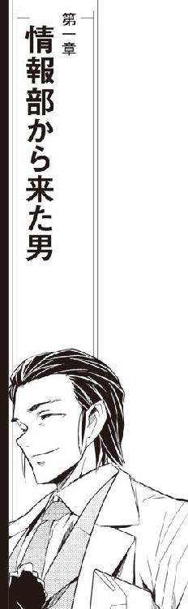

| ミニスカ宇宙海賊 07 蒼白の髑髏星 | |
| 笹本祐一 | |
| 朝日新聞出版 (2012) | |
イラスト／松本規之
カバーデザイン／シマダヒデアキ（ローカル・サポート・デパートメント）

「どお？」
かすかな換気装置に時おり電子音が聞こえるだけの静まり返ったブリッジで、茉莉香はおそるおそる訊いてみた。
「どうもこうもねえ」
百眼はレーダー／センサー席のディスプレイを睨みつけたまま答えた。
「電子妨害に囮に赤外線、重力その他センサーに捉えられるだけの偽装信号、よくもまあこれだけのものをばら撒いてるもんだ」
「そお」
船長席の茉莉香は難しい顔でうなずいた。
「状況はあいかわらず最悪のまんま、か」
戦闘空域は全域に強力な電子妨害がかけられた状態である。レーダーの出力を上げられるだけ上げても近距離でしかあてになるデータは返ってこないし、迂闊にセンサーの感度を上げたらオーバーフローで焼き切れるような状況がずっと続いている。
「現時点でのこっちの生き残りは？」
「迦陵頻伽とバルバルーサだけ」
クーリエが答えた。
「あとは全部、沈没判定喰らって戦線離脱してる」
「順当なところが残ったわね」
茉莉香は、黒髭船長の海賊船バルバルーサとカーン伯爵の迦陵頻伽を思い浮かべた。私掠船免状持ちの海賊船の中でも一、二を争う実戦経験をもつバルバルーサと、色々と規格外の兵器を搭載している迦陵頻伽は、下馬評でも最後まで生き残るだろうと言われていた。
「敵艦隊は？」
「残存戦力、当初の三分の二ってところだな」
レーダー／センサー席に張りつきっぱなしの百眼が答えた。
「こんな悪条件下での乱戦となれば、修羅場の数こなしてフレキシビリティの高い海賊船だの、実戦経験豊富な侵略会社の遊撃艦隊が有利だろうとは思ったが、とにかく最初の敵の数が多かったからねえ」
百眼は、これまでの戦闘の流れをリストにしてメインスクリーンに高速スクロールさせた。
「なんせ、相手は帝国第五艦隊、この辺りを仕切るおっかない正規艦隊の機動打撃艦隊が二つ、ご丁寧に今回のために特別編成したハンターキラー艦隊までいるってんだ。予算も人員も装備も施設も使い放題の胴元みたいなイカサマ相手に、よくもここまで健闘したもんだよ」
「こっちの残りは、弁天丸入れても三隻」
茉莉香は、険しい顔で戦況ディスプレイの艦隊配置を見直した。レーダーもセンサーもろくに通らない状況での表示は、あまりあてにならない推定配置だと思った方がいい。
「それに対して、敵はあわせてまるごと艦隊二つに、旗艦と来たら全部ご健在か」
茉莉香は、はふうと大袈裟な溜息をついた。
「ぼろ負けだわね」
「まあ、ここまで生き残ってれば特別ボーナスに追加の報酬までつくから、採算分岐点はとっくに越えて大幅黒字なんだけど......」
クーリエが気の乗らない声で船長席に振り向いた。
「どうする？ たぶん、ハンターキラーがこっち向けの最終攻撃に特別編成の艦隊を設えてるはずよ。待ってたら待ってるだけ、状況が悪くなる」
「わかってる」
戦場で敵の出方を待ちたくなるのは自然な反応である。今生き残っていて、危険が差し迫っているように見えないのなら、人は現状を維持したがる。
しかし、茉莉香は「おまえの見ていない敵が、おまえをばっさりやるよ」と母親から教えられていた。
「バルバルーサと迦陵頻伽の現在位置はとれてる？」
考えながらの茉莉香の質問に、クーリエはすぐに答えた。
「推定位置だけど、だいたい見えてる。こっちも向こうも無線封鎖状態だから、確実とはいかないけれど、たぶんこの辺り」
クーリエは、ディスプレイ上にバルバルーサと迦陵頻伽の推定現在位置を表示した。茉莉香は、意を決したように顔を上げた。
「通信回線、開ける？」
「そらまー、呼び掛けるくらいは簡単だがね」
言いながら百眼は通信回線の設定を開始した。
「だが、わかってるとは思うが今のこの状況で呼び掛けたら、聞き耳立ててる帝国艦隊に弁天丸の位置がもろばれだぜ」
「わかってる」
茉莉香は、ろくな情報を映していない戦況ディスプレイを見やった。
「そして、バルバルーサや迦陵頻伽が返信してきたら、そっちの位置も帝国艦隊に筒抜けになる。一度現在位置確定させたら、こんどはもう逃げられないぞ」
「それも、わかってる」
茉莉香は、通信パネルを指先で弾いた。
「でも、今のまんま敵の出方を待ってたって、負けがちょっとばっかり先に延びるだけだわ。かといって単独で反撃したって的になるだけ。状況最悪なら、何やったってこれより悪いことにはならないんじゃないかしら」
「上にはいくらでも上があるというか、下にはいくらでも下があるというか......」
百眼は軽やかに通信パネルを叩いた。
「おっけー、通信回線、設定完了」
ヘッドセットを手に取った茉莉香は、念のために確認してみた。
「暗号化は大丈夫？ 通話内容は解読されない？」
「おう、そっちは保証するぜ」
シートから肩越しに船長席に向いた百眼は、親指をばっちり立ててみせた。
「絶対に解読不能、とまでは言わないが、大丈夫、電子戦艦のスパコン束にしても解読される頃にはとっくに戦闘終了してるはずだ」
「それだけ保てば充分」
茉莉香は、ヘッドセットを耳に当てた。
「回線、開いて」
「了解」
通信パネルの表示が変わった。強電子妨害下なのと、通信相手に返信させる危険を冒させるわけにはいかないから、茉莉香は接続確認のサインを待たずに口を開いた。
「弁天丸よりバルバルーサ、迦陵頻伽、聞こえますか？ こちら弁天丸、船長の加藤茉莉香です。応答は必要ありません。こちら弁天丸の加藤茉莉香です」
つい癖で、茉莉香は言葉を句切って回線に接続完了のサインが出るのを待ってしまった。自分で応答は必要ありませんと言ったのを思い出して、苦笑いしながら茉莉香は続けた。
「今さら状況に説明の必要はないと思います。この空域で動ける海賊船は、こちらが把握している範囲で弁天丸とバルバルーサ、迦陵頻伽の三隻だけ。どれも無傷ではありません。このまま黙って敵のハンターキラーの到着を待っていては、各個撃破されるのは目に見えています」
聞いてくれてるかなー、とバルバルーサの黒髭船長と迦陵頻伽の伯爵船長の顔を思い浮かべながら茉莉香は続けた。
「どっちみち、逃げるって選択は最初からありません。だから、ここは起死回生を狙って、計画案Ｂの３を実行しようと思います。目標は敵主力、第一打撃艦隊」
茉莉香は、ヘッドセットを耳に当てたまま片手でディスプレイに第一打撃艦隊の編成を呼び出した。戦闘空域外に待機している第一打撃艦隊は、緒戦に主力を注ぎ込んでからあとは様子見に徹しているから、その戦力はほとんど温存されている。
「もちろんこれは、弁天丸の独断専行です。付き合ってくれるかどうかは、バルバルーサ、迦陵頻伽の判断に任せます。回線はこのまま空けておきますけど、弁天丸が突撃開始したら電子妨害で連絡も取れなくなると思います」
言葉を句切って、茉莉香は返信があるかどうか待ちながら他に言うべきことがないかどうか考えてみた。
「弁天丸は、ハンターキラーの出動を待たずに準備完了次第打って出ます」
「プランＢの３ってなんだ？」
弁天丸の船体の状況を確認する片手間に、操舵手席のケインがどうでもよさそうに聞いた。
「知らね」
百眼は弁天丸のレーダー系、センサー系を操って、有効半径外の敵艦隊の状況をできる限り正確に捕捉しようとしている。
「だが、だいたいプランＢなんて言い出したら成り行きまかせの出たとこ勝負に決まってる」
「当たり」
ヘッドセットを通信パネルに戻した茉莉香は、船長席に深く沈み込んだ。
「だけど、成り行きまかせでも出たとこ勝負でもないよ。目標は敵第一打撃艦隊の旗艦、ノイシュバンシュタイン。あとは無視して、旗艦に一撃さえ与えられればそれでいい。出たとこ勝負......勝ち目、薄いだろうなあ」
「ご都合主義と期待値込みで七パーセントってところね」
電子戦席のクーリエが乗らない声で答えた。
「期待値抜きのシビアな数字は、計算するだけ無駄だと思う」
「聞いても方針変更しないし」
「戦闘機動しながらの突撃だろ？」
機関まわりのセッティングとエネルギー供給系の調整をしながら、三代目が確認した。
「大砲には、どれくらい廻せばいい？」
「申し訳程度」
「なんだとお」
砲戦指揮担当のシュニッツァーが一応、抗議の声を上げる。
「だって、ハンターキラー艦隊抜けて敵の第一打撃艦隊の懐まで飛んでくのよ」
船長席に沈み込んだまま、茉莉香は説明した。
「うちの中口径の主砲じゃいくらエネルギー充填したって戦艦の装甲までは抜けないし、予定どおりなら的の数が多すぎるはず。エネルギーは回避機動に集中させて、電子戦メインに艦砲射撃は攪乱に使うべきだと思うの。どーせ命中したって戦果は見込めないんだから、それでなんとかやりくりしてくれる？」
「せっかく的が多いのに弾数が限られるのは面白くないが、それで正解だ」
シュニッツァーは艦載兵装に新しい方針を伝達した。
「今さら撃墜数増やしたところで大勢に影響はない。ミサイルはどうする？」
「ああ、せっかくだから使い切っちゃいましょう」
茉莉香は、まだけっこうな数が残っているミサイルの残弾数を見て船長席から身を起こした。
「最後の一撃に艦砲とミサイル、どっちを残すかは任せるわ。ルカ、いい突撃ルートはある？」
「これが一番楽」
航法席のルカは、いい加減極まりない航行ルートをメインスクリーンに映し出した。
「ハンターキラーとの接触を一番遅らせられて、第一打撃艦隊にできるだけ早く到達できる軌道はこれ」
航法パネルの水晶球に両手を当てていたルカは、付け加えた。
「と、思う」
「これだけひどい状況だもの、ぜーたくは言わないわ」
「そろそろ出られるぜ」
三代目が告げた。茉莉香は、弁天丸のブリッジを見廻した。
「武器は大丈夫？」
「行ける」
シュニッツァーが答えた。茉莉香は、再びヘッドセットを手に取った。
「全船、準備完了次第突撃します。各部、準備大丈夫ですか？」
各セクションから口頭やディスプレイ上のグリーンサインで応答が返ってくる。
「電子戦準備完了」「最終航路決定」「艦載兵装、戦闘準備完了している」「制御系問題なし、いつでも行けるぜ」
操舵席のケインが船長席に振り返った。
「で、そのプランＢの詳細は黒髭船長や伯爵には伝わってるのかい？」
「まさか」
茉莉香はにっこりと首を振った。
「もしさっきの通信が敵に傍聴されてたら、いい加減な解読でもして少しは混乱してくれないかと期待してるだけ。でも、こっちが宣言して飛び出せば、黒髭船長や伯爵ならこっちの意図くらいわかってくれるはずだわ」
茉莉香は、電子妨害が濃すぎて仲間の海賊船の状況もわからない配置図を見た。
「よっぽど卑怯な秘密兵器でも持ってない限りは、戦況分析は弁天丸でも他の船でも変わらないはず。だったら、動けるうちに逆襲に出ないと、黙ってたらやられちゃうもの。それに、もしこっちの方針に反対なら誰かが何か言ってくるはずだわ」
「打ち合わせなしで敵の本丸めがけて突撃ね」
レーダー／センサー席の百眼が面白そうにつぶやいた。
「おまけに、確認なし、付き合ってくれる期待だけとは、正規軍なら間違いなく軍事審判ものだな」
「わたしたち、軍じゃないもの」
茉莉香は、もう一度船長席まわりのパネルを見廻して状況を確認した。
「軍と同じ戦い方してたんじゃ勝てないし、あっちだってそんなの期待してないでしょ。それじゃあ、弁天丸、行きましょう。突撃開始！」
「了解、船長」
ケインは舵輪を握り直した。
「赤外線反応を相手に観測されるのも惜しい、微速前進！ 距離稼いでから囮にフレア噴かせて航跡を偽装する」
「まあ、こんなところでいきなりエンジン全開で飛び出したら、わたしを見てーそして射ってーてなもんだからねえ」
クーリエは空間状況に合わせて電子妨害を細かく調整している。敵のセンサーの配置が密だから、弁天丸とリモートコントロールが届く限りの無人機をうまく連携させないと、妨害電波の発信源から現在位置を知られる可能性がある。
「おお！ さっすが海賊」
クーリエは嬉しそうに声を上げた。
「囮何機か、こっちに付いてきてるわあ」
茉莉香は急いでディスプレイを切り換えた。
「バルバルーサか迦陵頻伽の囮が、こっちのカバーに入ってるってこと？」
バルバルーサも迦陵頻伽も、弁天丸ほどの電子戦力も通信能力も持たない。戦場に展開している囮の生き残りの数も弁天丸ほどではないが、そのうちいくつかは弁天丸と目標をひとつにするように動き出していた。
「そーゆこと。これでこっちが動き出したのは間違いなくハンターキラーにばれるけど、その代わりどれが本命かわからなくなるはず。電子妨害こんなに濃密にしたのはそっちなんだから、自分で注文したオーダーはたんまりチップ付けて支払いなさい」
「第一艦隊の旗艦さえ叩ければ、囮役は誰がやってもいいのよ」
茉莉香は、戦況ディスプレイに多重表示された海賊船側の囮を見た。強電子妨害下で、いくつもの反応が動き出している。
「旗艦叩くのにうちの主砲じゃちょっと心許ないから、できればバルバルーサか迦陵頻伽に最後の一撃決めて欲しいけど、うちに順番が廻ってきたとしても対艦ミサイル組み合わせればなんとかなるでしょ」
「よほど近距離まで接近して発射しないと、命中判定は貰えないだろうな」
シュニッツァーはコントロール・パネルを叩きながら答えた。
「だが、艦砲射撃でミサイルの援護射撃ができれば、命中確率を上げられるだろう」
「バルバルーサからデータ通信」
クーリエが伝えた。
「ビームで来た。ってことは、黒髭船長ったらこっちの現在位置を正確に把握してるってことか」
ほとんど攻撃のように細く絞られたビーム通信を正確に通信相手に命中させられれば、通信を傍受される心配はない。
「こっちから呼び掛けたもんねえ。敵艦よりは距離近いとはいえ、ここまで正確に狙われたってことは、敵にもこっちの位置ばれてるかな？」
つぶやいてから、茉莉香はクーリエを見た。バルバルーサからの通信が、まだ船長席に上がってこない。
「なんて言ってきたの？」
「ちょっと待って、弾丸みたいなパルスビームだったから圧縮が半端じゃないのよ。えーと、これで大丈夫かな」
高圧縮された上に厳重に暗号化されたデータだから、解きほぐすだけでもマシンパワーが必要になる。クーリエは、解読したデータをメインディスプレイと船長席に転送した。
「影に入れ？」
続いて出てきた進攻軌道を見て、茉莉香はうなずいた。
「わかった、バルバルーサに接近して密接編隊。行ける？」
「バルバルーサの現在位置と未来軌道まで教えてもらったんだ、行ける」
操舵輪を握るケインが答えた。
「で、そのあとは？」
「うちの囮をできるだけ保たせて、本体はバルバルーサと密接編隊でハンターキラー艦隊を突破」
茉莉香は、簡略化された未来軌道図と戦闘予想を読み解いて伝えた。
「迦陵頻伽とバルバルーサが二隻編隊でハンターキラー艦隊の手薄なところを突破。弁天丸はバルバルーサにぴったり張りついて、反応をひとつにまとめて居場所をごまかす、って手だと思う」
「キャプテン・リリカが海賊船に編隊を組ませたまま戦闘機動をやらせた、あの戦術の縮小版だ」
バルバルーサからのデータを一瞥して、シュニッツァーが解説した。
「バルバルーサと迦陵頻伽で二隻編隊を組むところまでは教本どおりだが、弁天丸はバルバルーサの至近距離でカバーに入る。敵の練度と密度からして、戦艦二隻を陽動に使っても弁天丸一隻が隠密し切れる可能性は低い。バルバルーサを楯に使えば、それだけ第一打撃艦隊に肉薄する確率を上げられる」
「少しは期待が持てるような確率になった？」
別画面で確率計算をしているクーリエに、茉莉香が訊いた。難しい顔で、コントロール・パネルから手を放したクーリエは腕を組んだ。
「バルバルーサにくっついてるうちの生存確率は三倍くらいに上がると思うけどさあ、その代わりハンターキラーと打撃艦隊に集中攻撃されるよ。影から出てからの生存確率、三分の一ってところかなあ」
「生きてられる時間が延びるなら充分だわ」
茉莉香はにっこりと言った。
「できれば第一打撃艦隊にとどめの一撃喰らわす役は、大口径主砲持ってる戦艦にお願いしたいところだけど、これからの乱戦で戦力保持するのが無理っぽいのは素人にもわかるもんねえ。シュニッツァーは、こっちの手持ちで有効な攻撃する方法確保しておいて」
「攻撃ポジションまで辿り着くのが至難の業だぞ」
「無茶振りされて苦労するのなんて、今にはじまったことじゃないでしょ」
シュニッツァーは戦闘指揮官席からゆっくりと船長席に首を巡らせた。
「妙なところがゴンザエモンに似てきたな」
「え？」
「いや、なんでもない」
「まあとにかく、このどんぱちで今回の仕事全部終わりになるはずですから」
茉莉香はブリッジを見廻した。
「あとは楽できるはずだから、もうひと踏ん張り、行きましょう」
「ほいほい」
航跡の赤外線反応を最小限に抑えるため、ケインは戦闘中とも思えないスムーズな操船で先行するバルバルーサに接近する。
「バルバルーサの影に入る。黒髭船長が直撃されたら、判定次第じゃこっちも道連れだ。うまく避けてくれよ」
「電子妨害のパターンが変化してる」
クーリエがぼそっと報告した。
「生き残りの海賊の、最後の共同戦線だって向こうもわかってるからかな。現在位置なんか教えてやるもんかって勢いの妨害電波ね」
「見える？」
茉莉香は、それだけを訊いた。
「どこに何がいて、どう動いてるか、見える？」
「あてにはならないけど、うすぼんやりとなら、なんとか。百眼、そっちはどお？」
「状況変わらず」
百眼は、センサーごとに微調整をかけて連携させている。
「だが、敵さんもこれがそろそろ最終決戦だってわかってるはずだ。そして、囮や幽霊はビームもミサイルも射ってこない」
百眼は、思い切りよく敵艦隊の予想配置図を描き換えた。
「最適攻撃位置をとれる艦は限られるし、攻撃位置にいない艦は無視したって問題ない。駒数が多いのをいいことに分散配置してくれた方が、直接戦闘相手が少なくなるからこっちには楽なんだ。戦力の逐次投入は愚の骨頂ってね」
現時点で捕捉している敵艦の配置を予定軌道に重ね合わせて粗い未来予想をかけて、百眼は手を止めた。
「とはいえ、瞬間最大で半ダースくらいは同時に相手しなきゃならないか」
「戦艦二隻と巡洋艦一隻なら、いい相手じゃない？」
茉莉香は、百眼の手になる会敵予想に目を走らせた。接触までには多くの修正が入るから、予想どおりに行くことはまず有り得ない。しかし、参考にはなる。
「向こうはこっちを沈めなきゃならないけど、こっちは向こうを突破するだけでいい。条件としては、最悪ってほど悪くないと思うわ」
「ポジションについた」
バルバルーサに至近距離まで接近して、ケインが言った。船腹同士を向かい合わせる艦位をとって、艦載兵装の死角を最小限にする。
「迦陵頻伽はもう突撃開始している。バルバルーサが追いついて二隻編隊を組むくらいのタイミングで、ハンターキラーの機動巡洋艦が射ってくるはずだ」
「こっちの態勢が整うまで待ってくれるなんて、いい相手じゃない」
茉莉香は、これからはじまる戦闘機動に備えて船長席に座り直した。質量の大きな迦陵頻伽の機動性能はそれよりは軽いバルバルーサに劣るから、こちらからカバーするしかない。
「バルバルーサから直接通信」
クーリエが伝えた。
「これだけ接近してれば、傍受の心配はない」
「任せる」
超光速で戦況が推移する戦場で、船長が直接判断を下さなければならない事態はそれほど多くない。その時に確実な判断を下せるように、茉莉香は船長席まわりのディスプレイを見廻した。
「戦闘データの交換でしょ？」
「そう」
クーリエは、手際よくバルバルーサと弁天丸の間に戦闘情報回線を設定した。
「互いの戦闘情報を共有できないと、死角のカバーもできないから。あーら、バルバルーサも前の時の設定残しておいてくれたみたい」
クーリエは、複雑な戦闘艦同士の情報回線を接続した。
「はいはい、お互いの情報信じてどんぱちしましょうねえ。機動巡洋艦相手にいちいち現在位置確認してたら、当たるビームも間に合わなくなっちゃう。ほいよ、設定終了」
『バルバルーサより弁天丸へ』
ブリッジに、黒髭船長のだみ声が響いた。
『こちらお馴染み黒髭だ。聞こえてるかい、茉莉香船長？』
「聞こえてます」
戦闘開始以後、久しぶりに聞くようなバルバルーサ船長、ケンジョー・クリハラの音声だけの通信に、茉莉香は応答した。
「感度良好。そろそろ大詰めですわね」
『おうさ、たぶんこれが最後の攻勢だ。図体のでかいバルバルーサで対艦攻撃は引き受ける。第一打撃艦隊旗艦へのとどめは任せるぜ』
「引き受けました」
茉莉香は請け合った。
「行きましょう」
『よおし、その意気だ。おっぱじめるぜ！』
三隻の艦隊を二隻編隊に見せかけて、海賊船団は襲いかかるハンターキラー艦隊を避けるように空いている空域への大加速を開始した。
宇宙空間における戦闘機動の手順は、大型戦艦でも小型戦闘機でもそれほどの違いはない。三次元戦闘の基本は大気圏内を飛ぶ初期の飛行機で確立されており、場所と規模に応じて変化しながら歴史によって洗練されてきている。
艦隊としての最小単位になる二隻編隊は、互いに敵を攻撃しつつ掩護を行う古典的な戦法である。戦艦二隻が相手ともなると、機動性に勝る機動巡洋艦も迂闊には接近できない。
対海賊船用に機動巡洋艦を揃えたハンターキラー艦隊は、二隻編隊を組んだ海賊船団を数で圧倒しようとした。索敵のためばらばらに先行していた巡洋艦隊を接近させ、遠距離砲撃で威圧しながら編隊をまとめて攻撃準備を整える。
海賊船団は、敵が攻撃態勢を整える前に突撃を開始した。ハンターキラー艦隊は、編隊を整える前に迎撃を行う必要に迫られ、タイミングを逃さずに迎撃に移った。
強電子妨害下での機動艦隊戦は、直接戦闘を避けようとする海賊船団とわずかずつでも攻撃を加えてダメージを与えようとするハンターキラー艦隊との根比べになった。敵の出方を読み、機動を予想し、攻撃パターンを解析し、対応しながら少しでも有効な反撃を行う。
ハンターキラー艦隊の機動巡洋艦三隻に沈没判定を喰らわせ、さらに二隻を戦闘続行不能に追い込んだところで迦陵頻伽が沈没判定を受けた。残るバルバルーサは迦陵頻伽の掩護も防護も期待できなくなった時点で機動戦闘のリミッターを解除、さらに二隻の大破判定を得たところで戦闘続行不能の直撃を受けた。
この時点まで、弁天丸はバルバルーサとほとんど一体になった戦闘機動に成功していた。機動巡洋艦を相手に充分とはいえない口径の艦砲射撃でいくつもの有効弾を得ているが、システム上それらはバルバルーサの有効弾と判定されている。
バルバルーサの戦闘続行不能判断が下ると同時に、弁天丸はその影から飛び出した。海賊船随一といわれる逃げ足で、そのまま第一打撃艦隊への突撃を開始する。
それまで弁天丸の存在に気づいていなかったハンターキラーと打撃艦隊の対応は遅れた。しかし、弁天丸が突撃開始した時点での打撃艦隊との距離は、敵に戦闘準備を整えるのに充分な時間を与えた。
いくつもの囮を放ちながら送り狼のハンターキラーを引き連れて打撃艦隊に突入した弁天丸は、数度の波状攻撃で中破判定を喰らった時点で自ら降服した。海賊船団最後の生き残りの弁天丸が白旗信号を上げると同時に、帝国第五艦隊が海賊相手に行なった大規模演習クロスボーン２２は終了した。
クロスボーン２２の演習終了後の総合デブリーフィング、通称「反省会」は、第一打撃艦隊旗艦であると同時に今回の演習で帝国側三艦隊の総旗艦も務めた統合打撃指揮戦艦ノイシュバンシュタインで行われた。
帝国の砲艦外交のシンボルとして各星系を廻る打撃艦隊は、高官との会談の舞台も提供する。艦隊三つに敵役の海賊船団すべての艦長、船長、艦載戦闘団の指揮官級が一堂に会した反省会はかなりの規模になる。
弁天丸からは、船長の加藤茉莉香、電子戦担当のクーリエ、戦闘指揮官のシュニッツァーが出席した反省会は、統合打撃指揮戦艦ノイシュバンシュタインのいちばん大きな可動議場スペースで行われた。
可動議場は、どのようでも配置できるボックス席の集合体である。弁天丸乗組員は、バルバルーサと同じボックス席を指定された。
「ここかい」
低重力環境の会議場に、バルバルーサのケンジョー・クリハラ船長は副長のノーラとともに現われた。
「また生き延びたな」
黒髭船長はにやにや笑いを全面に浮かべたまま茉莉香船長に手を上げた。
「弁天丸の不沈記録をまた延ばしたって話じゃないか」
「不沈記録？」
茉莉香は妙な顔をした。
「なんの話です？」
「知らないのかい？ ゴンザエモンの時代から、弁天丸は演習に参加しても沈没判定喰らう前に自分から降服するんで、沈んだことがないんだよ」
ケンジョーは、茉莉香の隣のクーリエに目をやった。
「教えてないのか？」
「全然」
クーリエはあっさり首を振る。
「てえことは、おまえたちの仕込みじゃないのか？」
クーリエは、隣のシュニッツァーに首を巡らせた。
「教えた？」
「いや」
席から立ち上がったシュニッツァーはケンジョーに敬礼を返した。
「ゴンザエモンの無茶苦茶な戦闘指揮は、教えたところで身につくようなものではない」
「めんどくさがりなだけだってルカに言われるわよ」
「そもそも、帝国軍相手の艦隊演習はこれが最初になる茉莉香船長が、撃沈判定と降服の違いをきっちり理解して使い分けるとは期待していなかった」
「きっちり理解してたようじゃねえか？」
にやにや笑いを張りつけたまま、ケンジョーは茉莉香に目を戻した。
「なあ茉莉香船長、よかったら聞かせてくれ。なんで撃沈判定喰らう前に自分から降服したんだ？」
「だって......」
茉莉香は、その時の自分の思考を思い出そうとした。
「撃沈判定が飛んでくるまで粘っても、やられるかどうかくらいわかるじゃないですか。だったら、無駄に粘るよりとっとと両手挙げた方が簡単だし、みんなも楽かなーと思って」
ちょいと眉をしかめて、黒髭船長は弁天丸の電子戦担当と戦闘指揮官の顔を見た。
「なるほど、ゴンザエモンとは違うようだ」
「はあ」
「ゴンザエモンは、ぎりぎりまで粘っていざという時の手の内を晒すこともあるまいって言ってたんだぜ」
「それも、めんどくさがりなだけです」
クーリエが小声で答えた。
「まだいくらでも打つ手があるのに、演習っていったら先代の船長は本番じゃないからって平気で手を抜いてましたから」
「ところで」
先に後ろの席を占領されていたので、前席に腰を下ろしながらケンジョーは声を潜めた。
「反省会あとの呼び出し、そっちにも来てるんじゃないのか？」
「......来てます」
茉莉香は答えた。
「そちらにも？ ってことは、演習のあと、いつも呼び出されてるわけじゃないんですか？」
「星系軍相手のお座敷じゃー、よっぽどの突発事故でもない限りはわざわざ別便のメッセージで呼び出しなんてことはない。帝国艦隊相手で、これだけ海賊を集めた大規模演習なら、反省会のあとは酒保が開放されてどんちゃん騒ぎってのがいつものパターンだ。まあ、パーティーの方は下っ端でも参加自由だから、管理職だけ呼び出されたところで大勢に影響はないんだが」
「なんでしょう？」
黒髭船長の広い背中に訊いて、茉莉香は隣のクーリエとシュニッツァーの顔を見た。クーリエだけが浮かない顔をしている。
「なんか、心当たりでもあるの？」
「気のせいだとは思うんだけどね」
クーリエはぶつぶつと答えた。
「どうも、今回の演習っていつもより帝国の仕掛けが陰険だったし、全滅戦なんていつもと違うシナリオだったし、前回までと様子が違うのよ」
「そうなの？」
船長としての立場上、茉莉香も前回までの弁天丸が参加した帝国艦隊との演習や模擬戦闘に関する資料は目を通している。しかし、文字どおり目を通しただけで、具体的な戦闘状況やその背景まで理解しているとは言い難い。
「いつもの帝国相手の演習なら、もっときっちりシナリオが決まってたし、だいたい最近の敵役は反乱軍とかそんな背景もなしの東軍西軍とか、まあ海賊なんてやくざな宇宙船だけじゃなくて軍事会社の私設艦隊と合同で敵軍やってたりするから、統合軍やるにもそれなりの設定が必要なのはわかるんだけどさ」
長くなりそうである。茉莉香は、シュニッツァーの表情を盗み見た。機械化された戦闘サイボーグは、クーリエの話を遮らない。
「せっかく演習相手に海賊を集めてるなら、対海賊向けの戦闘にした方が成果も大きいと思うのに、正規艦隊が掃討戦争後に海賊相手の演習をする必要はないとかなんとか理屈ばっかり吐かして、まあ楽な仕事はさせてもらってたんだけどさ。それが今回に限ってきっちり敵を海賊に設定した戦闘演習、おまけにこんな自由度の高いシナリオ。帝国艦隊って、こんなに物分かりがよかったり簡単に方針転換するような小廻りの利く組織じゃないはずなのよ。なのに、こんな設定でこんな演習だなんて、どう考えてもおかしいのよ。方針が変更されたか、指揮系統になんか変なのが入ったか、それとも裏で糸引いてる黒幕でもいるのか」
「いいじゃねえか、どうやらその黒幕とやらは気前よくギャラをはずんでくれるようだし」
ケンジョーは議場に集まっている演習参加艦艇の指揮首脳の顔を見渡している。
「最後まで生き残れたおかげで、演習参加のギャラはたんまり上乗せされた。たぶんこのあとの呼び出しで種明かしがあるんだろう。お楽しみは、その時までとっておいてもいいんじゃないのかい？」
「帝国は、金払いはいいけれど気前はよくない」
クーリエはぶつぶつ言った。
「彼らが気前がいいときは、必ず相応の理由がある。自前の艦隊持ってて動かせる連中が、他の宇宙船を使おうなんて時は気をつけた方がいいわ」
演習参加全艦艇の艦長、船長、指揮官級を集めた大規模演習後デブリーフィング、通称反省会は、立体動画を使った全体の動きの説明とシナリオを書いた統合参謀司令部の総括といういつもの手順でプログラムどおりに終了した。
閉会後に、同じボックスにいた弁天丸、バルバルーサ、そして隣のボックスの迦陵頻伽の指揮官級は士官候補生に別室に案内された。
「これはこれは」
芝居がかった仕草とともに、ケンジョー船長は軍艦の中とは思えないような調度で飾られた円形の会議場に入ってきた。
「迎賓用の特別室じゃねえか」
「妙ですわね」
表情も変えぬまま、ノーラは応えた。
「最低でも大使級に使われるクラスの部屋に、我々のような海賊を通すとは」
「すごー」
私掠船免状更新のために訪れた海明星行政府の大統領執務室が建売住宅の居間に見えるような天井の高い部屋に、茉莉香はすっかりびっくり眼になっている。
「帝国艦隊の旗艦って、こんなすごい部屋持ってるんだ」
「賓客用の応接室は、空間や調度に予算がかかっている以外にもうひとつの使い途があります」
クーリエは、士官候補生に案内されるまま、つまらなさそうな顔で円卓に備えつけの大きな椅子に腰を下ろした。
「なあに？」
「ただでさえ軍艦の中ってのは機密保持の厳しいところですけれど、ここはたぶん、とびっきり。対電子防御は、電子戦艦の中枢コンピューター以上じゃないかしら」
クーリエは、士官候補生の眼も気にせずに持ち込んだ作業バッグの中からカードのような汎用アナライザーを取り出した。
「もともと、ノイシュバンシュタインに乗り込んだ時から携帯端末もトランシーバーも通らなくなってるけど、ここは艦内からの電磁波もなんにもなし。ほとんど電波暗室ね」
「つまり......」
茉莉香は、古典美術の調度品が自然石を削り出した柱の間に並べられている円形の会議室を見廻した。
「ここでの会話は、外には洩れないって、そういうこと？」
「指揮艦の貴賓室と言えば、設備と同時に厳重な機密防護でも有名だ」
案内の士官候補生を露払いに、特徴的な杖の音とともに海賊船迦陵頻伽の船長カーン伯爵が現われた。
「わざわざここに呼び出されたということは、我々だけに機密を要する話があるということだろう」
「三隻だけですか？」
茉莉香は、いつも連れている黒髪の副艦長とともに入ってきたカーン伯爵に訊いた。
「迦陵頻伽と、バルバルーサと、弁天丸だけですか？」
「他の船の乗組員は見かけていません」
黒髪を高く結い上げたドレス姿の副艦長は、茉莉香とケンジョーに目礼してから士官候補生のエスコートで席に着いた。
「今回の演習で最後まで残った三隻、ですわね」
ケンジョーの顔を見て、茉莉香はクーリエとシュニッツァーに目顔で訊いた。
「なんか、特別ボーナスでも出るのかしら？」
こほんと咳払いして、クーリエは言った。
「金払いのよすぎるスポンサーは、危険です」
「お待たせしました」
軍服ではなく、ビジネススーツに白衣をひっかけた優男が円形会議室に入ってきた。手にした大判のファイルを拡げ、円卓に着いている海賊船船長たちの顔を一人一人見廻す。
茉莉香は、隣のクーリエが猫のような威嚇音を出したのに気づいた。
「バルバルーサからケンジョー・クリハラ船長、ノーラ副長、弁天丸から加藤茉莉香船長、クーリエ、シュニッツァー」
「あんた......」
クーリエのつぶやきが聞こえないふりをして、白衣の優男は平然と続けた。
「迦陵頻伽から、船長のカーン伯爵、副長のレディ・アンヌ」
優男は大判のファイルをぱたんと閉じた。
「デブリーフィング後においでいただいたのは、あなた方三隻の海賊船の船長だけです」
優男の合図に応じて、背の高いドアについていた士官候補生が会議室を閉じた。ご丁寧にもでかい鍵を持ち出し、古典的な機械音を響かせてシリンダー錠をロックする。
「ご心配なく」
円卓の反対側まで行った優男が席に着いた。
「高度に機密を要する話があるので、念を入れさせていただいております。そうややこしい話ではありませんので、お時間は取らせません」
社交用の笑みを浮かべて、優男は海賊一同の顔を一人一人見渡した。ほぼ正面からぐるぐるメガネ越しに睨みつけているクーリエで視線が止まる。
「やあクーちゃん」
優男はクーリエに親しげに手を挙げた。
「久しぶり。元気だったかい？」
「クーちゃんて言うな！」
重い椅子がひっくり返りそうな勢いで立ち上がったクーリエは牙を剥いた。
「あんたが後ろで糸引いてたの、ナッシュ！」
「もちろん、と言いたいところだが」
ナッシュと呼ばれた優男はわざとらしくウィンクしてみせた。
「無理無理、こんな下っ端にこんな全部のお膳立てできるわけないじゃん」
磨き抜かれた黒曜樹のテーブルに手をついて、ナッシュも椅子から立ち上がった。
「自己紹介が遅れました。わたくしの名はナット・ナッシュフォール。帝国艦隊の、情報部に所属しています」
「情報部!?」
声を上げたのは茉莉香だけだったが、海賊たちの間に静かな驚きが拡がった。ただひとり、クーリエだけがナッシュから目を外さない。
「統合参謀司令部付き情報部」
クーリエが付け加えた。
「ずいぶん出世したわね」
「おかげさまで」
一礼して、ナッシュは腰を下ろした。
「今の状況までフォローしてくれてるなんて、少しはこっちのことを気にしてくれてるのか、な？」
「誰が！」
吐き捨てて、クーリエは椅子に腰を落とした。茉莉香は、椅子に横座りしてテーブルに肘をついて目を逸らしたクーリエとナッシュを見比べた。
「まず、今回の演習、クロスボーン２２における迦陵頻伽、バルバルーサ、弁天丸の健闘に敬意を表します」
ナッシュは、テーブルの上に置いていたファイルを開いた。
「今回は艦隊司令部の意向により、今までより自由度の高いより実戦的なシナリオでの演習でした。状況は帝国艦隊側に圧倒的に有利。事前のシミュレーションでは敵役はもっと簡単に撃破される予定で、特別設定のボーナスは予想より長く生き残った宇宙船に出されます」
ナッシュは、にこやかに海賊たちを見廻した。
「おめでとう。君たちは、こちらの予想より二二一パーセントも長く生き残り、最後には失敗に終わったとはいえ艦隊中枢への逆襲まで行なった。予想外の結果です」
「ありがとうよ」
黒髭船長が片手を挙げた。
「だが、帝国艦隊の頭脳といわれる情報部が、たかだか海賊にお祝いの言葉を述べるためだけにわざわざ出てきたわけじゃないだろう。本題はなんだ？」
「そうですね」
ナッシュはファイルのページに触れて表示を更新した。
「海千山千の海賊船長相手に勿体つけてもしょうがない。単刀直入に行きましょう」
ナッシュは、ファイルから顔を上げた。
「この三隻が最後まで生き残ったことは、わたくしたちにとっても幸運でした。なぜなら、あなた方は辺境の海賊ギルドからの招待状を受けている」
誰も眉も動かさない。にもかかわらず、茉莉香は同席している海賊たちの緊張度が急に上がったのを感じた。
ミューラ・グラントの名での海賊ギルドへの招待状は、一般の通信物と一緒に届いた。そして、少なくとも今の今まで海賊ギルドからの招待状がそれぞれの宇宙船の外で話題になったことはない。茉莉香の知る限り、オデットII世や加藤梨理香が海賊ギルドからの招待状を受け取ったことは部外者には知られていないはずだった。
黒髭船長や伯爵の顔を見ずに、ナッシュに目を据え続けるには意志力が必要だった。茉莉香は情報部から来た男の次の言葉を待った。
ナッシュは、ほとんど反応を見せない海賊船長たちの顔を見廻した。
「それも、あの有名な海賊、ミューラ・グラントからの直々の招待状だ。海賊ギルドに乗り込むのに、これほど完璧なライセンスはない」
「どこからそれを知った？」
ケンジョーが口を開いた。
「なんぞと、今さら情報部に訊いたところで無駄だろうなあ」
ナッシュは儀礼的にうなずいてみせた。
「だが、どこの誰が真紅の招待状を受け取ったかご存知なら、そのあとの我々の行動もご存知のはずだろう」
ケンジョーは、隣の弁天丸一行とさらにその隣の迦陵頻伽一行に手を差し上げた。
「せっかく届いた招待状だが、バルバルーサじゃ申し訳ないことに返信も出してない。なんかの役に立つかどうか思案中だが、うまい話はまだ思いついてない。つまり、おれたちは海賊ギルドには興味もないし、できればこれからの航海で関わり合いにもなりたくないと思っている」
異論がないのを確認するように同業者の顔を見てから、ケンジョーはナッシュに目を戻した。
「という、こっちの意向も、天下の情報部なら承知のはずだよな？」
「承知しております」
閉じたファイルの上に両手を重ねて置いて、ナッシュはうなずいた。
「だからこそ、こうやって下っ端とはいえ情報部が出てきて直接の依頼が必要になる」
ナッシュは、情報部よりもビジネスマンを思わせる社交用の笑みを浮かべたままもう一度うなずいた。
「髑髏星に、行っていただきたい」
会議室に静寂が訪れた。初めて聞く星の名に、茉莉香はゆっくりとクーリエとシュニッツァーの顔を見た。顔色の変化は読み取れない。黒髭船長も伯爵も、眉ひとつ動かしていない。
「髑髏星」
ナッシュは、聞こえていないような海賊たちに繰り返した。
「スカルスター、航法上の正式名称はオケアノス７１８７ｇ３。またの名を、海賊島」
一人一人の反応を見るように、ナッシュの視線がゆっくり動く。
「そう、辺境の海賊たちの本拠地であり、すべての海賊の故郷であり、海賊ギルドの本部があるところだ」
「仮にも参謀司令部の、それも情報部なんて仕事してる人から髑髏星なんて名前が出てくるなんてびっくりだわね」
円卓に肘をついた掌に顎をのせたまま、クーリエが口を開いた。
「実在するなんて、本気で信じてるの？」
「信じませんか？」
にこやかな笑みを浮かべたまま、ナッシュはクーリエに軽く首を傾げてみせた。
「あなた方が受け取った海賊ギルドへの招待状には、推薦人である海賊ミューラ・グラントの名とともに海賊ギルドの座標も記されていたはずだ。オケアノス７１８７ｇ３」
ナッシュは、すっかり覚えているのであろう星の登録記号を口にした。
「そこが、辺境の海賊たちの本拠地なのではないですか？」
「残念ながら、おれたちゃ辺境の海賊じゃないんでなあ」
ケンジョーが両手を挙げて首を振った。
「髑髏星が実在するのか、そこがほんとに海賊島として有名な海賊ギルドの本拠地なのか、海賊ギルドが言われているような辺境の海賊どころか犯罪組織のみならず反帝国勢力としての反乱軍まで束ねる強力なコネクションなのか、だあれも確実なことなんか知らない」
ケンジョーは、ナッシュに顔を上げた。
「それこそ、辺境にまで艦隊を展開させている統合参謀司令部の頭脳といわれる情報部の方が、確実な情報を持ってるんじゃないのかい？」
「だから、ね」
それまでそっぽを向いていたクーリエがナッシュを睨みつけた。
「それで、第五艦隊じゃなくて情報部が出てきたってわけね」
クーリエが、ナッシュに身体ごと向き直った。
「海賊島は帝国外、辺境にある。そして、辺境は第五艦隊じゃなくて第七艦隊の担当。双方に跨って動けるのは、担当星区に縛られる艦隊じゃなくて統合参謀司令部の、それも情報部」
クーリエは、分厚いぐるぐる眼鏡越しにナッシュを睨みつけた。
「正直に答えてくれる？」
「おや、情報部の人間に正直に答えろと？」
ナッシュは楽しそうにうなずいた。
「ええ、それがお望みなら、なんでも答えましょう」
肩をすくめて、クーリエは質問を開始した。
「今回の演習は、情報部の肩入れ？」
「細かい事情の説明を省けば、ええ、そうです」
ナッシュは首肯した。
「帝国艦隊があなた方のような私掠船免状、あるいは星区限定の営業許可証を持つ海賊を相手に演習するのは年中行事みたいなものです。ただし、今回の演習が例年と違うイレギュラーな形になり、敵味方の自由度を大きく上げる形になったのは、我々の依頼を第五艦隊が受けてくれたからに他なりません」
「今回の演習のレギュレーションを変えた理由は？」
「あなた方海賊の正確な戦力を計るため」
ナッシュはすらすらと答えた。
「だが、そんな答えではクーちゃんは納得しないでしょう」
「クーちゃんて言うな」
「今回の演習の表向きの目的は、自由度の高い演習で第五艦隊の即応性を上げること。そして、我々情報部にとっての目的は、あなた方が我々の望む任務に相応しい力があると統合参謀司令部に証明することでした」
「調子のいいこと言っちゃって」
クーリエは呆れたように溜息をついた。
「で、第五艦隊も情報部も期待していた目的を達成しちゃったわけね？」
「はい、それも、こちらが想定していた合格点数をはるかに上廻る好成績で」
ナッシュは力強くうなずいた。
「帝国艦隊としては、臣民を危険な場所に赴かせるのは本意ではありません。しかし、あなた方ほどの実力があればどんな困難があろうと確実に無事帰ってきてくれるでしょう」
「髑髏星に善良な一般市民送り出そうって帝国の、それが言い草？」
ふん、とクーリエは鼻を鳴らした。
「それで、はるか彼方の髑髏星にまで海賊送り出して、やらせたいことって何？」
ぐるぐるメガネをちょっとずらして、上目遣いのクーリエはじっとナッシュを見つめた。
「まさか、招待を受けて海賊ギルドに加盟しろとか、スパイとして情報収集してこいとか、そんなお仕事じゃないわよね？」
珍しいものでも見るようにしばらくクーリエの顔を見つめてから、ナッシュはうなずくように目を伏せた。
「我々が交渉の場に赴く場合、状況に応じて相手に情報をどこまで開示するかは本部に指示されます。関連情報も、ほのめかす程度までなら許されるのか、それとも正確な情報を伝えてはいけないのか、でたらめな情報を並べて立ててもいいのか、相手により、また状況により開示できる情報のレベルは様々に変化します」
ナッシュは、クーリエに顔を上げた。
「これから話すことは、わたくしの権限で許される最上位の情報です。できれば、口外はしないでいただきたい」
「ここにいない、うちの乗組員にも？」
確認するように言った伯爵に、ナッシュは視線を向けた。
「はい。もし、我々の仕事を受けてくれるなら話は別ですが、まだあなた方はこの仕事を受けてくれるとも、できないとも言っていない。髑髏星への航行が決定したのならともかく、そうでない段階である今は、この部屋を出ると同時にこの件に関する話は忘れていただきたい」
円卓の向こうの海賊たちの顔を一人一人見てから、ナッシュはクーリエに視線を戻した。
「情報部は、辺境の海賊ギルドとの交渉チャンネルを持ちたいと望んでいます」
情報はそれで全部だといわんばかりの顔で、ナッシュは軽くうなずいてみせた。
はん、とつまらなさそうに答えて、レンズの間に指をかけたクーリエはメガネを上げた。
「掃討戦争で帝国から海賊を追い出し、領内の海賊の存在は認めないって公言してる帝国艦隊が、今さら領外にいるとはいえ海賊との交渉？」
クーリエは、関係者なら承知しているはずの事情を繰り返した。
「それは、帝国艦隊の総意？ それとも、情報部の独走？」
「非合法活動を旨とする、犯罪者の集団としての海賊なら、もちろん帝国艦隊として海賊に対する姿勢は今までと変わりません。しかし、辺境における海賊たちは、単なる非合法の犯罪集団だけではない」
「海賊ギルドに名を載せてる海賊どもの罪状を全部チェックしたのかい？」
黒髭船長が円卓に片肘をついた。
「海賊ギルドにいる連中だからって、全員が義賊気取りの無法者ってわけじゃあるまい。人気の賞金首から犯罪コネクションの私設艦隊まで、ひとまとめに評価できるような連中なのかい？」
「残念ながら、情報部にも海賊ギルドの最新の正確な名簿はありません」
ナッシュは笑顔混じりに首を振った。
「だから、ギルドに名を連ねる海賊たちのうちどれほどが凶悪犯の賞金首で、どれほどが海賊ギルドという広域互助組織の恩恵のために登録しているだけの宇宙船なのか、正確な判断がついているとは言い難い」
ナッシュは、海賊たち一人一人の顔を見ながら続けた。
「その中には、帝国のみならず辺境からも賞金をかけられている極悪人もいるし、海賊ギルドに加盟していながら一度の海賊行為すら行なっていない者もいる。そりゃまあ多少の脱法行為はあるでしょうが、それだけでは正義を標榜する帝国艦隊が一方的に全滅させる理由にはなりません」
ナッシュはもっともらしい顔で首を振った。
「だから、まとめて敵に廻すには、都合が悪い」
「掃討戦争の時とは、ずいぶんと違う言い草だな」
伯爵が静かな声で言った。
「あの時の帝国艦隊は、銀河の中の海賊と名のつくものはすべて排除するという方針だったのではないか？」
「何事にも事情と例外が存在するのはご存知のとおりです」
海賊たちの反応を確認するように、ナッシュは続けた。
「現実問題として、艦隊は独立星系が私掠船免状を発効してその活動を認めているあなた方のような海賊や、独立企業がエンターテイナーとして営む海賊業には手を出していない。帝国領内で合法的に活動を続けている海賊があなた方だけではないのは、ご存知でしょう」
「ご都合主義なんてどこにでもあるわ」
クーリエが応えた。
「少なくとも、情報部が主義主張や教条信条だけで今回の仕事を考えてるわけじゃないことはわかった。でも、それはもっと複雑で厄介な問題を相手にすることだって、ちゃんと認識してるの？」
「辺境のすべての海賊が、掃討すべき悪者ならこちらとしても対処には困りません。だが、実際に海賊ギルドに所属している宇宙船の内訳はそれほど単純ではない。辺境のすべての星が反乱軍に与しているわけではないように、辺境の海賊たちも腕や装備、行動様式と同じくらい主義主張にも多様性が見られる。ならば、そのすべてをまとめて敵にする必要はないでしょう。交渉で避けられる戦闘があるならば、交渉を嫌うべきではない。そもそも、情報部は戦わずして勝つために存在するのですから」
ナッシュはクーリエを見返した。
「この答えで、満足していただけますか？」
クーリエはまったく表情を変えずに質問を続けた。
「問題をちゃんと認識してるのは、情報部全体？ それとも、あなたを含む一部だけなの？」
「もちろん、わが優秀なる艦隊の頭脳たる情報部は、その構成員の末端に至るまで等しく問題を認識しております」
しゃちほこばって答えたナッシュは、軽く首を傾げてみせた。
「と、言えればそりゃあ我々の仕事もいろいろ楽でしょうがね。しかし、辺境星区で実際に海賊を相手にしている第七艦隊と同程度には、同志が等しく問題を認識しているものとわたくしは期待しています」
「同志なんて言い出してる時点ですでに信用ならないんだが」
黒髭船長は、ぎろりとナッシュを睨みつけた。
「海賊ギルドとチャンネルができたからって言ったって、それで全部の海賊とコネができるわけじゃあるまい」
「正しい意見ですね」
「もし帝国艦隊が敵として排除すべき海賊とそうでない海賊の区別をつけたいなら、すべての海賊と、ひとつひとつ交渉チャンネルを作る必要があるんじゃないのかい？」
「必要ならば」
ナッシュは答えた。
「というよりも、それが、情報部の最終目的です。辺境の星区にも行政府にも縛られない海賊たちひとつひとつとチャンネルを持てるのであれば、それはそれだけで強力な武器となる。もちろん、チャンネルの維持管理は簡単な仕事ではないでしょうが、得られる情報は充分にそれに見合うものになるはずだ」
「そこまで遠大で手間のかかる仕事を本当にやろうとしているなら、わざわざ私掠船免状持ちの海賊なんてややこしい存在に話を持っていかなくたって、直接帝国艦隊の艦で行けばいいんじゃない？」
クーリエはつまらなさそうに提案した。
「第七艦隊の戦艦に白旗でも掲げさせて、真正面から髑髏星目指していけばいいんじゃないの？」
「帝国艦隊はそこまで海賊を信用していません」
ナッシュは他人事のように答えた。
「そして、海賊もまた、帝国艦隊を信用していないでしょう。今の段階で帝国の艦艇を動かすのは、無用の騒ぎを起こすことになりかねない。それに、コストのかかる帝国艦隊を動かすよりも、民間経営であるあなた方海賊船を動かす方が必要経費が安くつく」
「なるほどね」
呆れた声で、黒髭船長はぽりぽりと頬を掻いた。
「そりゃまあ、辺境区とはいえ帝国の艦艇がこともあろうに海賊なんぞに沈められたとなれば大事だろうが、私掠船免状持ちの海賊船一隻がどうにかなったところで大した問題にはならないと、そういう計算かい」
「否定しません」
笑顔のまま、ナッシュは黒髭船長にうなずいた。
「計算能力にかけては大手商社並みのうちの主計部が、近い結論を出しています」
「うちらの宇宙船と生命が帝国艦隊と比べてどんな査定をされてるのか興味深いところだが、それはまあいい」
ノーラ副長を見て、ケンジョーは情報部員に目を戻した。
「そんな表も裏もありそうなややこしい話、しかも情報部が帝国の代理人として交渉しなきゃならないような話を、もし首尾よく海賊島まで辿り着けたとしても、おれたち海賊に任せるわけじゃあるまい？」
「もちろんです」
笑顔のまま、ナッシュは円卓の海賊たちを見廻した。
「もし、招待状に応じて髑髏星に行っていただけるのであれば、海賊船にはそれなりの権限をもつ情報部の人間が乗り込むことになります。例えば、弁天丸なら、このわたくし、ナット・ナッシュフォールが髑髏星までご一緒することになるでしょう」
ナッシュは、仏頂面のクーリエに視線を止めた。
「クーリエ、君の宇宙船に乗せてくれないかい？」
「厄介な話だったようじゃねえか」
反省会終了後の打ち上げパーティーは、統合打撃指揮戦艦ノイシュバンシュタインの艦内単一スペースとしてはもっとも巨大な容積を誇る中央艦載デッキをまるごと会場として、参加全艦艇の将官と全海賊を招いて行われていた。
海軍仕様の巨大なジョッキを両手に持った百眼は、シュニッツァー、クーリエとともに会場に現われた茉莉香をめざとく見つけた。
「わかる？」
通りすがりの自走ワゴンから、船長服の茉莉香は薬物酩酊成分が含まれていないフレッシュジュースのグラスを注意深く選別した。
「そりゃね」
百眼は、持ってきたジョッキのひとつをシュニッツァーに渡して打ち合わせた。
「大反省会のあとに最後まで生き残った海賊船三隻の船長級だけが呼び出されて、今まで打ち上げに出てこないとなれば、そりゃあ単純な話じゃないってわかる」
百眼は、渡されたジョッキを一気に空にしたシュニッツァーに声を掛けた。
「さすが、自前で醸造所まで持ってる戦艦だけあって、うまいビールが呑めるぜ」
「代わりをもらってくる」
「あとは、船長とクーリエの顔見れば、な」
クーリエは、スナック山盛りの自走ワゴンを一台捕まえて積み上げられた極彩色のスイーツをむさぼり食っていた。
「どうだい、ここで話せるような話かい？」
「じゃ、ないと思う」
難しい顔をしたまま、茉莉香はジュースに口をつけた。
「後でみんなにも、みんなだけじゃなくて、他の船長とも相談しなきゃならないような話だと思う」
「他の船長？」
百眼は、辺りをはばかるように見廻してから声を潜めた。
「黒髭船長や伯爵とも、か？ 今回の話、そんな大事なのか？」
「大仕事なのは確か」
茉莉香は、柑橘系の匂いのさわやかな色合いのジュースに口をつけた。控えめな甘味が心地好い。
「......あと、梨理香さんにも訊いた方がいいかな」
「罠だ」
ケインは言下に吐き捨てた。
「厄介な罠だねえ」
百眼はレーダー／センサー席に向かったまま、顔も見せない。
「言うまでもないでしょう」
ルカは水晶球に手をかざしている。
「ええと、二重の罠、で済むかな？」
機関士席の三代目はあれこれ指折り数えている。船長席の茉莉香は、ブリッジのみんなを見廻した。
「みんな同じ意見？」
「まず、海賊ギルドからの招待状が罠の可能性がある、って気づいてるわよね？」
オブザーバー席のミーサは、真紅の封筒を指先に挟んでいる。
「海賊ミューラともあろうものがそんな姑息な手を使うとも思えないけど、でも、海賊ミューラは必要ならどんな手でも打つってことで知られてる。取り逃がした銀河帝国の私掠船免状持ちをわざわざ自分のテリトリーにおびき寄せて、借りを返させるために招待状を送ってきた、って可能性だってあるのよ？」
「だとしたら、一番恨まれてるのは梨理香さんだろうなあ」
茉莉香はつぶやいた。茉莉香の身のまわりに届いた海賊ギルドからの招待状は三通、二通は弁天丸とオデット二世宛だが、一通は加藤梨理香を名指ししていた。
「でもさ、海賊ギルドの招待状って一応船長たちの推薦が通ってからでないと発送されないんでしょ？ 復讐のために罠かけるなら、もっと他にもいろいろ方法があるんじゃないのかしら？」
「今までにそんな話を聞いたことがないからって、この招待状が罠じゃないって保証にはならないわ」
オブザーバー席から立ち上がったミーサは、船長席を囲むコントロール・パネルの上に真紅の封筒を置いた。
「これが最初の罠かも知れないし、そもそもわたしたちにはこれが海賊ギルドの正式な認証を受けた招待状かどうか確認することはできない。正式な招待状だったとしても、海賊ギルドの大立者であるミューラならそれを罠に使うことだってできるかも知れない。そして、帝国艦隊の情報部ともあろうものがその可能性を考慮してないはずがない」
ミーサは、膝にかけた毛布ごと船長席に向いているクーリエを見やった。
「そうよね？」
「海賊ギルドの真紅の招待状は、お話のネタにだって使われるくらい有名なものだもの」
クーリエはぶつぶつと応えた。
「たまたまタイミングがあって正式な招待状が発送されたとしても、情報部がその情報を掴んだのならそっくり同じものを偽造して、弁天丸でもバルバルーサでも似たような艦と乗組員を仕立てて髑髏星に乗り込むなんて作戦は立てられるはずよ。外部を巻き込まない方が、軍としてはやることが簡単なはずだから」
「でもそれは、帝国艦隊が海賊ギルドをまるごとぶっつぶそうとか、そういうことを考えてる場合の話でしょ？」
茉莉香は、一応反論を試みた。
「今回は、艦隊が海賊ギルドとの交渉チャンネルを持ちたい、ってのが本筋だって言うじゃない。だから、わざわざ招待状もらった私掠船を相手にこんな話持ちかけたんじゃないの？」
「帝国艦隊の敵は、辺境の反乱軍や海賊だけではない」
シュニッツァーが重い口を開いた。
「帝国艦隊の中には、帝国領内で合法的に活動する海賊をこころよく思わないものもいる。帝国が一枚岩で、みんな我々の味方だとは思わない方がいい」
「この機会に、潰せる私掠船免状持ちは潰しておいた方がいい、って考えてるかも知れないってこと？」
「そう考えているかも知れないものも帝国の中にはいるだろう、ということだ」
「つまり、海賊ミューラかギルドかそこのところまだはっきりわからないけど、辺境の海賊がわたしたちに復讐しようとして仕掛けられたのが招待状、その情報を得た帝国艦隊がギルドごと海賊をぶっつぶそうとしてるか、ついでに私掠船免状持ちの海賊もまとめて殲滅しようとしてる可能性もある、と」
茉莉香は、右手で指折り数えてみた。残る左手を拡げて挙げる。
「で、それに対する報酬って、どうなの？」
茉莉香は左手を拡げたまま、ブリッジのクルーたちを見廻した。
「この仕事してる間にばっくれなきゃならない通常業務の違約金、あるいは代役は全部帝国艦隊が持ってくれるのは当然としても、危険手当まで上積みされた報酬って、法外とまではいかないけれどかなりいいものよね？」
「この件に関しては税金関係なしってところまで艦隊の保証が入ってるってのが、おいしいっちゃーおいしいんだよなー」
百眼がうーんと唸る。
「で、その莫大な報酬に加えて、特別発効される帝国の白紙免状って、この機会逃して無視しちゃっていいくらいのものなの？」
ブリッジクルーの誰も、茉莉香と目を合わさない。確認するように茉莉香は続けた。
「用途は海賊業務に限定されるとはいっても、白紙免状を使えば今の契約じゃほぼ不可能な宇宙船まるごとの更新も、直系の家族じゃない船長の任命もできるんでしょ？ これって、かなり凄い話なんじゃないの？」
ナッシュは、海賊たちに特別任務に関する報酬の説明も行なった。任務期間中に契約していた仕事のキャンセルあるいは代役についてはすべて艦隊で責任を持つこと、危険手当を上積みした成功報酬については誰も顔色を変えなかったが、最後のおまけが凄かった。
帝国発効の白紙免状。白紙免状を使えば帝国領内のほぼすべての法律、契約事項を一時的に上書きできる。
使い方によっては違法行為すら合法とできる白紙免状は簡単には発効されないし、その効力を発揮するには帝国による監査を必要とする。司法取引などで発効されるケースがあるというが、表向きその存在は公式には認められていない。
今回成功報酬として発効される白紙免状は、帝国が海賊免状を発効している各星系政府との関係において効力を保証しているという触れ込みだった。
ブリッジクルーたちは気まずそうに視線を交わした。
最初に口を開いたのはミーサだった。
「帝国が大盤振る舞いなのは確かね。白紙免状の発効だけなら、帝国の威光を使うだけで報酬ほどの経費を用意する必要もない。そして、わたしたち海賊を銀河帝国で合法的に海賊たらしめている私掠船免状の項目を一時的にでも上書きできるなら、メリットは大きい」
茉莉香はミーサに向き直った。
「でしょ？ 弁天丸っていい宇宙船だと思うけど、みんないっつも文句言ってるし」
「まあ聞きなさい。白紙免状の効力が星系政府に対して発揮されるなら、安上がりに見えても帝国は将来にわたって目に見えない経費を負うことになる。帝国の都合で行政側と海賊の関係をいじることになるからね、帝国は行政側に借りを作ることになる。つまり、白紙免状の発効ってのは安上がりに見えて実は現金なんかで済む報酬よりはるかにややこしくて重いってこと。こんな餌までぶら下げてきたってことは、艦隊が今回の仕事をそれだけ大事だと思ってるか、でなければ......」
言いにくそうに語尾を濁したミーサに代わって、シュニッツァーがあとを引き取った。
「免状を使わずに済む方策を用意している可能性まで考慮しなければならない」
「免状を使わずに済む、って......」
「仕事が終わっても、報酬を受け取る人がいなければ、白紙免状を使われる心配はないわね」
ミーサは言った。
「報酬に関しては受取人まで全部いないことにするのは難しいだろうけど、白紙免状に関しては当事者に直接手渡しが原則だから」
「そこまで考えてるかなあ？」
茉莉香は、首を傾げてみんなの顔を見廻した。
「もし、軍が白紙免状を餌にしか使う気がなくて、任務終了後に握りつぶしちゃうとか考えてるんだったら、もっと秘密めかして事を運ぶんじゃないかと思う。情報部の人はくれぐれも内密になんて言ってたけど、海賊船の船長を三人も付き添いつきで呼んで話したら、だだ洩れするのは覚悟の上じゃないの？」
「それは、話した人の性格によるわね」
ミーサの一言で、ブリッジクルーの視線がクーリエに集中した。くちもとを歪めて、ぐるぐる眼鏡のクーリエが明後日の方向に目を逸らす。
「ナッシュって、そういう人なの？」
茉莉香が追い撃ちをかけた。
「ていうか、どういう知り合いなの？」
唇を尖らせて、クーリエはしぶしぶ視線を戻した。
「情報部の人間が、同じ所属ならともかく部外者に秘密を守れなんて言って、それが守られると信じてるわけないでしょ。話が洩れるくらい計算してなきゃ、統合参謀司令部で情報部なんて仕事やってられるはずないわ」
「チェスみたいに十手二十手先まで読んで仕事しなきゃならないって、しんどそうよね」
茉莉香はクーリエから目を離さない。
「つまり、帝国艦隊は今回の件については白紙免状を約束どおり発効させる気がある、と思っていいんじゃないの？」
難しい顔で、クーリエは俯いた。茉莉香はさらに訊いた。
「あのナッシュって情報部の人、その辺りは信用できるの？」
さらに俯いたクーリエがうーんと唸る。
「計算高いのは昔っからだけど、損得勘定も早かったからねえ。信用されてる場合とされてない場合、どっちが得かくらいは計算してるとは思うけど」
「どっちに計算してるの？」
クーリエは艦長にばっと顔を上げた。
「わかんない。だけど、あたしならあいつは信用しない」
「なんで？」
「期待を裏切る奴だから」
クーリエはくるりと椅子ごと電子戦パネルに向き直った。
「なんで、とか何があったの、とか訊いても答える気ないから、そういうことで」
「はあ......」
茉莉香は残るブリッジクルーの顔を見廻した。肩をすくめたり溜息をついたり、誰もクーリエにそれ以上のコメントを求めてくれそうにない。
「えーと、それじゃあ、百眼、ショウさんに連絡とって」
「保険会社に相談かい？」
持ち場に向き直った百眼が、通信回線の設定を開始した。茉莉香は首を振った。
「ううん、そうじゃなくて、演習終了の報告と、あと、できれば情報収集」
『クロスボーン２２の大健闘、おめでとう』
通信モニターに現われたアフロヘアの怪人は、開口一番拍手した。
『それも、帝国艦隊の事前予想の倍以上も生き残ったらしいじゃないか』
「さすが」
船長席の茉莉香は、保険組合のエージェントに挨拶代わりの敬礼を返した。
「ハロルド・ロイド保険組合、終わったばっかりの演習結果を、もうそんなところまで掴んでるんですか？」
『情報収集には労を惜しむべからず、ってのが創業以来の方針でね』
機密を告げるような口調で、ショウは言った。
『楽してちゃ稼げないのは、今も昔も一緒だ。おかげで、演習参加の報奨金もたんまり割り増しになったんじゃないかい？ 顧客の懐事情が順調なのは、うちにとっても喜ぶべき事態だからねえ』
派手なサングラス越しのショウの表情を読み取ろうとして、茉莉香は諦めた。
「ええと、大丈夫だとは思いますが、以後の会話は高度の機密を要します。そちらの態勢は大丈夫ですか？」
『おうよ』
ショウは自分のまわりのコントロールパネルを確認するように、指先でくるりと輪を描いた。
『クラスIIIの暗号コード指定に個人認証までついてれば、いつもの定時連絡やただの事後報告じゃないくらい見当がつくぜ。ハロルド・ロイド保険組合最高の暗号回線が作動中だ。たぶんそっちの通信回線には帝国艦隊が聞き耳立ててるだろうが、守秘義務期間中くらいは通信内容が解読されないことを保証しよう』
「聞き耳、立てられてる？」
茉莉香は、大反省会終了後からむすっとしたままのクーリエに訊いてみた。
「たぶんね」
電子戦席のクーリエはいつもと同じ口調で答えた。
「演習終了後の部外参加艦艇なら、帰還中くらいは艦隊の電子戦艦が聞き耳立ててると思う。ましてや、今回は事情が事情だから......」
クーリエのことだから、盗聴防止のために一通りの手は打っているはずである。
「保険会社相手に暗号回線で内緒話中、くらいまではばれてると思った方が身のためか」
つぶやいて、船長席の茉莉香は通信モニターのショウに目を戻した。
「ええと、クロスボーン２２の結果についてはご存知のようですから報告は省略します」
『できれば茉莉香船長の口から演習での大活躍を聞きたかったが、そうもいくまい』
ショウは軽く手を振った。
『構わないから、本題に入ってくれ。次以降の仕事の話だろ？』
保険組合のエージェントが事情をどこまで承知しているのか考えながら、茉莉香は続けた。
「ええと、まず確認です。もし、帝国領外で弁天丸が活動した場合、ハロルド・ロイド保険組合のサポートはどこまで受けられますか？」
『うちの保険でカバーされるのは、弁天丸が私掠船免状の範囲内で活動している限り帝国領内だけだ』
用意していたように、ショウはすらすら答えた。
『帝国領外で想定外の損害を受けても、残念ながらうちはそれをカバーできない。今さら確認するほどのことでもないことを、わざわざ訊いてくるってことは、つまり、そういうことかい？』
ショウのサングラスがきらりと光った。
「そういうことっていうのがどういうことなのか、よくわかりませんけど」
茉莉香はとぼけてみせた。ショウは喰いつきそうな歯をにやりと剥き出した。
『とまあ、表向きはそうなってるが、ご存知のとおりわがハロルド・ロイド保険組合の仕事場は帝国領内には限られない。辺境区の主な星系やステーションには代理店を置いて、手広く商売してるのはご存知のとおりだ。弁天丸の活動が帝国領内でしかカバーできないのは主に保険契約の問題であって、その辺りは柔軟に対応する用意がある。これで、そちらの望む答えには近づいたかい？』
「ありがとうございます」
茉莉香は、モニターの向こうのショウに一礼した。
「交渉の余地がいっぱいある、ってだけで今は充分です。ええと、いくつか訊きたいことがあるんですけどいいですか？」
『おう、長年のお得意さまだ。なんでも訊いてくれ』
「ハロルド・ロイド保険組合の辺境での仕事に、海賊船相手の保険業務は含まれますか？」
いきなりの茉莉香の質問に、ショウは笑みを浮かべた。
『含まれない。うちは伝統と格式を誇る老舗の保険組合だからね、海賊なんて信用ならない輩とは商売しちゃいけないことになってる』
自分の言葉にうなずいてから、ショウは続けた。
『ってのが、まあ表向きだ。そして、ご存知のとおり、正直に自分を海賊船だなんて名乗って船種登録してる宇宙船は、実はほとんどない。私掠船免状持ちの海賊船なんてどこにでもいるもんじゃないからね。ほとんどの海賊は、自分の持ち宇宙船を輸送船、護衛艦、観測船、調査船とか、どこの港にも大手を振って入れるような船種で登録しているのが普通だ』
治安の行き届いている銀河帝国領内でさえ、規模は制限されるし法定費用もかかるものの、民間船の自衛用兵器の搭載はある程度認められている。兵装に統一規程のない辺境では、無武装の宇宙船の方が珍しい。
『そして、それらの宇宙船が正規ルートでまっとうな保険を求めてくれば、うちとしても応じないわけにはいかない。辺境の港でも、最近は最低限の保険に入ってなきゃ入港不可ってところが多いからね』
「ショウさんの保険組合なら、どんな名目で登録されていても実体がどうなのかは把握していることと思います」
茉莉香は言った。
「本当のところ、海賊船って多いんですか？」
『少ない』
ショウはあっさり答えた。
『それに、本格的な保険金詐欺のためにでっかい契約やろうとする連中でもなければ、うちの辺境業務は安心してどの港にでも入れるような掛け捨ての保険を安価に提供してるのがほとんどだ。時々、港の設備を壊したとか、スクラップ同然の宇宙船が港に乗り捨てられたとかで面倒見にいかなきゃならないこともあるが、本格的な海賊行為に関わるような保険は、少なくとも海賊側にはうちは提供していない。そして、海賊に襲われた時の保険は辺境区じゃ帝国領内よりはるかに高額になるから、残念ながらそれほど売れてない』
ショウは楽しそうに付け加えた。
『どうしたい？ 辺境区で海賊にでも転職しないかって、帝国艦隊にでもそそのかされたのかい？』
「ええ、まあ似たようなものです」
茉莉香はあいまいな笑みを浮かべた。
「ありがとうございました。詳しい話は、もっと状況が定まってからさせていただきます」
『おう、相談ならいくらでも乗るぜ。いつでも連絡してくれ』
終了処理はクーリエに任せて、茉莉香は通信を切った。
「......知らないわけじゃないわね」
船長席のバックレストにもたれかかって、茉莉香は目を閉じた。
「だな」
黙ってエージェントと船長との話を聞いていた百眼が、シートごと船長席に向いた。
「保険会社の情報収集能力は、帝国艦隊の情報部と同等以上ってのが業界の常識だ。辺境区でなら、おそらく艦隊より保険会社の方が上だ。なんせ、連中が分析評価する情報は商売に直結してるからな」
「社交辞令込みかも知れないけど、止める気配はなかった」
茉莉香は、次の自分の所見を口にした。
「まあ、うちがいきなり辺境区に出張なんて仕事振られたって知ってるとは思わないけど、辺境の海賊事情訊いても顔色ひとつ変わらなかったわね」
「ショウの顔色が変わる、なんて言ったらそりゃあ大変だあ」
操舵席のケインが頭の後ろで手を組んだ。
「そりゃあ、弁天丸がどうにかなっちまう以上の大事だと思った方がいい」
「話の持っていき方次第じゃ、情報提供も期待できる」
「こっちが持ってる情報も渡すって言えば、間違いなく乗ってくるんじゃないかなあ」
クーリエは、電子戦卓に向かったまま指を走らせている。
「海賊ギルド、それも髑髏星まわりの情報となれば、保険組合って立場じゃなくても聞きたがる奴は多いわよ」
「でも、それって、行って無事帰ってこれたらの話でしょ」
茉莉香は船長席に沈み込んだ。
「わたしたち、情報屋やってるんじゃないんだから、海賊ギルドの情報なんか持ってたってうまく商売できないし」
「だけどまあ、なんかの間違いで弁天丸が海賊ギルドに加盟できたりなんかしたら」
操舵席にシートを廻して、ケインは操船系のチェックを開始した。
「そりゃあ本物の海賊だってことになるから、弁天丸の商品価値はぐっと上がるだろうなあ」
「今だってじゅうぶんお座敷仕事で忙しいのに」
冗談めかしたケインの物言いに、茉莉香は笑み混じりに応えた。
「これ以上、弁天丸の名前を売る必要、あるかしら？」
「その辺りは船長の判断に任せよう」
「じゃ、いらないわよ。弁天丸一隻しかいないのに、これ以上手広く商売するつもりなんかないんだから」
茉莉香の言葉に笑いながら、ブリッジクルーは通常勤務に戻った。
弁天丸の海明星への帰還は、新奥浜市の現地時間で夜になった。今日は日勤だった加藤梨理香は、学校を休んでまで船長として仕事した娘の帰りを夕食を作って待っていた。
「ただいま」
「お帰り」
いつもどおりの挨拶のあと、夕食の席の話題は茉莉香の海賊仕事になる。帝国艦隊相手の演習の展開をあれこれ説明しながらのメインディッシュのあと、食後酒のワインを傾ける梨理香にデザートジュースで付き合いながら、茉莉香はこれから先のことを考えていた。
「梨理香さん......」
訊こうと思っていたのと別の質問が口をついた。
「なんで、宇宙海賊になったの？」
飲みかけのグラスを口につけたまま、梨理香の動きが止まった。
「そっちから来たか」
一口だけ飲んで、梨理香はグラスをテーブルに置いた。
「それが、宇宙を知る一番手っ取り早い方法だと思ったから、かな？」
「あれ？」
茉莉香は冗談めかして首を傾げた。
「おっきなビームガンとかぶっ放せるからじゃなかったの？」
「それも、ある」
梨理香は大真面目な顔でうなずいた。
「でも、本当の理由はそれじゃない。宇宙海賊になれば、航空宇宙学校や教習所に通うよりも早く、この銀河系宇宙ってものを自分の目で見て、触って、知ることができると思ったんだ」
航空宇宙学校は、宇宙船乗組員の養成を目的としている。オーナーパイロット向けの短期コースから、商業運行用の船長資格取得を最終目的とする長期コースまで、滞在期間も学習内容もよりどりみどりである。
「宇宙軍に入隊とか、輸送会社に入るなんて手もあるが、軍じゃあ上の命令には絶対服従だし、何より宇宙軍は学校の成績がよくないとパイロットコースになんか入れてくれない」
「梨理香さん、成績よくなかったの？」
「教師に心配されず、期待もされない程度の成績はとってたがね。宇宙軍のパイロットコースなんていったら、学校で一番二番なんてトップエリートがごっそり集められるんだ、残念ながらそれほどの成績じゃなかった」
笑いながら首を振って、梨理香は続けた。
「輸送会社に入って宇宙船に乗れたとしても、会社の言うとおりの軌道しか飛べないしね。でも、宇宙海賊なら自分の望むように飛べるし、専門の職種だけじゃなくて他の分野のやり方も学べると思った」
「うちのみんなも、勉強熱心だもんねえ」
茉莉香はうなずいた。クーリエや百眼が最新の戦闘情報や技術情報を熱心に収集しているのは職業柄当然だろうが、操舵手のケインが主砲塔で照準の付け方をシュニッツァーに教わっていたり、ミーサが手空きの乗組員に緊急救命の講義をしたりしているのは珍しいことではない。それが単に勉強熱心なわけではなく、どんな非常事態にでも対処するための準備だと茉莉香が気づいたのは最近のことである。
「海賊船の船長なんかやってると、転換炉の運転調整からビーム砲の整備までなんでもやらされるだろう？」
梨理香はちょっと懐かしそうな顔で娘を見た。
「あたしなんかキャプテンなんて名ばかりのお飾りだったから、船長業務なんかは撫でる程度にしか教わらなかったが、それでも看護見習いから経理業務までなんでもやらされた」
「役に立った？」
ミーサの横にナース服で立つ母親を想像しながら、茉莉香は訊いてみた。梨理香は大きくうなずいた。
「ああ。宇宙船がどうやって動いてるのか、銀河がどうやって廻ってるのか、しっかり学べたよ。それがわかってるから、管制官なんて厄介な仕事を続けてられるんだ」
梨理香は新奥浜宇宙港で地上勤務だが、管制範囲は軌道上にまで及ぶ。中継ステーションの手が足りない時は、軌道管制の一部も地上で行うことがある。
ちょっと考えて、茉莉香は訊いてみた。
「それじゃあ、弁天丸降りてから、管制官の資格取ったの？」
「ああ」
なんでもなさそうに梨理香はうなずいた。
「海賊船じゃ出港から戦闘処理までの実地訓練には事欠かないが、資格を取ろうと思ったらちゃんと指定の場所で試験受けなきゃならないからねえ。おまえが入ってたでっかいお腹抱えて勉強して、養成所上がりの学生たちと一緒に受験して。そんな時代もあったっけねえ」
「たいへん......」
想像して、茉莉香はつぶやいた。娘が船長として弁天丸に乗り込むようになっても、梨理香はほとんど仕事の話をしなかった。変わっていく所属や肩書きを見ていれば、母親の仕事に要求される技術も責任も年ごとに重くなっていくのが茉莉香にもわかる。しかし、梨理香が話し出さない時は茉莉香も訊かない。
「海賊やってたおかげで学べた一番大事なことを教えよう」
梨理香は、食後酒のグラスを取った。
「うわあ、ありがとう」
茉莉香はテーブルに肘をついて身を乗り出した。
「宇宙空間にいるものは、すべて物理法則に従って飛んでいる。軍隊だって海賊みたいな無法者だって、物理法則だけは無視できない。でも、人みたいな知性体によって飛ぶ宇宙船は、物理法則以外にもいろいろ気にしてるものがある。なんだかわかるかい？」
茉莉香は少し考えてから答えた。
「航行法とか？」
航行法は、主幹航路がきっちり整備管制されている銀河帝国の領内のみならず、辺境区でもある程度有効である。恒星ひとつに匹敵するほどのエネルギーを内包する宇宙船が無秩序に飛び廻ったら、起きうる事故は周辺空域の環境にまで影響を与える。
「それも、答えのひとつだ」
梨理香は海明星産のデザートワインをくいっと呷った。
「だが、それだけじゃ合格点はやれない」
ワイングラス片手のまま、梨理香はさらに考えている娘の顔を見やった。
「都合だよ」
「え？」
聞き取れなかったように、茉莉香は訊き直した。
「すべての宇宙船は、都合とか事情とかがあって飛んでいる。輸送船なら、積み荷を期日までに目的地に届けなきゃならないし、軍艦は訓練や巡視や警戒やいろんな目的のために飛ぶ。自家用クルーザーの遊覧飛行だってお遊びって立派な目的がある。海賊船の目的はなんだい？」
「獲物を探して、海賊すること」
遠い昔に何かの本で読んだ一節を、茉莉香は口にした。梨理香は笑ってグラスの残りを一気に空にした。
「そのとおりだ。彗星や遊星は生成された時の事情とそのあとの成り行きで今の軌道を飛んでいるし、星系だって銀河の自転と一緒に動いてる。だが、人が少なからぬ労力とエネルギーを使って宇宙船を動かす時は、物理法則だけじゃなくてそれぞれの都合がある。見えてる宇宙船の全部の都合がわかってれば、管制も戦闘もそれほど難しいもんじゃない」
「はあ......」
茉莉香はさらに難しい顔をして椅子にもたれかかった。
「前にジェニー部長やシュニッツァーに聞いた戦略目標と戦術目標の違い、みたいなやつ？」
「そこまで難しく考えなくてもいい。急いでるのか行きたくないのか、撃ちたいのか撃ちたくないのか、どこに行って何をしたいのか、させたいのか、させたくないのか」
梨理香は、空にしたグラスを縦横に傾けてからくるりと一回転させてテーブルに置いた。
「銀河は物理法則に従って動くけど、宇宙船はそれだけじゃなくて知性体の都合によっても動かされるってことだ」
「はあー」
上半身の力を抜いて倒した茉莉香は、こめかみをテーブルにことんと伏せた。
「宇宙船の数だけ都合もあるってことか......たいへん」
「ほとんどの宇宙船は一人乗りじゃないから、乗ってる人間の数だけ都合があると思った方がいい。それから、宇宙船に関わるのは空の上にいる連中だけじゃない。地上でいろいろ都合をこねくり廻してる奴らもいる」
「......そうでした」
行儀が悪いと叱られる前に、茉莉香は顔を上げた。
「まわりのことばっかり考えて、自分の仕事と都合を忘れないようにな。さて、今の我が家の都合は？」
「後片づけ」
答えて、茉莉香は立ち上がった。
「さー、さっさと済ませちゃおう」
「あら、お帰りなさい」
午後の授業が終わったばかりの白凰女学院ヨット部部室には、部長のリン・ランブレッタひとりが備え付けの情報端末と向かい合っていた。
「無事、帰りました」
今回の休みが海賊船としての仕事だということは、茉莉香は隠していない。いつもどおり挨拶した茉莉香に、リンはシートごと廻して向き直った。
「帰って早々で悪いんだけど、ちょっと話、いいかい？」
「え、そりゃ、構いませんけど」
「進路希望調査票の最終チェックの時期なんだ」
リンは、白凰女学院の定型文書が映し出されているディスプレイを隠しもせずに指した。
「大学進学ですよね？」
茉莉香は、ディスプレイを見ないようにして言った。
「部長の成績なら、推薦でもいいところ狙えるんじゃないですか？」
言ってから、茉莉香はあれ？ と考え込んだ。
「部長、ジェニー部長と一緒の宇宙大学進学希望ですよね？」
銀河帝国の最高学府である宇宙大学は、推薦入学を受け付けていない。入学試験を受けるだけでも推薦が必要であり、数次にわたる選抜試験を突破するには、実力はもちろん運すら必要であるといわれている。
先代部長であるジェニー・ドリトルは今、宇宙大学で学んでいる。リンも、同じ大学を目指すと茉莉香は思っていた。
「残念ながら、おれの頭、ジェニーほど出来がよくなくてなあ」
照れ笑いを浮かべながら、リンは自分の頭を指先でつついてみせた。
「何回模試を受けても、安心できるような合格確率が出てこない」
「宇宙大学相手なら、模試で確率が実数で出てくるだけ凄いと思いますけど」
「まあもちろん、行けそうな他の学校行って来年再受験するとか、いっそのこと浪人とかいろいろ手はあるんだけどね」
リンは、茉莉香に顔を上げた。
「それで、相談なんだが、弁天丸って求人しないの？」
目をぱちくりさせて、茉莉香はリンの顔を見直した。
「ええええー!?」
「いや、いろいろ考えたんだけどね、もし将来、ジェニーと同じ仕事ができるとしたら、今のうちに現場のことを勉強しておくに越したことはない。ジェニーの実家は運輸業だから、宇宙と宇宙船のことを知っていればいろいろ役に立つ。そして、その辺り勉強しようと思ったら、宇宙海賊が一番手っ取り早いんだ」
「あ、あの、ぶちょ？」
「なんたって宇宙海賊は、法の外にいる。私掠船免状を楯に、普通の宇宙船なら乗組員に必要なはずの資格なしでも宇宙船を運航できる。なんたって、海賊だからな」
「えーと......」
厳密に言えば、海賊船は航行法の規程に従って乗員を揃えなくても宇宙船を運航できるわけではない。海賊船に限らずすべての宇宙船は航行法を守って安全に運行すべき義務を課せられている。海賊船は、私掠船免状を楯に民間宇宙船なら課せられるはずの罰則を受けずに済んでいるだけである。
「ほら、おれの特技ってこっちの方面だけど」
リンは情報端末に向き直ってコントロールボードを流れるようなタッチで弾きはじめた。
「電子戦用の民間資格なんかどこ探しても発効されてないんだよね。無線免許とか、大規模エネルギー発射システムの取り扱いとか、軍や侵略会社にでも入れば話は別だろうけどおいそれと資格取らせてくれそうなところないし、軍も侵略会社も資格取ったらハイさよならってわけにはいかないし」
「だって、ぶちょ」
「そういうわけで、手近で実戦向けに腕磨いてなおかつ経験値貯めて役に立つ経験ができそう、ってなると、宇宙海賊が一番だと思うんだ。茉莉香のところの弁天丸って、乗組員募集とかやってないの？」
「面白そうな話ですわね」
いきなり背中から話しかけられて、茉莉香は飛び上がった。
「グリューエル！」
「あれほどの腕利きの乗組員がいったいどうやれば集められて、しかもそのあと保持し続けられるのか、わたくしとしても興味があります」
中等部の制服がすっかり似合うようになったグリューエルは、にこにこと話を続けた。
「もしよろしければ、弁天丸の乗組員募集はどんなシステムで行われているのか、聞かせていただけませんか？」
「知りません！」
茉莉香は部長とグリューエルに力いっぱい首を振った。
「だって、今の弁天丸で一番の新入りが船長のわたしなんですよ!? わたしだって、船長がいないと海賊免許が無効になるからスカウトされたってだけだし、わたしのあとに弁天丸に来た乗組員なんていないし」
茉莉香は、リンが自信満々の顔で自分の胸を指しているのに気づいた。満面の笑みを浮かべているグリューエルを見て、茉莉香は彼女たちが自分よりあとに弁天丸に乗り込んだことがあるのを思い出して頭を抱えた。
「......いえ、忘れて下さい」
「新人の乗組員の募集とかやってないの？」
リンはさらに訊く。
「船長なら、その辺りの事情知ってるんじゃないの？」
「そりゃあ、海賊船なんて万年人手不足で、民間船なら仕事ひとつでいいところを二つも三つも掛け持ちしてるのが普通だし、実戦部隊の数が足りないからなんとかしたいってシュニッツァーが言ってるし、観測データの分析要員とか、クーリエも電子戦ができる人材どっかにいないかって言ってたし......」
つらつらと身内の事情を話しかけて、茉莉香ははっと我に返った。
「でも、だからってうちの学校の求職案内に海賊船乗組員募集なんて貼り出せるわけないじゃないですか！」
「できれば見てみたい光景のひとつですよね」
グリューエルは、リンと顔を見合わせてうなずき合った。
「うちの宇宙船、即戦力でないと乗り込むの難しいと思います」
茉莉香はぶつぶつと言い訳する。
「即戦力でなくてもなんとかなるのは船長くらいで、あとはみんなベテラン中のベテランだし、仕事も忙しいから新人入れて養成してるような余裕、あるかなあ」
「電子戦の新人、いらない？」
「やめて下さいってば部長。わたしの下で働くことになるんですよ？」
「いやあ、だって、他にいくらでも頼もしい先輩方が乗り込んでおられるわけだし」
「だから！」
「グリューエルだって、宇宙海賊って興味あるんじゃないか？」
話を振ったリンにぎょっとして、茉莉香はグリューエルの顔を見た。
「幸いなことにわたくしの皇位継承権は第七位です」
近所の噂話でもするように、グリューエルの口調は変わらない。
「つまり、上に六人もの皇位継承者がおります。将来の進路を、必ずしも皇位継承だけに限って考える必要はありません」
「侍従が聞いたら泣くだろうなあ」
茉莉香は溜息をついた。
「必ずしも皇位を守らなくても、幸いなことに妹もいますし」
「それに、弁天丸に乗ったからって一生宇宙海賊しなきゃならないわけじゃないだろ？」
リンが水を向ける。
「敵前逃亡だの職務放棄みたいな真似しなければ、何年か乗ってそのうち転職って手もあるだろ？ 宇宙海賊歴のある皇女ったら、そりゃあ外交的に強いんじゃないかい？」
「海賊皇女ですか？」
グリューエルはくすっと笑った。
「魅力的な肩書きですわね」
「うちは腰掛けの乗組員も高貴すぎる血筋の人も求めていません！」
茉莉香は声を上げた。
「関わった人みんな乗っけてたらあっという間に弁天丸パンクしちゃうし、それにみんながみんな海賊できるような凄腕とは限らないんです！」
茉莉香は空いている情報端末のメインスイッチを入れて席に着いた。
「進路のあてになんかしないで下さい！ わたしだって、一応進学希望なんだから」
一瞬の沈黙ののち、顔を見合わせたリンとグリューエルは抗議の声を上げた。
「ええー!? そりゃもったいない」「卒業後はフルタイムで海賊船長やるんじゃないんですか？ みんなそれを期待してると思います」
「みんなってどこの誰ですか！」
グリューエルにいーっと歯を剥き出して、茉莉香は立ち上がった情報端末のコントロール・パネルに指を滑らせた。
「わたしみたいな頼りない船長じゃ、弁天丸のみんなだって迷惑です！」
「だって、私掠船免状の規程で、替えはいないんじゃないのか？」
茉莉香の指が止まった。
「高校行きながらだって海賊の船長はできるんです！ 大学行ったらもっと時間自由になるんだもん、問題ありません！」
「女子大生海賊かあ。女子高生海賊よりはちょいと求心力に欠けるかな」
「なんの話ですか！」
だだだだっと必要データを打ち込んだ茉莉香は、さっさと情報端末をシャットダウンした。
「それじゃすいません、このあと役所廻りしなきゃならないんで、今日の部活も早引けしまーす」
リンとグリューエルにぺこりと一礼して、茉莉香は逃げるように部室を出ていった。
「まあ、入部当時から電子関係の扱いには慣れてる方だったけど、最近は一段と磨きがかかって、まあ」
あっという間に用事を終えて部室を出ていった茉莉香を、リンはばいばいと手を振って見送った。
「茉莉香さん、何しに来たんですか？」
グリューエルは、茉莉香が使っていた情報端末のシートにちょこんと収まった。
「さあ？ ちょっと待ってな」
リンは、メインディスプレイの進路調査票を後ろに引っ込めて部室に設置されている情報端末の使用記録を呼び出した。
「たぶん、備品の使用申請でも出していったんじゃないかと思うけど......ほら出た」
最新の記録から、リンは最新の使用申請を選び出した。
「日付は今日、時間はついさっき、申請者加藤茉莉香。知られたくないなら申請書なんか出さなきゃいいのに、こういうところ妙に義理堅いねえ」
「なんですか？」
グリューエルは、次々に切り替わるディスプレイを操作するリンの指使いを見ている。
「サイレント・ウィスパーの使用申請だ」
「え？」
グリューエルは部室の天井を見上げた。サイレント・ウィスパーは海明星中継ステーションの専用ドックに係留されている練習船オデットII世の艦載デッキに格納されている。
「電子偵察機、でしたよね？」
「ああ、それも帝国艦隊で試験配備がはじまったばっかりの上物だ。うちに星系軍がさんざ色目使って見学や試用を申し込んできてるらしいけど、いくらお堅いってったってうちの事務局がどうやって軍の依頼を撥ねつけてるんだか」
ヨット部の先代部長であるジェニー・ドリトルが持ち込んだ最新型の電子偵察機は、たまに行われる少人数でのヨット部の練習飛行くらいにしか使われていない。
「しばらくは、みんなでステーションまで上がる予定はないですよね？」
グリューエルは確認するように言った。
「ああ。再来週まで実地演習の予定はない」
「茉莉香さんの使用申請は、いつからスタートですか？」
「明日から一週間」
書き落としやミスがないのを確認して、リンは申請書類を閉じた。
「海賊船ででも使うのかな？」
「ずいぶん急ぎますのね」
何事か考えるようにつぶやいて、グリューエルは自分の目の前の情報端末のメインスイッチを入れた。茉莉香が学校に提出しているはずの欠席届を探してみる。
「欠席届なら出てないだろ？」
ハイスピードでコントロール・パネルを操るリンに言われて、グリューエルは隣の情報端末に向いた。
「茉莉香の欠席届はぎりぎり当日朝か、下手すりゃ一日遅れ、うっかり延びると本人と一緒に届いたりするからな」
「使用申請が明日から、ということは......」
リンに先廻りされた検索結果を繰り返して、グリューエルは学校からのお知らせが表示されている情報端末のディスプレイを見た。
「サイレント・ウィスパーを使うとしたら、明日の放課後から、ということでしょうか」
「弁天丸より茉莉香船長、聞こえますかどーぞお」
船長が海賊船に常駐していないという特殊事情のため、弁天丸は茉莉香との定時連絡を欠かさない。銀河標準時とほぼ同じ時間帯で動く新奥浜市の現地時間で一日に昼と夜の二回、茉莉香は弁天丸に自分の居場所と現在の状況を報告確認することになっている。
昼休みの時間帯を選んではいるものの、相手が厳戒態勢の女子校にいようが休日の自宅でのんびりリラックス中だろうが、定時連絡は行われる。鯨座宮たう星の内惑星空間を遊弋中だった弁天丸のブリッジで、本日の連絡当番ケインは通信回線を開いた。
応答なし。ケインは、茉莉香が高出力トランシーバーのスイッチを入れていることを期待して、もう一度パーソナルコードをコールした。
「弁天丸より茉莉香船長、定時連絡です。聞こえたら応答願いまーす」
現時刻の白凰女学院は昼休み、最後の授業が延長戦にでも入っていない限りは定時連絡できなくなるような状況にはないはずである。時間をおいてもう一度呼び掛けようかと考えているうちに応答があった。
『こちら茉莉香、加藤茉莉香です。ごめんケイン、待たせた？』
「ああ、ちょびっとだけどな。えーと、そっちは......」
念のために茉莉香の現在位置を確認しようとしたケインは目を剥いた。
「......外惑星軌道上!? どこで何やってるんだ？」
『ごめんなさい、説明しなきゃならないと思ってたんだけどそのうちゆっくり。今サイレント・ウィスパーで外惑星軌道を航行中、もうすぐ虹雲星の軌道を越えます』
「何い!?」
「サイレント・ウィスパーの現在位置を確認する！」
三代目が機関士席から百眼の指定席であるレーダー／センサー卓に飛び込んだ。
『大丈夫、クーリエが一緒だから』
「なんだってえ!?」
ケインは反射的に電子戦席に目を走らせた。もちろん空である。
「現在位置獲れた！」
通信データにサイレント・ウィスパーの現在位置が添付されているから捕捉は簡単だった。弁天丸は、たう星系第六惑星である大型ガス状惑星、虹雲星の軌道を越えようとしているサイレント・ウィスパーの現在位置を確認した。
「んなところで、何やってるんですか茉莉香船長？」
ケインの記憶にある限り、茉莉香が予告なしに宇宙空間に出たことはない。茉莉香が海明星の地上を離れることは弁天丸での船長業務とヨット部の活動くらいしかないはずだが、今まではすべてスケジュールが弁天丸にも知らされている。
『あ、あのね、先に髑髏星行ってこようと思って』
音声のみの通信の単語を聞き間違えたかと思って、ケインは隣の三代目と顔を見合わせた。
『情報部は髑髏星に行きたい、そこに行くのに必要なのは海賊ギルドの招待状だけで、船長さえいれば弁天丸ごと押しかける必要はないでしょ？ だったら、必要最低限の人数で行って情報収集してくるのが一番だと思ったの。運がよければこれだけで用事終わるし、終わらなかったらまた出直せばいいし』
「いきなり船長が出かけていってどうする気だ！」
ケインはマイクに噛みついた。
「情報収集ってのは下っ端の仕事だ、真っ先にトップが海賊ギルドの髑髏星に飛び込むなんて聞いたことがないぞ！」
「クーリエが一緒なのか？」
いつもどおりの低音で、シュニッツァーが通信に加わった。
「クーリエ、そこにいるのか？」
『はい、こちらサイレント・ウィスパー、クーリエ』
いつもより不機嫌な声で、クーリエが応答した。
『本機はただ今、虹雲星軌道を越えて、超光速跳躍の準備中』
「問題はないのか？」
シュニッツァーの最小限の質問に、クーリエはぶっきらぼうに答えた。
『最悪の場合の被害を最小にする、って船長に説得されちゃったの、ごめんなさい。まあ、船長とあたしの二人だけじゃなくて、帝国艦隊の情報部員も一緒だから大丈夫なんじゃないかなー』
「情報部員が一緒だあ!?」
ケインは声を上げた。シュニッツァーは確認した。
「ナット・ナッシュフォールか？」
応答が戻ってくるまでに、溜息ひとつ分の間が空いた。
『当たり。おかげでこの狭い偵察機で、辺境まで長距離跳躍よ。最新型だけあって足も速いし跳躍精度もかなりなものだから、予定どおりならすぐに行って帰ってこられるはずだけど』
「定時連絡は欠かすな」
シュニッツァーは言った。
「いつでも駆けつけられるよう、こちらも長距離跳躍の準備だけはしておく」
『あてにしてるわ』
気のない声で、クーリエは答えた。
『知らない宇宙で慣れない偵察機、しかも司令部付きの情報部員が一緒だからね。どうせまたろくでもないことになると思うから』
「航海の安全を祈る」
『そっちもしっかりね』
「それだけか！」
ケインは席から立ち上がっていた。
「それで終わりか!? ほんとに行かせちゃうのか!?」
「今から虹雲星まで跳んでサイレント・ウィスパーを止めるか？」
シュニッツァーは超光速通信の終了処理をしている。
「船長だけならいささか、というよりかなり心配だが、クーリエと情報部員まで付いているとなれば心配あるまい。というより、心配するだけ無駄だ」
「そらまーそーだけどよー」
ケインは操舵席にすとんと腰を落とした。
「クーリエと船長だけならまだしも、悪名高い帝国の情報部員まで一緒なんだぜ。自分たちがどれだけ価値のある餌かって、茉莉香船長ちゃんと理解してるのかどうか」
「クーリエとナット・ナッシュフォールという情報部員とは昔馴染みらしい」
らしからぬ台詞を聞いて、ケインと三代目はぎょっとしてシュニッツァーの後ろ姿を見た。戦闘指揮官は、自分の作業を淡々と続けている。
「少しばかりクーリエという人間を知っていれば、彼女を正面切って敵に廻すような真似はすまい」
「それが唯一の希望か」
ケインは、隣の席のディスプレイを覗き込んだ。はるか外惑星軌道を越えたところで跳躍準備中のサイレント・ウィスパーが捉えられている。電子偵察機は、超光速跳躍を前にして最終跳躍準備中だった。
「跳躍プランできた」
サイレント・ウィスパーの操縦席に収まっている茉莉香は、隣のオペレーター席のクーリエにデータを廻した。
「はいご苦労さん」
クーリエはディスプレイに表示された超長距離跳躍設定を一瞥しただけで茉莉香に戻した。
「チェックしないの？」
「したんでしょ？」
オペレーター席のクーリエは、跳躍前の機体チェックに余念がない。
「もちろん」
「じゃあ、あたしがチェックにかけたって同じ結果が出るだけよ。弁天丸が相手なら細かい設定でいろいろ芸ができるけど、最新型のサイレント・ウィスパーが相手じゃ超光速跳躍も半自動化されてて腕の見せどころなんかろくにないし、どうせ最初の跳躍は安全距離多めにしてあるから少しばかりずれたって大したことにはならないし」
クーリエは、手を止めて立体ディスプレイを多重表示させているオペレータ席まわりを見廻した。
「艦載前提の装備だから、長期航行するようにはできてないし、定員オーバーだから飛行時間は一秒でも短くしたいの」
「やあ、どうも」
操縦席後ろに申し訳程度に装備されている補助席に窮屈そうに長身を収めているナッシュが申し訳なさそうに言った。
「確かに早い方がいいとは言いましたが、まさかこんな偵察機一機で辺境に向かうことになろうとは」
「招待状を持った船長さえいれば、海賊島には入れるんでしょう？」
見落としがないかどうか考えながら、茉莉香は作成した跳躍プランをコントロール系に送った。最終チェックでも問題は出ていない。しかし、コンピューターによる跳躍プランのチェックは矛盾点や機械的限界を越えていないかどうかを確認するだけのもので、安全確実な超光速航行を保証するものではない。
「海賊ギルドと接触さえできれば、ナッシュさんの依頼は達成できるから」
「さん付けなんかする必要ない！」
「呼び捨てにしていいんですか？」
「わたしはかまいませんよ」
嫌そうに溜息をついて、クーリエは斜め後ろの補助席の情報部員にちらりと目をやった。
「連れていくのは髑髏星まで、帰りの保証はなし。それでいいわね？」
「運賃まけてもらってますから、妥当な線でしょう」
ナッシュはうなずいた。
「お約束の報酬は、わたしの帰還後に振り込まれるように手配してあります」
「もし帰還できなかったら？」
クーリエは平然と訊いた。
「危ない仕事したのに、そっちが帰れなかったから報酬が受け取れなかった、じゃ困るんだけど」
「ちょっとばかり帰還が延びても、予定の期間が過ぎてこちらから中止の連絡がない限り報酬は弁天丸に渡るように手配してあります」
ナッシュは笑み混じりの声で答えた。
「クーちゃんのそういうところ、変わってないねえ」
「クーちゃんて言うな」
ナッシュに背を向けたままのクーリエの台詞を聞いて、茉莉香はくすりと笑った。オペレーター席のクーリエは疲れたような溜息を吐いた。
「偵察機に、船長とあたしと情報部員か。そりゃまあ、さっさと済ませて帰ってくると思ったらこんなパーティーでも充分に用は足りるんだけど」
「あとね、もうひとつメリットがあるの」
茉莉香は、超光速跳躍の助走のために軌道を安定させながら言った。
「人数これだけだから、何が起きても損害は最小限で済むんだ」
「被害受ける可能性なんかろくに計算してないくせに」
クーリエは作業を再開した。
「だから、あたしも乗ったんだけどね」
「感謝してるわ」
「おかげで予想外に早く任務が進みそうで、わたしも感謝しています」
「おまえは黙ってろ」
クーリエは後方の乗客を見もせずに吐き捨てた。笑い出しそうになるのをこらえて、茉莉香はコントロールスティックとスロットルに手を置いた。
「それじゃ、行きましょう」
「サイレント・ウィスパーが跳ぶぜ」
三代目が告げた。弁天丸の長距離センサーが、はるか外惑星軌道上の電子偵察機のゆるやかなエネルギー上昇を捉えた。記録されているとおりのエネルギーパターンを残して、サイレント・ウィスパーが鯨座宮から跳んだ。
「......ずれた」
タッチダウン直後の自動天測で出た空間座標を跳躍プランの予定値と見比べて、茉莉香は唸った。
「あれ、どこで間違えたんだろう。前にもっといい加減に設定した時だってこんなにずれなかったのに」
タッチダウンポイントは帝国領内だが、これから先のことを考えて念入りに設定したはずの跳躍プランと実際の跳躍にかなりの誤差が出ている。周辺空域に怪しい未確認機も障害もないのを確認して、茉莉香は跳躍プランの予定値と実測値をリストにしてディスプレイに並べた。
「機重が増えてる」
オペレーター席のクーリエのつぶやきを聞いて、茉莉香はぎょっとしてディスプレイの数字を見直した。
跳躍前に入力したはずの機体重量よりも跳躍後の現在の機体重量の方が四〇キログラムほど増加している。
「そんな!? エネルギー転換の大部分は跳躍前に終わってるから跳ぶ前より軽くなってるはずなのに！」
はあー、と溜息を吐いてから、クーリエは猛烈な勢いでコントロール・パネルを叩き出した。
「中央後部、荷物室に生命反応付きの熱源体」
「ええええ!!」
茉莉香はワンタッチで操縦席のシートベルトを解除した。
「失礼！」
オブザーバー席に窮屈そうに長身を折り曲げているナッシュをまたぐように、茉莉香はサイレント・ウィスパーの操縦席後方のハッチを開いた。
最新の電子偵察機らしく、サイレント・ウィスパーには窓はない。外部の情報はすべてディスプレイに表示される。また、二人乗りながら艦隊の長距離跳躍にも付いていけるだけの超光速機関を装備しているから、時間単位ではなく日数で数えるような長期の飛行も可能なように最低限の設備とエアロック兼用の通路スペース、簡易型ながら便所もある。ただしベッドなどはないから、乗員はそれぞれの席で睡眠を取ることになる。
操縦室後方のハッチを抜けると、機体左側のサイドハッチに通じるエアロック兼用の狭い通路スペースに出る。右側と上下のアクセスパネルは機内から電子系を整備する時に使い、後方には荷物室とは名ばかりの押し入れのようなロッカーがある。
新型機らしく、将来の装備更新のためにサイレント・ウィスパーの機内レイアウトは余裕を持って設計されている。最初から操縦室周辺に余剰スペースを集中させておけばアクセスも簡単だし、後から装備を追加することもできる。
先代部長が乗り逃げしてきたサイレント・ウィスパーは最高級に自動化を進めた二人乗り仕様だが、バージョンによっては四人乗りまで拡大できる。追加される二人の乗員は操縦室ではなく後方のオペレーター室に押し込まれる。
二人乗り仕様のおかげで後方スペースは追加オプションの電子兵装に埋められているが、それでも余ったスペースは荷室扱いで非常用宇宙服や食糧、予備部品などが収納されている。
茉莉香は与圧区画内の後方荷室のハッチを一気に開いた。内部照明は点いていた。
「グリューエル！」
「あら、こちらから出ていこうと思っていたところでしたのに」
中等部の制服姿のままトランクケースに腰掛けていたグリューエルがにっこり微笑んだ。
「第一回目の跳躍は、無事成功したようですわね」
「この密航皇女！」
茉莉香は、自分の荷物を入れた時には誰もいなかったはずの荷室を見廻した。
「どうやって潜り込んだの!?」
「一足先にオデットII世にお邪魔しました」
トランクの上で、グリューエルは暇つぶしに拡げていたらしい情報端末を閉じた。
「やっぱり密航者？」
操縦席からクーリエの声が聞こえた。
「密航者ですと!?」
「増加質量と熱量から見ると、増えた重量分って子供なのよ。しかも、たぶん、密航の前科持ち」
「当たり」
グリューエルの体重に制服と荷物を加えればちょうどそれくらいになる。
「いいから出てきて。ったく、どうやって潜り込んだの？」
「それはあたしも聞きたいわ」
オペレーター席のクーリエが開きっぱなしの操縦室ハッチに振り向いた。
「前回弁天丸に潜り込んだ時に使ったＩＤリングみたいな合い鍵はこの機体にはないはず。どうやって跳躍前の質量計測ごまかしたの？」
「リン・ランブレッタ部長に協力していただきました」
荷室から出てきたグリューエルが答えた。
「茉莉香さんがサイレント・ウィスパーをお使いになるらしいから、こっそり付いていきたいって言ったら、喜んで計測プログラムにトラップを仕掛けて下さいました」
「なんで部長がわたしが偵察機使うって知ってるの!?」
「部室で、わたくしと部長の前で使用申請書を提出していかれましたから」
「ああああ」
絶望的なうめき声を上げて、茉莉香は頭を抱えた。
「見られないようにしたつもりだったのに、部長とグリューエルが一緒にいればあとから調べられるくらい考えとくべきだった」
「ヨット部部長って、あの子ね」
オペレーター席のクーリエは、サイレント・ウィスパーの自己診断センサーの質量計測プログラムをチェックした。
「なんか妙なショートカットが設定してあると思ったら、あの子の仕業だったの......わかったから、船長、とりあえずこっちに戻ってらっしゃい」
「はあい」
茉莉香はハッチを潜って操縦室に戻った。あとに続いて、無重量状態のままの操縦室にグリューエルが入ってくる。
「はじめまして」
まるでそこにいるのを知っていたように、グリューエルはナッシュに目礼した。操縦席に戻った茉莉香とクーリエに訊く。
「ご紹介していただいてもよろしいですか？」
茉莉香はクーリエの横顔を見た。軍の情報部員が自ら身分を明かすことはほとんどない。クーリエは顔も向けずに言った。
「自分で名乗りな」
補助席のナッシュが狭い操縦室に入ってきたグリューエルに目を細めた。
「こんなところでお目にかかるとは光栄です、プリンセス・グリューエル・セレニティ」
シートベルトを外して身を起こしたナッシュが、グリューエルに敬礼した。
「銀河帝国艦隊統合参謀司令部付き情報部勤務、ナット・ナッシュフォールです」
「名乗った......」
クーリエと茉莉香が声を合わせてつぶやいた。
「狭い場所ですのでご無礼はお許し下さい」
「グリューエル・セレニティです」
無重量空間の上に狭い操縦室内であることを忘れさせるような優雅な身のこなしで、グリューエルはナッシュに挨拶した。
「今は留学中の身の上ですので、プリンセスの称号は使っておりません」
「えーと」
操縦席から半身浮き上がってナッシュとグリューエルの挨拶を見ていた茉莉香が声を掛けた。
「そういうわけで、本人はそう言ってますけど、グリューエルがセレニティ王家の一桁順位の皇位継承者だって事実は変わりません。ナッシュさん、もし差し支えなければグリューエルをどこかの中継ステーションで降ろしてから目的地に向かおうと思うんですが、いかがでしょう？」
茉莉香は、操縦席のコントロール・パネルまわりを見廻した。艦隊に随行できるサイレント・ウィスパーの出力限界に近い長距離跳躍を行なったから、すぐにはもとの座標に戻れない。
「つまり、目的地に直行せずに、どこか他に寄る、ということですか？」
確認されて、茉莉香は事前の打ち合わせ内容を思い出した。サイレント・ウィスパーは、まっすぐ髑髏星を目指す。帝国領内でも辺境でも、ステーションや星は中継しない。
無人惑星にこっそり着陸するならともかく、航法システムが整っている港なら中央、辺境どこにでもつながる情報ネットワークがある。その気になれば、銀河の反対側からでもサイレント・ウィスパーの動向は調べることができる。
「ちょっとばかり遅れますけど、一度海明星に戻りますか」
グリューエルを見て、茉莉香は代替案を提案した。
「往復分時間かかりますけれど、グリューエルを弁天丸に引き取ってもらえば、サイレント・ウィスパーはどこにも寄らずに再スタートできます」
「機体が小さいから、次の跳躍までちょっと待ってもらうことになるけれど」
コントロール・パネルに各種表示を重ねながら、クーリエは言った。
「それでも、そっちの想定よりはずいぶん早いはず」
「茉莉香さん？」
「ごめんなさい、ちょっと聞いてて」
口を挟もうとしたグリューエルに、操縦席から半身振り向いている茉莉香は片手を挙げた。
「ナッシュさん、もうひとつ、重要なお仕事お願いしたいんですけれど」
「なんでしょう？」
「密航者に、下船するよう説得して下さい」
茉莉香は、グリューエルに目配せした。
「わたし、グリューエルとは議論しないことにしてるんです。絶対、負けるから」
グリューエルは満足げに微笑んだ。
「彼女が密航なんて非常手段を使って一緒に来たのは、彼女なりの目的があってのことだと思います。海明星に帰るなんてのは間違いなく彼女の目的に沿わないことだから、グリューエルはありとあらゆる弁舌でそれに抵抗するでしょう。申し訳ないんですが、彼女に素直に帰るように言っていただけますか？」
茉莉香を見て、こちらを見ようともしないクーリエの後ろ姿に視線を巡らせたナッシュは、グリューエルに目を戻した。
「行き先は、海賊島ともいわれる髑髏星ですわね？」
グリューエルが先に口を開いた。ナッシュはわずかに片眉を上げて肯定も否定もしない。茉莉香は、タッチダウン後に密航者を見つけ出してからの会話を思い返してみた。目的地の名は口には出していないはずである。
「どこでそれを聞きました？」
「後方の荷室で、インターホンで」
操縦席の茉莉香が妙なうめき声を上げた。
「有線で聞いてたの？」
つぶやきながらクーリエが素早く手を動かす。
「茉莉香のところの部長って大したタマね。複座だから配線だけプリントしてあって使われてない後ろとの連絡回線つないで、おまけにその動作がこっちでモニターできないように仕掛けしてある」
「出発前に、機体ごと格納庫に持ち込んで念入りに点検すべきだったね」
ナッシュはグリューエルに向いた。
「髑髏星がどんなところかご存知ですか？」
「辺境の海賊ギルドの本拠地、と聞いています」
グリューエルはすらすらと答えた。
「もし掃討戦争の頃なら最重要攻撃目標になったんでしょうけど、辺境の海賊は組織だって反乱軍に与しているわけでもなく、というより帝国艦隊は反乱軍に対処するのが精一杯なので、今のところ戦略的重点目標にはなっていないようですけれど」
「場所はご存知ですか？」
「いいえ」
グリューエルは素直に首を振ってからナッシュを見返した。
「質問からはじめてこちらに喋らせるなんて、意外に基本に忠実な方ですのね」
ナッシュは苦笑した。聞き耳を立てていたクーリエが、こっそり左側の茉莉香を小突いて小声でささやいた。
「ずるい」
「だって、クーリエだってグリューエル説得する自信ないでしょ？」
同じように声を潜めて茉莉香は返事した。
「ありません」
クーリエはあっさり答えた。
「その必要がある時は、別な手段を取ります」
クーリエは、ちらりと後方を見た。
「宇宙船が小さすぎるから、内緒話もできないわね」
「今さら辺境の状況とか、かつて帝国を跋扈していた海賊の話をしても無駄でしょう」
ナッシュはグリューエルの目をじっと見つめて続けた。
「危険だからお引き取り下さいと言って素直に聞くくらいなら、王家に連なる責任ある方が密航などという規格外の手段を取ることはないでしょう。だから、今お話を聞きながら、どんな手を使えばこちらの言うことを聞いていただけるか考えています」
「あら、聞くだけならいくらでもお聞きします」
グリューエルもナッシュから目を逸らさない。
「そのとおりにするかどうかは、また別の話ですけれど」
「もしよければ、なぜ目的地もわからないこの機体に密航したのか、聞かせていただけませんか？」
くちもとに穏やかな笑みを浮かべたまま、ナッシュは言った。
「その間に、なんとかあなたを丸め込む口車を思いつきますから」
操縦席の茉莉香がこらえきれずに噴き出す。クーリエがしっと人差し指を唇に立てた。
「マジメにやってるんだから邪魔しない！」
「はい」
楽しそうに操縦席の茉莉香を見て、クーリエはナッシュに目を戻した。
「目に見えている状況から、ご一緒すればきっと加藤茉莉香船長のお役に立てると判断したからです」
「ほう」
ナッシュは興味深げに言った。
「この状況で、プリンセスがどんな役に立つのでしょうか？」
「あなたは、何ができますか？」
穏やかな笑みを湛えたまま、グリューエルは切り返した。
「艦隊情報部の御方なら、何ができるのか、何ができないのかも機密事項だそうですわね。あなたなら、茉莉香船長とクーリエさんを辺境の星から連れ戻せますか？」
「生命に換えましても」
胸に手を当てて、ナッシュは頭を垂れた。グリューエルは残念そうに息を吐いた。
「残念ですけど、本気じゃありませんわね？」
一応前を向いて仕事をしている振りをしていた茉莉香は、思わず操縦席の後ろに振り返った。ナッシュはグリューエルに顔を上げた。
「は？」
「わたくしは、立場上、人が嘘をついているかどうか見抜けるよう訓練を受けています。もちろん、嘘だったとしても相手がそれを信じている場合はそれが真実かどうかの判断まではつきません。しかし、目の前にいる人が自分が口にした言葉を信じているかどうかはわかります」
グリューエルはじっと目の前の情報部員を見詰めている。
「わたくしは、お二人を連れ戻せますか、と質問しました。あなたがそのために最大限の努力をするであろうことは疑いませんが、生命を口にした時点で自分の生き死によりも優先すべきことがあるとわかってしまいます。ご自分の言葉に責任を持ちたいのであれば、軽々しく生命などと口にすべきではないと思います」
「はあー」
参ったというようにナッシュは軽く両手を挙げた。
「申し訳ない。情報部員という職業上、息をするように真実とでたらめを混ぜるように訓練されてまして、えーと」
ナッシュは助けを求めるようにクーリエにちらりと目を走らせた。クーリエは立体ディスプレイの多重表示に埋もれたまま両手を活発に動かしている。
ナッシュは目の前の交渉相手に顔を戻した。操縦席から半身乗り出したままの茉莉香は、オペレーター席のクーリエにこっそりささやいた。
「どう聞いても、グリューエルの方が押してるわね」
「６・４で情報部員が不利ね」
クーリエは素早く両手を動かしながら耳だけ後ろに傾けている。
「だから、最初から別な手段を使えって言ったのよ」
「お仕事は、高度の機密を要するんじゃありませんの？」
グリューエルは軽く首を傾げて尋ねた。
「艦隊の情報部員が帝国の宇宙船を使わず、しかも茉莉香船長も自分の船ではなくヨット部の備品である小型機を使っているということは、このお仕事は味方にも知られたくないほど高度に機密を要するんじゃありませんの？」
「おっしゃるとおりです」
ナッシュは意を決したようにグリューエルに向き直った。
「最終的にどんな形でことが公表されるにせよ、今の段階では何がどう動いているのかは誰にも知られたくない。あなたなら、わたしが真実を言っているかどうかわかるはずだ」
「それは本当みたいですわね」
グリューエルは余裕のある笑みを浮かべた。
「でも、だとしたらなおさらわたくしを海明星に帰さない方が機密保持にはいいんじゃありません？」
先の展開を予想したナッシュが眉をしかめた。グリューエルは気づかない振りをして続けた。
「このまま帰ったら、茉莉香さんが白凰女学院ヨット部の備品であるこの機体で辺境の海賊ギルドの本部を目指しているって、部員のみんなに言わない自信はありません」
ナッシュは小さく首を振った。
「お願いしても、ですか？」
「善意の同乗希望者を送り返そうとする相手のお願いを、聞く義理がありますか？」
「あなたの善意が発露する相手は、加藤茉莉香船長であって、残念ながら情報部ではないようにお見受けするが」
「お互いの目的が一致する限りは、あなたもわたくしに利用価値を見出して下さると信じています」
ほへーと半分口を開けたまま見ている茉莉香に、グリューエルは笑いかけた。
「先ほど、茉莉香さんとクーリエさんを無事連れて帰ってくれますか、という質問にあなたはすぐに答えてくれました。少なくともお二人を無事に帰すという目的については、わたくしたちは友好的に協力できると信じています」
「一部でもこのわたしの言葉を信じてくれたことに感謝します」
ナッシュはわずかに頭を下げた。
「これでも情報部員のはしくれですので、任務の成功が最優先です。軍事的な優先順位を申し上げれば、茉莉香船長とクーリエの生還はその次になります」
「それも、本当じゃありませんわね」
くちもとに笑みを浮かべたまま、グリューエルは言った。ナッシュは苦笑いを浮かべた。
「いずれにせよ、仕事は少ない方がやりやすい。ここでプリンセスにお引き取り願えれば、最悪の場合の損害も最小限に抑えられると考えます」
「あら、最悪の事態なんか考えてもいらっしゃらないくせに」
グリューエルはくすりと笑った。
「機密保持という目的のためにも、ご一緒させていただくべきだと思います。むりやり連れ帰られたら、わたくし、自分の言動に自信が持てません」
「情報部を脅迫する気ですか」
呆れたようなナッシュに、グリューエルはやんわり首を振った。
「とんでもありません。お互いに得となる提案をしているだけです。聞いていただけますか？」
「聞くだけなら」
「落ちたわね」
茉莉香は、クーリエがこっそりつぶやくのを聞いた。
「このまま同乗させていただければ、当初の予定どおりに髑髏星を目指すことができます。弁天丸の船長が艦隊の情報部員とともに辺境の髑髏星を目指しているという機密も容易く守られるでしょう」
「なるほど？」
「そして、あなたがお仕事を完遂してお二人ともども無事に帰る気があるなら、わたくしを連れていくべきです」
軽く顎を引いて、グリューエルは意味ありげに微笑んでみせた。
「わたくし、いろいろと役に立ちますのよ？」
「なるほど」
グリューエルを見ないように、ナッシュは目を伏せた。
「海明星にセレニティ星王家の若いプリンセスが二人も留学していることは外交筋では有名ですが、海賊と通じているという噂はあながちでたらめでもないのですね」
茉莉香に目をやって、グリューエルはナッシュに目を戻した。
「あら、海賊だけじゃありませんわ。王家がどんなコネクションを保持しているか、情報部ともあろう方ならご存知でしょ？」
「残念ながら、わたしは上流階級の社交事情には詳しくありませんので、その辺りの情報は持っていません」
ナッシュは顔を上げた。
「しかし、セレニティ星王家もわたしごときの権限が及ぶ領域ではないことを思い出しました。姫の協力が得られるのであれば、困難なミッションも完遂できるでしょう」
「えっらそーに」
茉莉香は、こっそりとクーリエがつぶやくのを聞いた。
「もし何か、トラブルが起きた時の後始末を考えるとぞっとしますが」
「あら、簡単ですわ」
ナッシュの言葉に、グリューエルは笑った。
「気をつけていれば、すべてのトラブルは起きなかったことにすることができます。もし起きてしまった場合も、闇に葬る方法はいくらでもあります」
ちょっと考えて付け加える。
「情報部の協力が得られるなら、その方法はもっと多岐にわたる有効なものになると思いますわ」
「そう期待します」
ナッシュは大袈裟に首を振った。
「どう転んでも、レポート書くのが大変なことになりそうだ」
「あら、情報部員には職業上の守秘義務は存在しませんの？」
グリューエルはしれっと言った。
「呼吸するように嘘をつく訓練をされているなら、書くことなど簡単でしょうに」
がっくり俯いたナッシュが額に手を当てた。
「いや、レポートくらいはきっちり仕上げるようにいっつも上司に怒られてるんですが、これで今回もお小言決定かあ」
「無事に帰還してお小言を貰えるとよろしいですわね」
グリューエルは、オペレーター席に身体を向けた。
「クーリエさん、ひとつ質問してもよろしいですか？」
「あたしに？」
クーリエは確認するように自分の鼻を指で差した。グリューエルはにっこりとうなずいた。
「もし差し支えなければ、情報部員がわたくしに取るべきだった別な手段の詳細を訊いてもよろしいですか？」
「その手段が必要になった時のために教えて上げない」
クーリエはにやりと笑った。
「って言いたいところだけど、特別に教えて上げる」
右手でコントロール・パネルを叩く片手間に、左手をピストルの形にしたクーリエは人差し指をグリューエルに向けた。
「ばん！」
「え？」
「麻酔弾でもなんでもいいから、とにかく眠らせて黙らせれば、議論する必要はないでしょ」
「ひどい」
「だいたいどの場合でも非常手段ってのはひどいもんよ」
人差し指の先を古風に吹いてみせて、クーリエはコントロール・パネルに戻った。
「では茉莉香船長、本機は三人ではなく四人で髑髏星に向かうということで、よろしいですか？」
「依頼主が説得されちゃったんじゃ、そういうことになるわね」
こちらも手を動かしながら、茉莉香は答えた。
「もしなんか、非常手段なんかよりましな手思いついたら教えて」
「わかりました。予定はちょっと変更になりましたけれど、でも、悪いことばかりでもないですよ」
「何が？」
クーリエはちらりと後ろを見た。
「つまり、セレニティ星王家のプリンセスなんて身分の人が同行することになっちゃったおかげで、情報部が任務遂行のために弱小海賊を使い捨てにする気だったとしても、もうそうはできなくなったってことです」
「つまり、わたしはどうあっても今回の任務を成功させなければならなくなったわけですね」
クーリエは口を挟んだナッシュをぎろりと睨んだ。
「違う。任務の成否にかかわらず、あたしたちを無事に銀河に返さなきゃならなくなったのよ」
「そのための保証書がグリューエルってこと？」
茉莉香は、操縦室後方の二人を見た。グリューエルが一礼する。
「光栄な仕事ですわ」
「まあ、艦隊が今回の仕事のためならなりふり構わず、古い王家も使い捨てやむなしなんて方針だったら元も子もないんだけど」
「相手は、現状で敵と認定されてる辺境の海賊ですからねえ」
ナッシュはもっともらしい顔で腕を組んだ。
「セレニティ星王家が辺境で海賊と何かあったらそれこそスキャンダルですが、それが帝国艦隊情報部主導のミッションの結果となると、これはスキャンダルではなく外交問題に発展します」
「成功してもスキャンダルになるでしょうし、何かトラブルにでもなれば厄介でしょうね」
グリューエルは肩をすくめた。
「そうならないようにしましょう」
オペレーター席のクーリエが噴き出した。茉莉香は深刻な顔でつぶやいた。
「セレニティ星王家の王家付きの仕事って、大変そう」
「長命種が侍従長をしている理由がわかりました」
クーリエはあっという間に澄まし顔に戻っている。
「でなけりゃ、あっという間に寿命がなくなっちゃう」
「どういう意味でしょう？」
「星王家は適材適所で必要な人材を必要な仕事に就けているってことです」
クーリエは手を止めた。
「次の跳躍に必要なエネルギーのチャージにしばらくかかります。トラップは全部解除しましたから、次の跳躍精度はもっと上がるはずです」
「次のタッチダウン・ポイントは、銀河帝国の領空外になります」
茉莉香は、精査を完了した現在座標の測定値を次の跳躍プランに入力した。
「一生のうちに銀河帝国から出ることなんてないだろうと思ってたのに、今年だけでもう二度目、か」
タッチダウン・ポイントは予定より大幅にずれたものの、最初の跳躍は航路帯に沿ったものだった。二回目の跳躍で、サイレント・ウィスパーは航路帯を外れた。
核恒星系を中心とする銀河帝国内には、あまねく航路帯が設定されている。航法支援に従えば、出発から到着まで現在位置など一度も観測しなくても銀河を飛び廻ることができる。
帝国内とほぼ同じ規格の航路帯は、いまだ帝国の版図になっていない辺境区にまで延びている。点検整備されている帝国内の航路帯ほど航法支援が確実なわけでもないし、星系内部にでも入らない限りは航路管制もないに等しいが、交通量は多い。帝国でも辺境でも、基幹航路は交通の要衝を安全確実に効率よく結ぶように設定されているから、行き交う宇宙船は自然と多くなる。
サイレント・ウィスパーは、あえて航路帯を避けて星屑もまばらな軌道を取った。
チューブ状に設定された空間に飛行方向まで揃える航路帯よりは安全率は落ちる。しかし、核恒星系よりは恒星密度も低く星間物質もまばらな辺境区で何もない空域を選んで飛べば、事故確率は無視できるまでに下がる。
自重確認のトラップを解除された二度目の跳躍は、最新型電子偵察機の触れ込みに違わぬ正確なものになった。帝国から辺境区に跳び出したサイレント・ウィスパーは、設定したとおりの水素原子もまばらな恒星間空間にタッチダウンした。
可能な限り人目に触れないように、とのナッシュの要請に従って、自機のベクトルと機名、所属などを発信するトランスポンダーは二回目の跳躍中にカットされている。トランスポンダーは帝国領内での航行中は常時発信が義務づけられているが、辺境においては強制する法律はない。
自機からのレーダー発振やアクティブセンサーの使用も抑えて現在座標を確認、周辺空間に不審船がいないのを確認したサイレント・ウィスパーは次の跳躍に備えてエネルギーチャージに入った。
宇宙船や遊星の密度が低い恒星間空間を選んで跳んでいくのは、航跡を隠蔽したい宇宙船がよくとる航路である。大艦隊が一度に跳躍すれば遠距離からでも感知されるが、一隻だけだったり小型宇宙船なら、跳躍に伴う空間異常も最小限に抑えられる。付近に無人星系や惑星を持たない恒星しかない航路を選べば、跳躍距離も回数も多くなるが、発見される確率は最小にできる。
銀河系宇宙の中でもとりわけ密度の低い空間を選んだフライトは、平穏無事な跳躍が続いた。しかし、オケアノス空域に入る最後の跳躍と同時に静寂は終わった。
「いきなり迎撃!?」
タッチダウンと同時に操縦室に盛大にアラートが鳴り響いた。茉莉香は反射的にタッチダウン直後のサイレント・ウィスパーを緊急加速させた。
「こっちで確認します」
クーリエはもう手を動かしている。
「船長は現在位置の確認を」
「やってる......今回も予定どおり、下見も信用できる重力地図もなしに跳んだ割には誤差は数万キロで済んでる」
星図上にサイレント・ウィスパーの現在位置を確定させて、茉莉香は立体表示に重ねられた周辺空間の情報を見た。サイレント・ウィスパーの機体質量は小さいから、タッチダウンによる空間の擾乱の収束は大型艦より早く終わる。
「小型艦二、中型艦二。中型艦からの高出力レーダーがこっちを照射中、エネルギー反応大！」
「待ち伏せされたの!?」
跳躍前の予測データを思い出して、茉莉香は首を振った。
「警報が、射撃警告と電子妨害と、あと何？」
「救難信号です」
両手を素早く動かしながら、オペレーター席のクーリエがいつもの調子で応えた。
「今さらステルスしても、前跳躍からばっちり観測されちゃってるでしょうねえ」
「まだ射程圏内、ではないか」
茉莉香は、観測されているエネルギー反応と四隻の宇宙船の大きさを確認した。すぐに射たれるほど接近されているわけではないが、レーダーやセンサーの有効半径には捉えられている。
「あれ？」
四隻の船の現在位置を見て、茉莉香は首を傾げた。
「こっちへの待ち伏せ、じゃない？」
「みたいですね」
手を替え品を替え観測を続けながら、クーリエが応えた。
「配置と動きからして、小型艦一隻を残り三隻が追いかけてるようです」
「あらあ」
茉莉香は、操縦室に鳴りっ放しになっていた警報を切った。
「お取り込み中邪魔しちゃったかあ。えーと、どっちがどこの所属とか、わかる？」
「トランスポンダーも出してない宇宙船相手に、どこの所属かなんてわかるもんですか」
クーリエは、得られているデータを付き合わせてみた。小型艦は量産型の突撃護衛艦、中型艦はやはり量産型の古い巡洋艦級が近いとのデータが出たが、残る一隻は軍艦にも民間船にも該当データはない。
「帝国内だってカタログデータ揃ってるわけじゃないのに、辺境の宇宙船まで手が廻りません。追いかけてる三隻はたぶん戦闘艦、逃げてるのは輸送船でしょう」
「どっちかが海賊じゃありませんか？」
オペレーター席後ろの補助席から、グリューエルが口を挟んだ。
「ここは海賊の空域なのでしょう？ だとすれば、他よりも海賊船に遭遇する確率は大きいんじゃありませんか？」
「少なくとも追っかけてる方は海賊じゃないわね」
クーリエは、観測されている宇宙船のベクトルや軌跡に残されている推進剤の赤外線反応から、直前の軌道と未来の予測軌道を現在の状況に重ねてみせた。
「装備も飛び方も、海賊や民間船じゃない。正規軍か、少なくとも軍事会社の宇宙船だと思う」
「作戦行動中の正規軍なら、トランスポンダーくらいは入れているはずですが」
ナッシュが訊いた。クーリエは鼻で笑った。
「ここは辺境よ。軍が堂々と旗上げてできない作戦だっていくらでもあるわ。で、どうします船長？」
クーリエは操縦席の茉莉香に顔を向けた。
「こっちもトランスポンダーは切りっ放しですから他人のことは言えませんが、ここにいることは知られている上に、もうすぐ向こうの射程圏内に入ります」
「タッチダウン直後にレーダー浴びてるものねえ」
茉莉香は操縦席まわりの立体表示を見廻して現状を整理した。
「逃げるのはなし。救難信号受信しちゃったんだもの、なんとかしなきゃ」
茉莉香は、操縦席から補助席のナッシュに振り返った。
「いいですね？」
「何がですか？」
訊いたナッシュに、クーリエは小さく舌打ちした。茉莉香は説明する。
「救難信号は、全宇宙共通です。誰であれ、救難信号を受信した宇宙船は助けに駆けつける義務があります」
「ここは銀河帝国の外です。航行法に従う義務はないと思いますが」
「そうですね」
茉莉香は微笑んだ。
「でも、ここは海賊ギルドの本拠地があるというオケアノスです。それに、ＳＯＳを聞いた宇宙船乗りが救助に駆けつけるのは、それが法律で決まっているから、じゃないんです」
「誰かが助けてくれるから、ですか」
ナッシュは、補助席のシートベルトを締め直しはじめた。
「状況次第では、すぐに逃げ出せるようにしておいて下さい」
「最善を尽くします。クーリエ、戦闘偵察しましょう」
「偵察はいいですけどね」
クーリエは両手をコントロール・パネルに走らせて、次々にサイレント・ウィスパーの電子兵装を解放している。
「戦闘はやめといた方がいいんじゃないかな」
「なんで？」
「ほら、この機体、電子兵装だけならズルしてるってくらいの重装備ですけど、搭載兵器っていったら護身用のビームライフルくらいしか積んでませんよ」
あ、と茉莉香は口を開いた。
「忘れてた......」
先代のヨット部部長であるジェニー・ドリトルが乗り逃げ同然に持ち込んだサイレント・ウィスパーは、最初から機載兵装がなかった。れっきとした軍用機にもかかわらずヨット部の備品で民間登録が通ったのも、自衛用のビーム砲ひとつ搭載していなかったからである。
「逃げます？」
「負けそうになったらね」
茉莉香はコントロール・スティックを握り直した。
「クーリエの腕とこの機体なら、電子戦だけで追手を蹴散らすくらい簡単でしょ？」
「相手によります。海賊ギルドの本拠地の近所で、負けそうになったからって逃げたらかっこ悪いですよ」
「そうね。お客さんの前でそんなことにならないように、うまくやって」
「了解しました」
茉莉香は、サイレント・ウィスパーの機軸を接近してくる四隻の宇宙船に向けた。黙っていれば衝突の心配もなしに近傍空間を抜けていくだろう高速戦闘中の船団のうち、後方の中型艦二隻からのレーダー出力が上がる。
「目眩ましと耳潰しでいいですか？」
クーリエが戦闘方針を確認した。茉莉香は四隻の正確な現在位置を読み取りながらうなずいた。
「任せる。向こうの声くらいは聞こえた方がいいかしら」
「追う側の三隻は相互にデータ通信中、たぶん回線固定。追われる側は救難信号出してますが、他の通信は今のところ傍受できません。ただし、この調子だと追う側がそろそろ射つかな？」
「射程には入ってるんじゃないの？」
「届くだけなのと、正確に照準をつけられるかどうかは別の話です。威嚇射撃だったりしたら、充分正確な射撃ができるところまで接近しないと当たりますから」
「本当に威嚇で済む？」
「一発目は威嚇です。でなければ、軍艦が大した武装もなさそうな宇宙船を三対一で追っかけ廻すようなことにはなりません。仕留めたければまぐれ当たり期待して遠距離射撃して、逃げ足止めてからの方が早いんだし、追跡側に三隻も必要ありません」
「なるほどね」
解説された状況から、茉莉香は四隻の現在位置を読み直した。
「追跡側を目眩まししたあと、囮飛ばせる？」
「追われる側を入れ替えですか？」
クーリエは手を止めない。
「実体弾なしで？」
通常は、自艦と同じエネルギーパターン、レーダー反応、軌跡を残すようにセッティングした無人機を囮として発射する。しかし、艦載兵装を搭載しないサイレント・ウィスパーには囮に使えそうなミサイルや無人プローブもない。
「どうせこの距離じゃ、追っ手も追われる側をきっちり捕捉してるわけじゃないでしょ。イカサマの得意なこの子なら、電子装備だけで囮飛ばすのだってできるんじゃないの？」
クーリエはちらりと後席に目を走らせた。
「そういう裏技は、できればお客さんのいるところではやりたくないんですが、船長のご命令とあれば仕方ありません」
クーリエは、両手をコントロール・パネルに置いた。
「できるんですか!?」
後席のグリューエルが声を上げた。
「彼女は凄腕の魔法使いだからね」
ナッシュは楽しそうにクーリエのコントロールを見ている。
「気を散らさないように、黙って見ていましょう」
タッチダウン直後で巡航態勢だったサイレント・ウィスパーが、内装アンテナをすべて開いた。レーダー照射を受けているから敵に捉えられる反応も変化したはずだが、クーリエは気にもせずに宣言した。
「はじめます」
クーリエは手を止めて茉莉香に向いた。
「開始と同時に加速を停止して下さい。姿勢はそのままで」
「了解」
茉莉香はセンターコンソールのスロットル・レバーに手を置いた。
それまでトランスポンダーを含む一切の電磁波を発射していなかったサイレント・ウィスパーは、接近してくる四隻の宇宙船めがけて強力な妨害電波を発振した。広域、近距離、射撃管制などの各種レーダーに正確に合わせた周波数の妨害電波が叩き込まれる。
「獲った！」
クーリエは満足げにつぶやいた。
「射った！」
一瞬遅れて茉莉香が声を上げた。逃げる小型宇宙船めがけ、追う三隻が同時にビーム砲を斉射した。
「大丈夫、威嚇にしても照準が外れてます。これ、うちだったら相手にしないレベルかも。レーダー妨害終了します」
「え、もう？」
サイレント・ウィスパーの電子妨害のおかげで全体的に白いノイズだらけになっていた立体表示がクリアに戻った。目をぱちくりさせたグリューエルは、立体表示の宇宙船が四隻から五隻に増えているのに気づいた。
「追っ手の宇宙船に、先行する宇宙船のダミーデータを直接送り込んでいます」
「え？」
グリューエルは、クーリエの言葉が理解できずに思わず訊き返した。
「ダミーデータを、相手の船に、直接ですか？」
「正確に電子射撃できるアンテナと、相手のレーダーを解析できるシステムがあれば、アクティブステルスの応用で敵に偽の反応を送り込むことは可能です」
追っ手の三隻が軌道を変えたダミーデータを追跡するように方向転換した。
「しばらくは後追いで面倒見てやらなきゃなりませんが、相手が単純で助かりました。船長、ＳＯＳを発信してる相手に連絡をとって下さい。今はまだごまかせてますけれど、これ以上追われる側とダミー反応が離れすぎると、二個所から反応が出ることになります」
「了解」
茉莉香は通信パネルに指を走らせた。
「えーと、指向性通信なら他に傍受されないかな。標準語が通じる相手ならいいけど」
中央と辺境では通信のメソッドも異なる。茉莉香は、救難信号用の基本チャンネルに合わせて通信回線を開こうとした。
「あ、ちょっとストップ」
ちょこちょことセンサー系をいじっていたクーリエが言った。
「通信いいみたいです。今、追われてた方が救難信号カットしました」
クーリエの口調が変わった。
「それだけじゃない、推進も切って、無線封鎖にエネルギーカットの状態に入った。少なくとも、追われてた方は状況が見えてるようです」
「あらま」
茉莉香はコントロール・スティックから両手を離して腕を組んだ。
「辺境の宇宙船って、電子戦にはあんまり慣れてないんじゃなかったの？」
「その代わり実戦経験には長けている、と聞いています」
クーリエは、慎重にセンサー系をいじって、追われていた宇宙船を観測しようとした。無線封鎖で慣性航行状態、自分からのエネルギー放射は航行灯まで消して最低限まで押さえ込んだ宇宙船のデータは、簡単には取れない。
「辺境の正規軍なら境界面まで遠征してくる機会はそうはないでしょうけれど、民間船籍の輸送船なら帝国から辺境まで飛ぶ機会もあるでしょうし」
「それだけの経験積んでる宇宙船だと思った方がいい、ってことね」
茉莉香は、離れていく四隻と停止した一隻の反応を映し出している立体表示に目をやった。
「うちの反応はどうしたの？」
「狙われても外れるくらいの場所にダミーデータを跳ばしてます」
クーリエは応えた。
「下手にダミーを増やすとあとから辻褄合わせるのが大変ですから、もし接近してくるようなら積極的に対処するつもりでしたけど」
「積極的に介入しないように見せかけたものね。てことは、追う側にとっては通りすがりの宇宙船が無視するようなら、目の前の任務優先ってことか」
茉莉香は、立体表示に映し出される宇宙空間を拡げた。
「あとどれくらい待てば、動いても大丈夫？」
「しばらくはダミーデータを追いかけてくれるはずです」
クーリエは、サイレント・ウィスパーから送出を続けているダミーデータの詳細を確認した。
「追跡側の解析能力にもよりますが、そのうちに追いかけてるデータの反応が薄くなって消えます。追いかけている相手がどうやってか目を眩ましたと思って追跡を続行するか、それともどこかで入れ替わったって気づいて引き返してくるか。まあ、こっちは無視してくれたようですから、あとを尾けるような軌道でもなきゃ、もう大丈夫かな」
「髑髏星はもうちょっと先よね」
茉莉香は、拡げた立体表示に招待状に記されていた髑髏星の座標を重ねてみた。オケアノス７１８７ｇ３までは、あと短距離跳躍一回分の航程を残している。
「ただ、何もありませんよ？」
クーリエは、遠距離観測を最新のデータに更新した。髑髏星のものとされる座標が表わす空間の一点を立体表示上に拡大した。超光速レーダーが使えないから、目的空域の状況は光速で数ヵ月前のものとなるが、そこには自然天体を含む何も表示されない。
「恒星間空間もいいところ、重力源も何も見当たりません」
「そりゃそうでしょ」
茉莉香は、ちらりと後席の情報部員に目を走らせた。
「髑髏星が天文記号どおりのところにいるなら、わざわざ招待状なんか持ってなくたって帝国艦隊は勝手に行けば済むんだから。正確な場所もわかってないから、招待状を貰った海賊雇ったんでしょ」
茉莉香は、次の跳躍のための準備を開始した。
「ですよね？」
「オケアノス７１８７ｇ３が示す場所には、何度か第七艦隊の調査艦が派遣されています」
ナッシュが答えた。
「仰るとおり、海賊ギルドの本拠地はもちろん、髑髏星と呼ばれる天体も発見できていません。海賊ギルドなどというものが実在しないという説の根拠のひとつです」
「何もないならそれでいいじゃない」
茉莉香は、出来上がった跳躍プランをチェックにかけた。
「招待状に乗ったわたしたちが無駄足を踏んだってことで、帰りましょ」
「何か、手順があるのでしょうね」
それまで黙って話を聞いていたグリューエルが口を開いた。
「部外者が髑髏星に辿り着くには、それなりの手順を踏む必要があるのでしょう」
「それも、行ってみればわかる、かな？」
茉莉香は、跳躍プランをクーリエに廻した。
「数ヵ月も前の空間をレーダーで見ても何も見えないけど、今なら何かあるのかも知れないし」
「何もなくて済めば楽な仕事ですね」
タッチダウンした。茉莉香は手順どおり現在位置を確認した。
「はい、目的地オケアノス７１８７ｇ３到着です」
オケアノス７１８７ｇ３は、オケアノス空域の七一八七番目の恒星、スペクトルｇ型恒星の第三惑星であることを示す。しかし、天文カタログ上にも星図上にも、オケアノス７１８７の番号を持つ星系は存在しない。スター・チャートには時折そうした欠番があり、時と場合によって修正されたり抹消されたりする。
空間座標だけ示されたオケアノス７１８７ｇ３は、恒星系も何もない虚無の宇宙空間だった。
「予想どおりですね」
レーダーとセンサー系を全開にして、サイレント・ウィスパーの性能の許す限りの広域観測をかけながらクーリエが言った。
「小惑星も宇宙船もなんにも見えません。どうします？」
「しばらく待ちましょ」
周辺空間にすぐに対処しなければならない危険がないのを確認して、茉莉香はスティックから手を放した。
「観測態勢だけは手広くお願い」
「了解」
変化はすぐに訪れた。サイレント・ウィスパーは、意外なほどの近距離に前跳躍現象を感知した。
「いくつ？」
「たぶん小型艦、一隻」
「お出迎えかな？ えーと、逃げ出す準備はしといた方がいいか」
ほぼ同じ座標を目指したと思えるほど近距離に、宇宙船がタッチダウンしてきた。小型とはいえ偵察機であるサイレント・ウィスパーよりはずいぶん大きな輸送船である。
「あら」
レーダーを照射するような積極的な探査手段を取らずに得られたデータから、クーリエは解析結果を表示した。
「さっき逃げてた宇宙船ですね。行き先、同じだったのかしら？」
「やっぱ、輸送船か」
さっきは種別や型式が判別できるほど接近したわけではない。今回得られたデータは、光学観測による外観データを含む数段詳細なものである。茉莉香は、ずいぶんと薄汚れているように見える、昔は流線型だったのかも知れないピンク色の宇宙船を見た。
「こっちと同じ、大気圏突入して飛行できるタイプの宇宙船ですね。空宇宙両用ってのは、宇宙専用に比べて効率悪いんで銀河帝国じゃあんまり見かけないんですが、辺境じゃ満足な中継ステーションもない星も多いですから」
輸送業務の多くは中継ステーションを結ぶものとなる。しかし、軌道上に荷揚げや荷下ろしができるようなステーションを持たない星では、直接地上に降りて再び宇宙空間に戻るような飛行が必要になる。
「それじゃ、汚れてるように見えるのは大気圏突入時の高熱で焦げたところかしら」
「それだけじゃないですね。エネルギービームがかすめたような痕も、直撃を修復したように見える場所もいくつもあります。船の形はしてるけど、中央に行ったら船検通らないんじゃないかしら」
通信パネルが軽快な音を鳴らした。
「呼び出しです」
クーリエは言わずもがなの報告をする。
「あちらさんから、暗号変換なしの通常通信。どうします？」
「データ通信じゃなくて、音声画像付きかあ」
相手が求める通信規格を見て、茉莉香はちょっと考え込んだ。
「いいわ、つないで。厄介なことになったとしても、逃げ出すのは簡単でしょうから」
茉莉香は、通信パネルに目をやった。立体ディスプレイに、平面画像が映し出された。
『こちら愛の女王号、マスターのマイラ・グラントです』
どこかで見たような妖艶なドレス姿の派手な厚化粧がにっこりとウィンクした。
『うちの船を助けて下さって感謝します。あら？ 女の子』
「こちらサイレント・ウィスパー、加藤茉莉香です」
所属も役職も省略して、茉莉香は愛想よく答えた。横で小さな声を上げたクーリエが、船名と船長の名前で素早く検索を開始する。
「お気になさらず。通りすがりに救難信号を受信したので、できることをしたまでです」
『お礼くらい言わせてもらおうと思ったのに、すぐに行っちゃうんですもの。おかげで助かりました』
「愛の船」
短い単語だけ口にして、クーリエは検索結果を茉莉香のコントロール・パネルに寄越した。
「他にもいろいろやってるようだけど」
「ラブ・シップ？」
補助席に身を沈めたままのグリューエルが聞き覚えのない単語を繰り返した。ナッシュは手短に答えた。
「売春船です」
「ば......！」
その言葉の意味するところに気づいたグリューエルが真っ赤に凍りついた。
「どちらに追われていたんですか？」
モニターの女主人をどこで見たのか思い出す時間稼ぎに、茉莉香は訊いてみた。
「それとも、訊かない方がいいですか？」
『追いかけてきたのは、サンビエントの自治軍です。ただし指令はその辺りを牛耳ってるコネクションの上の方から出ているんでしょう』
さらに辺境にある開拓星の場所を、クーリエが茉莉香のコントロール・パネルに図示した。
『お客さまの素性はプライベートな事項なので明かせませんが、コネクションとサンビエント政府の関係者を髑髏星に送り届ける仕事中ですので』
すらすらと答えたマイラは、通信モニターの向こうからじっと茉莉香を見た。
『ここにいるということは、同じ目的地を目指しているんじゃないのかしら？』
銀色のロングヘアと、切れ長の大きな瞳が記憶から呼び出された。茉莉香は思わずマイラの顔を見直した。
「......海賊ミューラ？」
『あら、妹のお知り合い？』
艶然と微笑んだまま、マイラはわずかに首を傾げた。
『それも訊かない方がいいかしら？』
「愛の女王号の船長マイラ・グラント」
クーリエが追加の情報をディスプレイに表示した。
「本業は売春船だけど、密輸から情報泥棒まで直接戦闘以外のたいていのことやってるわね。辺境区じゃ五つの星区で賞金首、帝国でもブラックリストに載ってる要注意人物」
「ミューラさんのご姉妹でしたか」
できるだけ営業用スマイルのまま、茉莉香はとりあえず話をつないだ。
「ええと、知り合いっていうかなんていうか......」
『微妙な関係のようですね』
マイラは訳知り顔で笑った。
『ご心配なく、愛の女王号は海賊ミューラのキミーラ・オブ・スキュラとは関係ないから。......お迎えかしら？』
マイラが画面の外に目を走らせるのと同時に、クーリエが告げた。
「前跳躍現象、大型ひとつ」
茉莉香はコントロール・パネルに目を走らせた。サイレント・ウィスパーのセンサーは、感知された前跳躍現象に合致する宇宙船の船名を瞬時にして弾き出した。
「キミーラ・オブ・スキュラ」
思わず口に出してその名を読む。辺境星区で幾度も跳躍を観測した同じ海賊戦艦がタッチダウンしてくる。
「招待を受けましたの」
大型艦のタッチダウンでノイズが混じった映像通信に茉莉香は答えた。
「海賊ギルドから」
「逃げる？」
「逃げない」
茉莉香はクーリエに即答した。
「招待状くれたご本人が迎えにきてくれたんでしょ。それとも、あちら、戦う気？」
「エネルギー反応は高め。レーダー波が鋭いのはいつもどおりだけど、えーと」
『回線はこのままでね』
マイラがウィンクした。
『愛の女王号よりキミーラ・オブ・スキュラへ。こちらマスターのマイラ・グラント。ミューラは元気？』
「こちらキミーラ・オブ・スキュラ、しばらくお待ち下さい！」
最初に出た通信士があわてて船長に代わる。マイラが映し出されている隣の通信モニターに、銀髪の女海賊が映し出された。
『キミーラ・オブ・スキュラのミューラです。お元気そうね、お姉さま』
『いつもと同じよ。あなたこそ、忙しいのにわざわざ髑髏星からの出迎えなんてごくろうさま』
『帰るついでに道案内を頼まれただけです』
ミューラが、通信モニターのこちらを見たような気がして茉莉香はわずかに震えた。同じ回線を使っているから、こちらの回線は愛の女王号とキミーラ・オブ・スキュラ双方に受信されているはずである。
『そうそう、お客さまを紹介するわ。サイレント・ウィスパーの、加藤茉莉香さん』
茉莉香は思わず背筋を伸ばした。通信モニターの向こうのミューラの瞳がわずかに細められた。
『ついさっき、危ないところを助けていただいたの。失礼のないようにご案内いただけるかしら？』
ミューラは笑みを浮かべた。
『銀河帝国から辺境へ、はるばるようこそ、加藤茉莉香船長』
茉莉香は笑みを返すのが精一杯だった。
『歓迎します』
「スキュラと愛の女王号の間でデータ通信」
傍受態勢のクーリエが小声で伝えた。
「航法データの交換かな？」
「ご招待、ありがとうございます」
茉莉香はやっと口を開いた。
「招待状は弁天丸宛に頂きましたが、用件だけなら船長だけでも用が足りるだろうと思ってお伺いしました」
『そう、姉を助けて下さったの』
愛の女王号からのデータを一瞬で読み取ったミューラが、茉莉香に目を戻した。
『では、歓迎しないわけにはいきませんわね。髑髏星にご案内します。ついてきて下さい』
「航法データ来た！」
クーリエが小さく声を上げた。
「短距離跳躍の設定と目的座標」
「了解しました」
ふと、茉莉香は確認してみた。
「ここに、髑髏星があるんですか？」
『そう期待しているわ。回線は開けておきます』
通信は終了した。愛の女王号のハートマークを基調にした装飾過多の紋様と、キミーラ・オブ・スキュラの極度に模式化された海賊旗が通信モニターに映し出される。
「うちの待機画面ってなんだったっけ？」
念のために茉莉香は確認した。クーリエがちゃっちゃと設定を呼び出す。
「白凰女学院ヨット部のエンブレムになってます」
「わ、変更して！」
「芸はないけど、メーカーの製品用ロゴでいいですね」
リセオン・ジルコーネのメーカーロゴにサイレント・ウィスパーの製品ロゴが組み合わされた標準の待機画面を設定して、クーリエは通信を受信のみの状態にした。
「目的地の座標は？」
補助席のナッシュの質問に、クーリエは拡大した立体星図の一点を点滅させた。
「この辺り。艦隊司令部にご注進申し上げる？」
「いいえ」
ナッシュは首を振った。
「今回の任務は、髑髏星の正確な座標を特定することではありません。探して見つかるものなら、オケアノスに派遣された偵察艦隊がとっくに見つけているでしょう」
帝国艦隊は、いまだに海賊ギルドの本拠地である髑髏星を発見していない。
「いよいよ、髑髏星ですね」
後ろの補助席から身を乗り出したグリューエルが、通信モニターに映し出された二つの紋章を見た。
「それも、海賊ミューラの道案内だなんて」
「まだわからないわよ」
茉莉香は、立体表示に点滅する目的地の座標を見た。星図上では遊星ひとつ存在しない恒星間空間である。
「言われた座標に跳んでいけば到着する、なんて簡単なところじゃないような気がする」
「キミーラ・オブ・スキュラ、及び愛の女王号のエネルギー反応が上昇」
クーリエが告げた。
「同期してはいませんが、二隻とも跳びます」
「こっちも跳躍準備」
茉莉香は、出力された跳躍プランをクロスチェックのためにクーリエに廻した。
「二隻の跳び方追いかけて、行き先確認してから跳びましょう」
「了解」
クーリエは、準備していたセンサーを先に跳躍しそうなスキュラに合わせた。
「慎重ですね」
「気をつけて避けられる危険なら、いくらでも気をつけるわよ」
「スキュラ、跳びます」
超空間に飛び込む特徴的なエネルギー放射を残して、キミーラ・オブ・スキュラが通常空間からテイクオフした。通信モニターに表示されていた紋章がノイズに代わる。続いて、愛の女王号も超光速跳躍に入った。
二隻分の跳躍データを分析しながら、クーリエは言った。
「跳躍距離も方向も、指定座標に一致。もちろん、あちらさんには慣れてる空間でしょうから、その気になれば仕掛け放題でしょうけど」
「おどかさないでよ」
茉莉香はコントロール・スティックを握り直した。
「じゃ、行きましょう。サイレント・ウィスパー、跳びます」
タッチダウンと同時に、通信モニターに愛の女王号とキミーラ・オブ・スキュラ、二隻分の待機画面が戻ってきた。
そこは、さっきまでと何も変わらない宇宙空間に見えた。先に跳んだキミーラ・オブ・スキュラは強めのレーダーを放射しているがそれはいつものことだし、愛の女王号は若干離れた場所にタッチダウンしているが、こちらはレーダーも出さずに慣性航行中である。
手順どおり現在位置を観測確認、次いで愛の女王号とキミーラ・オブ・スキュラ、二隻の宇宙船の現在位置を確定する。
「何か見える？」
サイレント・ウィスパーのレーダーもセンサーも二隻の宇宙船以外には何も捕捉していないのを承知の上で、茉莉香は訊いてみた。
「半径一〇〇万キロには小惑星ひとつ見当たりません。目印になるような浮標ひとつ浮いてるわけじゃないし、こんなところ跳んできていったい何するつもりでしょう？」
「二隻とも、動きなし、か」
愛の女王号はともかく、キミーラ・オブ・スキュラは海賊船仕様の戦艦である。正規軍の戦艦以上にいろいろと怪しげな装備が満載だから、いつ何をはじめても不思議ではない。しかし、サイレント・ウィスパーのセンサーで見る限り、スキュラにも戦闘準備を含む動きは見られない。
茉莉香は、待機画面を映し出すままの通信モニターに目を落とした。
「このままじっとしてると、レーダー使わなくても精密照準されちゃうよね？」
サイレント・ウィスパーとキミーラ・オブ・スキュラの距離は三〇〇〇キロを切れている。戦艦級の射程からすれば至近距離である。レーダーやアクティブセンサーを使わなくても、パッシブセンサーだけで互いの位置は特定できる。そして、相手が受動観測態勢を取っている限り、どんなデータを得てどんな分析をしているかどうかは外部からはわからない。
「まあ一応、エネルギーセンサー敏感めにしてスキュラに照準合わせてます」
クーリエは、跳躍のために収納していた外部アンテナをさりげなく展開しはじめている。
「第一射さえ当たらなければ、電子妨害かけて逃げ出すくらいは簡単にできますけど」
「第一射外してくれるような甘い相手じゃないでしょー」
茉莉香は、古典的な海賊旗を待機画面に映し出すスキュラの通信モニターに目を落とした。まるでそのタイミングを待っていたように、通信モニターに銀髪の海賊が戻ってきた。
『キミーラ・オブ・スキュラより、ミューラ・グラントです。間もなく重力波がこの空域を通過しますが、船体を破壊するようなものではないので気にしないで下さい。重力波通過後、髑髏星の周辺空域は一切の戦闘が禁止された安全空域です。たとえミスでも、実戦行為に及んだら問答無用で撃沈されますからそのつもりで』
「こちらサイレント・ウィスパー、加藤茉莉香、了解しました」
とりあえず応答しながら、茉莉香は返信を頭の中で組み立てようとした。通信は横からクーリエに乗っ取られた。
「こちらサイレント・ウィスパー、オペレーターのクーリエです。禁止されている戦闘の定義を教えて下さい」
『相手の船及び乗組員に損害を与えようとする実力行使です』
ミューラはすらすらと答えた。
『電子戦も、場合によって戦闘行為と見なされます』
ミューラは、通信モニターの向こうからクーリエに微笑みかけた。
『ご注意を』
「わかりました」
クーリエは答えた。
「気をつけましょう」
通信モニターが待機画面に戻る。
「戦闘禁止空域だそうです」
クーリエは、重力センサーを全方位に解放した。
「実戦したら即撃沈って、そっちは戦闘にカウントされないのかしら？」
「いいじゃない、穏やかに行けるならそっちの方がいいわ」
茉莉香は、操縦席まわりのコントロール・パネルを見廻した。
「重力波って、なんのこと？」
「今のところ未知の重力源は周辺空域にありません」
クーリエは、探査結果を立体表示に重ねた。重力波が観測されていないので、何も表示されない。
「幽霊船が......」
グリューエルがぽつりと言った。
「クイーン・セレンディピティが、そんなものを出していたような......」
「来た！」
クーリエが声を上げた。探査範囲の外から現われた曲面が急速にオレンジ色の輝きを増しながら現在位置に接近してくる。
「あらー、接近するにつれて収束してくる重力波だなんて、またそんな厄介なものを」
「大丈夫？」
茉莉香は一応訊いてみた。クーリエは手を動かしながら答えた。
「ちょいと揺れるかも知れませんが、最収束時でも機体が壊れるほど強い重力波じゃありません。一応ベルトくらいは締めておいて」
タッチダウン後にシートベルトを外していたナッシュがあわてて締め直す。重力波は記録を逆回転させたように収束しながら、三隻の宇宙船が滞空する空間を駆け抜けた。
ショックバランサーと慣性制御の威力か、重力波通過の瞬間のサイレント・ウィスパーはわずかに揺れただけだった。重力波の通過直後に巨大な反応が立体表示された。
「えー？ 近距離に人工天体？」
抗議気味に声を上げながら、クーリエは突然出現した天体をスキャンした。
「距離四万って、見えるんじゃないの？」
データ収集と解析はクーリエに任せて、茉莉香は光学観測用カメラのスイッチを入れた。
外部モニターに、髑髏の相貌が映し出された。
「幅三〇キロ縦四〇キロ、奥行きはもっとあるかな」
センサーからのデータを次々に読み取りながら、クーリエがだいたいの数字を伝える。
「すごいエネルギー量、戦艦のはずのスキュラがかすんで見える」
「なんなの？」
それは、宇宙空間に浮かぶ巨大な髑髏に見えた。蒼白の歪んだ球形に二つの大きな穴が眼窩のように穿たれ、下方の半球には乱杭歯のように乱雑な機械構造が重なり合っている。
「推定比重が一を切れますから、中は多分空洞の多い構造、金属反応は量がいっぱい種別も多数、アップで見ると細かい表面構造も見えますが、人工天体ですね」
クーリエは、白い髑髏にぽっかり空いたように見える眼窩めがけてクローズアップした。映像が拡大されるにつれて、髑髏に見えたものが機械部品を重ねた巨大構造であることがわかる。うっすら発光すらしているように見えた蒼白い頭蓋は結晶質のパネルと中継ステーションのような表面構造が重なり合っており、暗くぽっかり空いた眼窩の内部は細かい照明とガントリークレーンやロボットアーム、突き出した桟橋などで埋められた宇宙船発着口になっているらしい。
「人工......だと思うなあ」
サイレント・ウィスパーは、髑髏の形の人工天体からレーダーを浴びせられている。
「正面から見ると髑髏ってのはわざとでしょうけど、それ以外の角度で見るとちょいと厳しいとか、増築改造だらけの装飾過多なバロック様式なんて、古いステーションや宇宙都市によくありますし」
「人工天体ねえ」
茉莉香は、センサーから再構成された全体図を立体表示に見た。今いる方向からだと髑髏面に見えるが、横から見ると涙滴型に近い。
「あれだけ大きいと、中に小惑星かなんか抱え込んでても不思議じゃないけど」
『キミーラ・オブ・スキュラより、スカルスター管制』
待機画面にスキュラの通信士が現われた。
『オープンポートに入港許可願います』
「生身での確認と、入港申請はデータ通信の二本立てです」
クーリエはスキュラから髑髏星向けに放たれたデータ通信の情報を見ている。自動化が進み無人船の運行も珍しくない中央では、ステーションの入港、出港申請はすべてデータ通信のみ、肉声での音声通信が交わされないところも多い。
「海賊相手のステーションともなると、自動応答だけってわけにもいかないんでしょう」
茉莉香は、続いて愛の女王号と髑髏星の管制が交わした通信を見ている。
「ただ、周辺空域での一切の戦闘を禁止するというからには、それだけの力があるはずですが？」
補助席からのナッシュの質問に、クーリエはエネルギー分布を含む髑髏星の内部構造を立体表示した。
「エネルギー量だけなら、戦闘開始寸前の艦隊ひとつ分くらいあるわよ。常時こんなエネルギーを発生して、いったいどうやってバランスとってるのかしら」
『スカルスター管制より、サイレント・ウィスパー』
いきなり呼び出されて、操縦席の茉莉香はびくっと背筋を伸ばした。
「はいこちらサイレント・ウィスパー、加藤茉莉香です」
『所属と寄港目的をどうぞ』
ヘッドセット姿のオペレーターが通信モニターの向こうから事務的に伝えた。
「はい、ちょっと待って下さい」
「新奥浜空港所属の自家用登録です」
クーリエが、あらかじめ用意しておいた登録データのうち一番問題なさそうなものを管制に送った。
「寄港目的は乗員の休養と補給です」
『招待状はお持ちですか？』
「え......」
いきなり訊かれて、茉莉香はあわてて操縦席のサイドポケットを探した。
「どうぞ」
隣のクーリエからすっと真紅の封筒が差し出される。
「あ、ありがと」
受け取った茉莉香は、自分が映っているはずの操縦席のモニターカメラに封筒をかざした。
『はい、確認できました』
ひと目招待状を見ただけで、オペレーターはうなずいた。クーリエが首を捻る。
「どんな確認したんだろ？」
『スカルスターへの寄港は初めてですね。ここにはアップサイドのオープンポートと、ダウンサイドのクローズドポートがあります。オープンポートもエアシールド完備ですから、エアロックがない宇宙船でも接岸乗降が可能です。クローズドポートなら、プライベートな桟橋や完全整備ドックの使用もできます』
「あ、ええと、それじゃオープンポートを希望します」
『了解しました。こちらへどうぞ』
軽快な着信音とともに、必要データが届いた。
『ご存知とは思いますが、スカルスター周辺空域での戦闘は厳禁です。挑発行為でも戦闘と見なされますので、極力穏やかな飛行をお願いします』
「わかりました」
『では、何かありましたらコントロールの緊急チャンネルにどうぞ』
管制からの通信はあっさり終了した。
「あらー、他にも何隻かいるわあ」
髑髏星からの必要データを取り終えて再び全方位にセンサーを解放したクーリエが言った。
「前跳躍現象なんか感知できなかったのに、いったいどこから出てきたんだろ？」
「種類は何？」
立体表示に追加された宇宙船の数を横目で数えながら、茉莉香はコントロールから送られてきた進入径路を確認した。先に入港許可を得たキミーラ・オブ・スキュラ、愛の女王号とほぼ同じ軌道で、髑髏の右眼に針路を取る。
「トランスポンダーなんぞ相変わらず出ちゃいませんから、取れるデータからの判断になりますが、えーと中型のコンテナ船が三隻、あと二隻は客船と、護衛艦かな。いろいろと不穏なエネルギー反応もあるし、必要以上にアンテナ拡げてたりブースターぶら下げてたりするのもいるから、揃いも揃ってまともな宇宙船じゃなさそうですけど」
「まともじゃないって言ったら、うちもでしょ」
茉莉香はサイレント・ウィスパーを動かした。愛の女王号を間に挟んで、髑髏星の右眼への入港軌道に機体を乗せる。
「もし主砲で狙われたら、光学照準だけで当たるわね」
主機のまわりに四つの補助機関を持つスキュラの後部三連装砲塔は仰角をかけられずに水平位置のまま固定されている。
「この距離なら艦のどの辺りにエネルギー反応が集中してるかまで見えますから、ご心配なく」
クーリエは、操縦席とオペレーター席の間に髑髏星の立体画像を表示した。
「これが欲しかったんでしょ。おおざっぱなものだけど、今コントロールが送ってきた髑髏星の内部構造付き説明図」
「おお」
補助席のナッシュが思わず身を乗り出した。
「左右の目が行き止まりの開放系の桟橋、顎まわりが閉鎖系の港湾施設ですか」
全景を見たナッシュが眉をひそめた。
「素晴らしく充実した港ですね」
「海賊島なんて呼ばれてるから、海賊ギルドの要塞みたいなの想像してたんだけど、そうじゃないわね」
クーリエは表示した髑髏星をぐるりと縦回転させてみせた。
「原型がなんだったのかはわからないけど、少なくとも今は港湾設備がスペース取りすぎてる。近所でどんぱちするのが前提の要塞なら、少しばかり出入りに不便させても、もう少し出入り口を装甲できるようにするものだけれども」
「愛の女王号は海賊船には見えないけど、他の宇宙船も？」
茉莉香は、いつの間にか現われた他の五隻の宇宙船の詳細を見た。
「結構な機関出力だろう輸送船なら海賊の真似事はできるでしょうが、本職として軍相手にも渡り合おうと思ったら、この護衛艦みたいな一隻だけでしょうね」
クーリエは、残り五隻の中で一番小さな宇宙船をポイントした。
「つまり、残りの宇宙船は海賊船じゃない？」
「第七艦隊の推測では、海賊ギルドに所属している海賊船は数千隻と見積られています」
ナッシュが言った。
「そのすべてが海賊活動だけを常時勤勉に行なっているわけでもないし、ましてや全部が髑髏星に常駐しているわけでもないでしょう」
「それじゃ、宇宙船は一体なんのために髑髏星に来てるのでしょう？」
グリューエルが質問した。ナッシュは答えた。
「この宇宙で、宇宙船が多く集まる一番の理由は、商売です」
ナッシュは、髑髏の貌を見せる位置で停止した立体画像から目を離さない。
「商売に関わる港は、そのために安全を最優先します」
港への距離が縮まるにつれて、モニターカメラの画像を拡大しなくても髑髏星の表面が見えるようになってきた。
接近してみれば、長年の運用で増改築を重ねて装飾過多になった古い宇宙都市と何も変わらない。アップサイドの左右の眼とダウンサイドの顎まわりへの宇宙船の入出港は管制で一元的にコントロールされているが、広大な外装表面で作業中の小型船も見かけるし、眼窩から顎に移動する輸送船もいる。
飛び交う通信を傍受してみたところ、業務無線とプライベート通信が大部分で、普通の宇宙都市やステーションと何も変わるところはない。呆れたことに内外へ向けたラジオや画像放送もいくつか受信できた。
「ニュースチャンネルは、キー局からのデータをそのまま放送しているだけでしょうねえ」
ナッシュは補助席のサブモニターで帝国系、辺境系を問わず大量のチャンネルを高速でザッピングしている。
「髑髏星というと辺境の果ての秘密要塞のような印象を持っていたのですが、意外に俗っぽいところですね」
「他に何か気づかない？」
ナッシュはクーリエに顔を上げた。
「と、言いますと？」
「普通のステーションみたいに管制してるから気づかなかったけど、ここにはわたしたちが知っているステーションと大きく違う特徴があるのよ」
「形ではないでしょうね？」
宇宙ステーションのスタイルは、古典的な回転による遠心力で疑似重力を発生するドーナツ型やシリンダー型から、人工重力を使用することでデザイン上の制約を離れた効率優先のものまで様々である。
「船長は？」
クーリエは質問の相手を変えた。
「髑髏星のまわりを見て、何か気づいたことはありませんか？」
「うーん」
茉莉香は、入れ違いに出港していく宇宙船を合わせても数えるほどの宇宙船しか浮いていない立体表示を見廻した。
「この規模にしちゃ、まわりがなんかすっきりしてるとは思うけど、それって、ええと......」
自分の言葉で、茉莉香は違和感の正体に気づいた。
「そうか、沖留めの宇宙船が見えないんだ！」
「そうです」
クーリエは立体表示のスケールを小さくして、より広域の空間を映し出した。
「これくらいの規模の港なら、普通は沖留めの宇宙船がまわりに群がってるものです」
宇宙船は、入港しなければ荷下ろしや荷積みができないものではない。規格コンテナの分離や接続だけなら宇宙船単体でも可能だし、密閉されていたり宇宙空間に暴露されても問題ない積み荷ならカーゴ・ベイ同士を突き合わせてランデブーしたままの積み替えなど珍しくもない。
また、専用のポートや設備を占有する入港はそれなりのコストがかかるが、あらかじめ座標を仕切られた近傍空間に宇宙船を固定しておくだけなら係留料金はほとんどの場合二束三文、無料というところも珍しくない。沖留めした宇宙船は乗組員や積み荷を艀や連絡艇で港に持っていくことになるが、その場合の入港料金は大型船よりもはるかに安くつく。
「ってことは、全部の宇宙船が港に入ってる？」
「でしょうね」
クーリエは、間近に迫ってきた右眼の港をクローズアップした。
「寄港したい宇宙船を全部港に収容していたら効率はよろしくありませんが、その代わりすべての宇宙船ごと動くことができます。ただの中継ステーションには過ぎたエネルギー量、沖留めの宇宙船が見えないこと。この空域で髑髏星の位置が未だに特定されていないのは、これが動くステーションだから、じゃないでしょうか」
「動くって、つまりこの大きさのステーションが、中の宇宙船ごと、超光速で動いてるってこと？」
茉莉香は、自然天体と同じような推定質量が出ている髑髏星のサイズを見直した。多くの宇宙都市やステーションは自力で移動可能なように作られている。しかしそれは、低加速で長時間かければ多少の軌道変更ができる程度でしかない。超光速可能な宇宙都市は超大型宇宙船に分類される。
「どういうシステムで移動してるのかはわかりませんが、あの収束する重力波をどうにかして定期的に移動するとか、場所を変えるとかしてるんじゃないかと思います」
「なるほど」
ナッシュが言った。
「今の宇宙で、ステーションでも星でもこれだけ長い間見つからないというのはほとんどありえない。移動する星なら、今まで座標が特定されない理由も納得できます」
「にしても、こんなデザイン誰が考えたんだか」
クーリエは、エアシールドを通しても種々のデータが飛んでくる港内のデータ取りを開始した。
「開口部の最大直径が一〇キロ近く、奥行きは一五キロ以上、形は細かくて追い切れませんが、洞窟みたいな中は全部港湾施設みたいです」
白い顔面にぽっかりと開いた眼窩は、エアシールドで内部の大気圧を維持する巨大な宇宙港だった。大小さまざまの無数の桟橋やガントリーアームが警告灯を点滅させながら林立する内壁は、宇宙港には珍しく暗色系でまとめられている。
「この大きさなら、たいていの宇宙船が入るわね」
先行するキミーラ・オブ・スキュラがエアシールドを潜って港湾内に進入する。
「あんまり大きな商船は沖留め専門で港に入ることなんか最初っから期待してませんものね。これだけの規模の宇宙港なら艀の業者もいるでしょうし」
続いて、流線型の有翼機である愛の女王号が港に入った。
「どんな宇宙船がいる？」
機体を揺らさないようにコントロール・スティックを握った茉莉香が訊いた。
「輸送船、客船、各種軍艦に港湾作業船、ロボットシップ、サービスシップ、たいていの宇宙船がいますね」
エアシールド越しのデータを並べ直しながらクーリエが言った。
「こっちのカタログに載ってない宇宙船ばっかりなのは場所が場所だから仕方ないとして、民間船の割合は他より多いくらいです」
サイレント・ウィスパーがエアシールドを通過した。茉莉香は操縦モードを宇宙空間から大気圏内にシフトした。機体外部の環境センサーが港湾内の状況をモニターに数値化する。
「大気圧八七パーセント、気温二〇度、湿度二六パーセント、酸素分圧正常、有害物質基準値以下」
茉莉香は、モニターに緊急に注意を要する測定結果がフラッシュしていないのを確認して操縦に戻った。管制から送られてきたデータは、眼窩内の奥にある小型中型機用の係留桟橋を駐機場に指定している。
「ちょっと乾燥してますが、立派なものですね」
クーリエが、港湾内の与圧大気に含まれる希少ガスや有害物質の細かい分析結果をチェックする。
「下手なステーションなら、これより汚れた空気でも平気で使い廻しますよ」
「お金は、ありそうよね」
茉莉香は、外部モニターに映し出される活発な港を見廻した。
管制からのデータには、港湾内外の制限速度や禁止事項などの説明も含まれていた。料金の項目を探し出したクーリエが表示する。
「駐機料も入港税も高めですね」
「ご心配なく」
ナッシュが内懐からクレジットカードの束を取り出した。
「必要経費です」
「うっかり第一帝国銀行のクレジットなんか使うんじゃないわよ」
「この機体は、海明星の自家用登録でしたね」
ナッシュは、茉莉香も見慣れているオリオンバンクのカードを選び出した。
「先払いが可能なようなら、今のうちに払いましょう」
「盗まれても知らないわよ」
オペレーター席のクーリエが、リモートコントロール用の無線キーボードを外して補助席のナッシュに寄越した。料金表から支払いページに移動したナッシュは、通信回線が商業用の保護下にあるのを確認してから支払いを開始した。
「知らないステーションですからね、上陸してから有線で接続しても結局同じでしょう。はい、支払い完了、カードの登録はしません」
「あら」
操縦席の茉莉香が声を上げた。
「先払いサービスで、駐機場の場所が変更になりました」
茉莉香はサイレント・ウィスパーを緩い旋回に入れた。
「入口近くの駐機場に変更です。現金なこと」
「カモだと思われたんじゃない？」
「出口に近い方が逃げ出す時には楽でいいでしょ」
「うわ、何これ」
クーリエは通信パネルにいきなり跳ね上がったデータ通信のタイトルだけをスクロールさせた。
「もっとも効率的な兵器？ お望みの宇宙船？ 銀河最速のシステム――？」
新しく指定された駐機スペースを探しながら、茉莉香が訊いた。
「えーと、たぶん、全部宣伝のための自動応答です。あっさり駐機料先払いしたんで、金払いのいい客だと思われたらしくって、いろんなところから一度に送られてきたのはいいけれど、いくらなんでもこの量は......」
「商魂たくましい自由貿易港みたい」
コントロール・スティックを握る茉莉香がくすりと笑った。
「そんなの、軍港でもなければどこに入ったって飛んでくるじゃない？」
「そりゃまあ、そうですけど、普通のステーションなら、こんなおおっぴらに戦略兵器だの生体兵器だのの宣伝は流れてきません」
「見せてもらっていいですか？」
接岸前だというのにシートベルトを外したナッシュが身を乗り出した。クーリエはそばに寄られたくないとばかりに、センターコンソールに通信のタイトルをリストにして立体表示した。
「なるほど」
立体表示に指先を当ててスクロールさせ、いくつかのメッセージを開いたナッシュは画像付きでレイアウトされたメッセージをいくつも読み取った。
「気をつけてよ」
センサーから入力される情報と、通信で入ってくる情報を高速で選り分けながらクーリエが言った。
「ボットだのウィルスだの、変なのと一緒に来てるメッセージも多いんだから」
「隙あらば乗っ取ろうというわけですね、さすが海賊島」
目の前に拡げられたリストを自分で閉じて、ナッシュは補助席に戻った。
「ブラックマーケットですね」
「なんですか？」
隣のグリューエルが訊き直した。ナッシュは繰り返した。
「ブラックマーケット、正規ルートに乗らない非合法の商品を取り扱う市場のことです」
「ああ」
グリューエルは外部モニターに映し出される眼窩の内側の宇宙港を見廻した。
「ここが、そうなんですか」
「帝国領内では、とくに破壊力の大きな戦略兵器についてはさまざまな制限があります。船籍や軍属登録にするなどいろんな抜け道がありますが、個人所有の自家用船に強力な武装を搭載できないのは、そうした制限のためです」
「辺境の独立星系なら、そんな制限ないんでしょ」
クーリエがデータ整理の片手間に言った。
「辺境だと、帝国じゃ手に入らないような危ない兵器でも買えるって聞いたことあるわよ」
「それも、表向きの話ですね。たとえばエネルギービームや反物質爆弾は原理上いくらでも大型化できますが、恒星ひとつを破壊するほど大きくすると正規戦争をしている限りは事実上の使い途がなくなります」
「では、不正規戦争なら使い途があると？」
グリューエルの質問に、ナッシュは質問で答えた。
「星ごと消してしまえるような爆弾があるとしたら、どんな用途が考えられますか？」
ちょっと考えて、グリューエルは答えた。
「テロリズムか、怨恨くらいにしか使えないと思います」
「そう、そんな大きな爆弾は脅しのネタに使うしかありません。そして、そんな強力な兵器は帝国も、帝国に属さない星間国家も存在を望まない。でも、作ることが可能な兵器なら知性体は作ってしまうし、できてしまえば商品になる。どうやらここには、そんな表では堂々と売れないようなものを専門に取り扱う業者がひしめいているようです」
「非合法の自由貿易港か」
手を止めたクーリエがつぶやいた。
「まさに、海賊島って感じだわね。船長、じっくり探せば面白い買い物ができるかも知れませんよ」
「そんな強力な兵器なんかいりません！」
「兵器だけじゃありません」
クーリエは、めぼしい広告メッセージをいくつか表示した。
「中央じゃ制限が厳しい仕込み武器とか、セキュリティチェック通過用のジャマーとか。ほら、この義肢組み込みのビームガンはともかく、こっちのジャマー持って帰ればシュニッツァーだって生身の人間扱いでどこにでも入れますよ」
茉莉香は、サイボーグというよりもほとんどロボットのような機械丸出しのシュニッツァーの見た目を思い出して溜息を吐いた。
「任せるわ」
力なく答えて、茉莉香は駐機スペースまでの正確な距離と速度を確認した。
「ドッキングします。お向かいは、愛の女王号ですって」
眼窩の内壁から垂直に立ち上がった桟橋の一画が、ガイドビームに囲われた立方体となって点滅している。先に入った愛の女王号は、ピンク色の船体の軸線をドッキング面に合わせて隣の駐機スペースに接近中である。
着陸脚を出して、茉莉香は着艦態勢を取った。港湾地区は無重量状態に保たれているから、機体の軸線は駐機スペースに合わせればいい。
茉莉香は、もう二回り大きな機体でも着艦できそうな六角形の駐機場に、サイレント・ウィスパーの腹面を向けた。機体下面のモニターカメラを見ながら、標識灯が同心円状の点滅を繰り返す独立駐機スペースの中央に着陸脚を接地させる。
全方向に動く小さな球形車輪を装備した着陸脚が駐機デッキに触れた。標準規格の電磁ロックが球形車輪の前後にある専用ポイントを捉えて機体を駐機スペースに固定する。
「はい、着陸完了」
茉莉香は、やり残したことがないかどうか操縦席まわりを見廻した。
「髑髏星に到着しました」
「主機は止めていいですけど、メインスイッチは切らないで下さい」
クーリエが言った。
「信用できるかどうかわかりませんから、駐機場からのエネルギー供給も有線接続もしません」
通常、駐機場に着陸したり桟橋にドッキングした宇宙船は主機を切り、港側から動力供給を受ける。コードには情報ケーブルのコネクターもあるから、接続すれば無線を介さずともネットワークに入れる。
「大丈夫？ 駐めてる間中ずっと情報収集やらせてたら、けっこー電気喰うんじゃないの？」
茉莉香は駐機手順を開始する。
「飛んでなければ、こっちから仕掛けなければ電池だけでしばらく保ちます」
言いながら、クーリエも不必要な表示はすべて消しはじめた。
「戸締まりは念入りにしておくべきよね」
操縦席から立ち上がった茉莉香は、補助席のナッシュとグリューエルの間を抜けてハッチを開いた。エアロックの奥にある荷室を開いて備品をごそごそかき廻す。
「何かお探しですか？」
操縦席のハッチからエアロックを覗いたグリューエルが訊いた。
「これ」
振り向いた茉莉香が、小振りなトランシーバーをグリューエルに渡した。
「ばらばらになるつもりはないけれど、いざという時の連絡用に持ってて」
続けて、こちらも小型のビームガンを取り出す。
「こっちはどうする？」
複雑な顔で茉莉香の手の中のビームガンを見たグリューエルは、にっこりと顔を上げた。
「やめておきます。ここには、わたくしより扱いのうまい人しかいないでしょうから」
「了解」
茉莉香は、ビームガンを荷室に戻した。左舷ハッチを開く。
外部環境モニターで大気に有毒成分がないとはわかっていても、外から流れ込んだ空気を吸う時は慎重になる。機内よりも心持ち冷たい空気を吸い込んだ茉莉香は、それが他と同じ嗅ぎ慣れた宇宙港の匂いであることに気づいた。
全方位にドッキング・ブリッジや桟橋、駐機デッキが装備されている宇宙港内は無重量状態である。茉莉香は、先に宇宙港に出た。
「いらっしゃい」
声を掛けられて、とっさに茉莉香は聞こえた方向を見上げた。古風な赤いドレス姿の銀髪の美女が、パラシュートのように拡がったロングスカートを纏って頭からサイレント・ウィスパーの駐機デッキに降りてくる。
「髑髏星へようこそ」
左手を外側ハッチにかけて身体を止めた茉莉香は、反射的に空いている右手を腰の後ろに廻してめったに装着していないビームガンを探した。
「海賊ミューラ......じゃなくて、マイラ・グラントさん？」
サイレント・ウィスパーよりはるかに図体の大きな愛の女王号は、機体を駐機デッキの角度に合わせてまだ着艦作業中である。薄暗い宇宙港の中で色鮮やかに輝くようなピンク色の愛の女王号をバックに飛んできたマイラは、優雅に姿勢を変えてサイレント・ウィスパーの横に着地した。
「サイレント・ウィスパーの加藤茉莉香さんね？」
顔の造作は通信モニターで何度も見た海賊ミューラと見間違えるほど似ているのに、子供のような笑顔を浮かべてマイラは茉莉香に手を上げた。
「どうしても、直接会ってお礼が言いたかったものだから」
「船が着いてもいないのに、わざわざご丁寧にありがとうございます」
茉莉香は、マイラと同じ駐機デッキに降り立った。しなやかな銀髪をふわりと拡げているマイラの背が自分よりわずかに低いことに気づく。
「はい。これ」
マイラは、高級紙の小さなビジネスカードを茉莉香に差し出した。
「受け取ってくれるかしら？」
「なんですか？」
茉莉香はカードを受け取った。マイラ・グラントの名前と愛の女王号の船籍、固有連絡先が銀河標準語でタイプされている。
「妹といろいろあって、ここは初めてなんでしょ？ いろいろとお役に立てると思うわ」
茉莉香はカードの裏を返してみた。マイクロチップの接点がある。他にも色々な情報が入っているらしい。
「あ、ありがとうございます」
茉莉香は、今の姿勢からだと頭上で駐機作業中の愛の女王号を見上げ、マイラに目を戻した。
「すいません、こんなことになるとは思っていなかったので、名刺とか作ってなくて」
「構わないわ。人の顔を覚えるのは仕事みたいなものだから」
とん、と駐機デッキを蹴って、マイラは再び浮かび上がった。
「うちの宇宙船はいっつも人手不足なの。お仕事ならいくらでもあるから、いつでも歓迎するわよ」
ラブ・シップの仕事は、と考えて、茉莉香はあわてて首を振った。
「大丈夫です、間に合ってます」
「ご同乗の方にもよろしく、じゃあね」
フリルひらひらの袖口をひと振りすると、魔法のように大きな宝石が填め込まれたステッキが現われた。先端から光の微粉末とともに圧縮空気を吹いて、マイラが手を振りながら遠ざかる。
「どうも、航海の無事を」
型どおりの台詞で見送りながら、茉莉香はマイラの飛ぶ先にキミーラ・オブ・スキュラが入港しているのに気づいた。
「海賊ミューラとは、ずいぶんイメージの違う人ですね」
グリューエルが、機体から駐機場に降りてきた。
「でも、ミューラの姉ってことは、ずっと長生きの長命種よ」
宇宙港の中を飛んでいく花のような赤いドレスを見送りながら、茉莉香は言った。
「おまけに、なんか海賊船より危ない仕事してるみたいだし」
「何貰ったんですか？」
茉莉香は、グリューエルにマイラから渡されたカードを見せた。
「いつでも歓迎してくれるって」
「あら、ずいぶんいいもの貰いましたね」
続いて降りてきたクーリエが宙に浮いたまま茉莉香の指先のカードを覗き込んだ。
「ちょっと調べてみたんですけど、さすが外とは出てくる情報が全然違います」
「どうしたの？」
「愛の女王号ですよ。愛の船ってのは表向きだけで、やってることは星間紛争の介入やら諜報やら、今回もどうやら対立してる犯罪組織と星系政府の要人をここに送り届ける仕事だったみたいです。ミューラみたいに海賊って名乗ってないだけ、かえって厄介かも」
「海賊ギルドには加盟してるのかしら？」
茉莉香は、マイラのビジネスカードを見た。
「で、情報部員さまは？」
「海賊ギルドの場所を確認するって、まだ中です」
クーリエはサイレント・ウィスパーの窓のない機首を見上げた。
「あ、出てきた」
ナッシュが、サイレント・ウィスパーから降りてきた。
「お待たせしました」
「で、海賊ギルドの住所はわかったの？」
「それが、残念ながら」
ナッシュは苦笑いして首を振った。
「電話帳を調べても住所録を見ても、少なくとも髑髏星の中には海賊ギルド名義では登録されていないようです」
クーリエはいぶかしげな顔で宇宙港を見廻した。
「ここには海賊ギルドがない、っていうこと？」
「たぶん、まともな方法で探しても辿り着けないというだけのことでしょう」
ナッシュは、楽しそうに一同の顔を見廻した。
「ここでは、我々はまだ部外者ですから」
「たぶん、あそこに行くのが一番早いんでしょうけど」
グリューエルは、赤いドレスのマイラが飛んでいった先を見た。真紅の色鮮やかな海賊船が、暗い埠頭にその姿を浮かび上がらせている。
「海賊ミューラの、キミーラ・オブ・スキュラですか」
ナッシュは感慨深げに言った。
「髑髏星に足を踏み入れたのみならず、まさか肉眼で真紅の海賊船を見る機会が来ようとは」
クーリエは胡散臭そうにナッシュを見ている。
「のこのこ出かけていく気？」
「身分を明かして？」
ナッシュはクーリエに両手を拡げてみせた。
「海賊ミューラといえば、帝国艦隊のブラックリストでも上位の常連なのに？」
「そういう用事しに来たんじゃないの？」
クーリエが不満そうに鼻を鳴らす。ナッシュは肩をすくめた。
「それは、また先の手段に取っておきましょう。調べてみたところ、海賊ギルドという名前の酒場や店はいっぱいあるので、とりあえずその辺りから探してみようかと」
「参考までに聞くけど、髑髏星に海賊ギルドって看板出してる店とかっていくつくらいあるの？」
「ざっと一千ってところですね」
ナッシュは、ジャケットのポケットから取り出した携帯端末の表示を読み取った。
「ちなみに、海賊という名前がどこかに入っている物件は約五万、ギルドだけでも二千五百ほどになります」
「あっそ」
クーリエはうんざりした顔で宇宙港を見廻した。
「まさか、全部廻る気じゃないでしょうね？」
「効率的にはやるつもりですが」
ナッシュは、まわりをぐるりと指差してみせた。
「髑髏星と呼ばれ、海賊島といわれるのがどんなところか、興味はありませんか？」
茉莉香とクーリエは手分けして着艦後の機体チェックを完了、サイレント・ウィスパーが無事に駐機デッキに固定されているのを確認した。
はじめて入る港では、戸締まりはどれだけ念入りにしても足りない。機体をロックし、リモートセキュリティを働かせ、さらに二四時間態勢で見張りや留守番を置いても出し抜く手はいくらでもある。
動力供給のためのケーブルすらつながずにサイレント・ウィスパーをロックして、そのくせ受動態勢で港の中の様子と通信に関しては記録を続けるようにセッティングして、一行は港湾地区から髑髏星に上陸した。
港湾管制から送られてきたデータの中に、髑髏星の構造に関する立体データと基本的なガイドブックが含まれていた。
「海賊島なんて呼ばれてる割には親切よね」
「それはつまり、ここが海賊業よりも商売を重視してるってことです」
クーリエはぐるぐる眼鏡の視界に周辺構造を映し出して確認している。
「自由貿易港なら、入港する宇宙船には最新のデータが渡されます。貿易港に来る宇宙船はみんなお客、そう思えばガイドブックくらいサービスした方が利幅も大きくなりますから」
サイレント・ウィスパーが駐機スペースに指定された開放式のポートは、髑髏の右眼の入口の近くだった。眼窩の内側に当たる港湾地区は無重量状態が保たれており、港湾内にはタクシーもバスも巡回している。
桟橋の基部は、宇宙船や部品の巨大な市場になっていた。入港して桟橋に係留したり駐機スペースにドッキングしている宇宙船にも「売ります」「特価」「品質保証」など景気のいい文句が巨大なロゴで書きつけられていたり、旗や幟で飾られていたりするものもある。
「はあー」
一行は巨大な無重力空間をガスガンやプロペラライトの推進力を頼りに降下していく。規則的に林立している桟橋の根元にあふれるようなパーツショップや展示場、一時倉庫やスタンドなどの立体的な商店街を見て、クーリエが感嘆したような声を洩らした。
「規模だけならあんまり驚きませんけど、入港時に押し寄せてきた宣伝が本物で、あれ全部が非合法品扱ってるとしたら、恐ろしいマーケットですね」
「非合法のパーツや宇宙船なんて信用できるの？」
ほとんどの展示場や店が、立体表示のロゴマークや看板をめまぐるしく動かしている。切り替わる文字の大部分が銀河標準語だから茉莉香にもなんとか読み取りができるが、時々見たこともないような古代文字や辺境語も表示される。部品やその機能を立体画像で動かして宣伝しているところも多い。
「品質保証って点じゃ怪しいとは思いますが、それにしても、戦艦用の主砲級とかリコイルブースターとか、うそ、ターボレーザーなんてまだ実用品で売ってるの？」
港湾表面に接近するにつれてクーリエの声が落ち着かなくなってきた。聞いたこともないような専門用語を立て板に水のごとく口走るようになって、茉莉香は隣で速度を合わせて降りていくグリューエルと顔を見合わせた。
「ケインや百眼連れてきたら喜びそうね」
「三代目やシュニッツァーでも目の色変えると思いますよ。ちょっとナッシュ、ガイドブックの中に電気街があるとかなんとか書いてあったわよね？」
「はいはい、ちょっと待って下さい」
与圧大気で満たされた無重力空間を移動するためのガスガンを腰のホルスターに戻して、ナッシュは携帯端末を取り出した。
「港湾地区の船着き場は宇宙船及び外装部品と兵装関係、この辺りは地代も高いからそれなりに値のはるものが多いようです。ジャンク品や無保証のバルク品はまた別のところで、電気街も軍用セレブな高級品から一山いくらの無保証鉱石扱いまでいろいろ分布してるようです」
「この勢いでいろいろ売ってるとしたら」
宇宙船市場を見廻したクーリエはうっとりとつぶやいた。
「......弁天丸の電子戦力いろいろ磨けるわあ」
「念のために言っておくけど」
無駄と思いつつ茉莉香は声を掛けた。
「うちの機体に積める以上は持って帰れないんだからね？」
「心配ありません、こういう港なら別送手配すれば輸送屋が銀河の反対側でも届けてくれます。それに電子部品は高性能なものほど小さいって相場は決まってますし」
グリューエルが茉莉香にこっそり言った。
「リン部長連れてきても、大変なことになりそうです」
想像して、茉莉香はぶるっと身体を震わせた。
「ここに住むって言い出しそう」
髑髏星は、母星や恒星に頼らないエネルギー系を持つ古い宇宙都市らしい。ガイドブックの説明には最初の原型になった機動要塞は数千年前の建造としか記述されていない。それがどこで作られ、どういう経緯でここにあるのかは説明されていない。
人工重力を持つ巨大構造物らしく、重力が働く方向はブロックによってばらばらである。宇宙港が両目も顎も無重力状態に置かれているのは他の宇宙都市や中継ステーションと変わらないが、最近は人工重力の方向は揃えるようになっている。
宇宙港のエアシールドがなんらかの事情で保持できなくなれば、与圧大気はあっという間に失われる。非常事態に備えて、宇宙港から内部へのシャフトは巨大なシャッターを装備していた。大型のトラックやカーゴ船なら輸送のためにそのまま入ってくるようなシャフトは宇宙港の表面にいつもぽっかりと穴を開けており、縁から内部にまで展示場や店その他港湾設備が貼り付いているように見える。
「あれが非常時に港と中を切り離すシャッターだとすると」
内側にまで商店街が貼り付いたような巨大なトンネルのようなシャフトに入りながら、グリューエルは興味深げに周辺を見廻している。
「もしほんとに非常時になったら、あのまわりの露店とかガーデンテラスの店って、どう考えても一緒に潰れちゃいますよねえ？」
「それ以前に、むりやりシャッター閉めたらいろいろ引っ掛かって密閉できないような気がするんだけど」
表面に少しでもスペースがあれば、消火栓だろうが非常脱出口だろうが当たり前のように荷物置場や店の軒先になっているシャフトの内側を見て、茉莉香は眉をひそめた。
「いいのかな？ 安全規準とかどうなってるんだろう、この街」
「少なくとも、中央の基準は通用しないようですね」
先を行くナッシュは、大型のコンテナを牽引するトレーラーが加速しながら港に出ていくのを見送った。
「速度制限も緩いようだし、よほど安全を信じているのか、それとも運用に自信があるのか」
「無制御に見えるけど、けっこーいろいろ飛んでるわよ」
先を行くクーリエが、ぐるぐる眼鏡の可視化モードを切り換える。
「シャフトの入口には低出力だけど精度の高いレーダーがあって、あれなら生身だけじゃなくて小さなゴミでも追跡できるんじゃないかな。シャフトの真ん中辺りには誘導用のビームやなんに使ってるのかわからない光関係も多いし、もちろん店のまわりにも監視用か安全システムかわからないけどいろんな電磁波が飛んでる。ドロボー除けだけなら中央並みなんじゃない？」
ナッシュが軽くガスガンを吹いて先を行くクーリエに追いついた。
「尾けられてます？」
「たぶん」
前を向いたまま、クーリエは答えた。
「入港して上陸した乗組員を全員追跡してるのか、それともあたしたちだけを追跡してるのかはわからないけど、駐機場を出てから絡みついてくる電磁波がリレーしてたりするから、特定されて現在位置確認されてるのは間違いないわね」
「我々だけですか？」
「出力はさほどでもないけど、とにかく飛んでる信号の種類が馬鹿みたいに多いからねえ」
クーリエはナッシュの顔を見直した。
「少しは、勉強したの？」
「仕事ですから」
ナッシュはあいまいな笑みを浮かべた。
「ではやはり、行動や会話も筒抜けだと思った方がいいですね」
「初上陸するところじゃ基本でしょ」
クーリエは当たり前のように言った。
「ここじゃあたしたちは部外者なんだから」
宇宙港からのシャフトは、内部で複雑に分岐しながらどこまでも続いているように見えた。シャフトにはさらに細いシャフトがつながり、さながら立体迷路の様相を呈している。
太いシャフトにも細いシャフトにも要所要所に数字と接続先、立体画面による現在位置が表示されているが、方向感覚を失わせるがごとく表面に店だの看板だの接続管だの空気穴だのがびっしり配置されているシャフトを飛んでいると、空間失調になるのは容易い。
携帯端末に表示される現在位置を頼りに、一行はクーリエのリクエストに従って電気街に向かった。
「電気街といっても広いですよ」
左右二つの宇宙港からほぼ等距離、髑髏の額の奥に電気街と呼ばれる一画があった。
「今の宇宙船は電気で飛んでいるようなものですし、宇宙船関係じゃないものまで手広く扱っているようですから」
「んなことわかってるわよ」
おおざっぱな専門分野ごとに店は固まっているが、とにかく扱う範囲が広い。
「とりあえずコンピューター、電子関係。宇宙船の電子系、それも軍用、電子戦関係。ここまで絞ればだいぶ狭くならない？」
「レーダー、センサー系はどうします？ レーダーなんか使用周波数帯ごとにストリートが分かれているようですけど」
「そこまで細かい商売してるの？ じゃあ、火器管制用の高周波レーダーと、その防御」
「こんな感じです」
いくつか必要事項を打ち込んだ携帯端末の画面を、ナッシュがクーリエに向けた。スクロールしていくリストがいつまで経っても終わらない。
「船長」
ナッシュの手の中の端末を覗き込んだまま、クーリエが言った。
「辺境の電子兵装の実態調査と、うちの宇宙船に使える部品があるかどうかと、あと価格調査も兼ねて一通り廻ってみたいんですが、よろしいですか？」
「そんな顔してたら駄目って言ったって聞かないでしょう」
茉莉香はナッシュを見た。
「海賊ギルドの調査がかなり後になりそうですけど、いいですか？」
「ええ、こちらも情報収集は歓迎するところです」
行き先の構造を確認しながらナッシュは答えた。
「昔から、ああいう顔の時のクーリエは止めても止まりませんから」
「うわーすごいすごい！」
クーリエは茉莉香が初めて聞くような歓喜の声を上げていた。
「強電子妨害下で相手の周波数切り分けて、なおかつきっちり受信できるなんて、天文観測センサーレベルの性能じゃない」
『あたぼうよ』
巨大なショッピングモールのような部品屋で、携帯端末から身を乗り出した立体画像の店の主人が怪しげななまりのある標準語で答えた。
『おまけに耐衝撃、対電子戦仕様だからな、実戦で無茶な入力しても焼き切れたり黙り込む心配もなしだ。もっともこの辺りじゃそんな繊細な電子戦やる奴あいねえから、宝の持ち腐れもいいところだがな』
生身で客全員の相手をするわけにはいかないから、コンパニオンともアドバイザーとも呼ばれる自動応答の店員はどこにでもいる。この手の店に慣れているクーリエは、目に付いた店に入るなり携帯端末に案内用のプログラムを呼び出し、自動応答の店主に茉莉香でも無茶を言っているとわかるような注文を並べ立てた。
呆れたことに店主は簡単に注文の棚にクーリエを案内し、しかも在庫のない部品については同じブロックの他の店を勧めた。
値段については相手の言い値を聞いただけであっさり交渉を打ち切ったクーリエは、地上と同じ人工重力が働いている雑然とした店内で茉莉香に報告した。
「えー、値段は中央のそれなりの店と同じくらいですけど、在庫は半端じゃないですね。もしここで潤沢な予算があれば、売ってる部品だけで一線級の電子戦艦が組み立てられます」
「信用できるの？」
電子部品屋は地元新奥浜市の電気街にリン部長のお供で行ったことがあるだけの茉莉香は、空間恐怖症になりそうな勢いで部品やパッケージが天井まで積み上げられている広大な部品屋を見廻した。電子部品には微細なチップも多いのに、売り場面積はとてつもなく広い。
「口先の性能だけ桁外れでも、買って帰って使いはじめたらあっという間に壊れて保証も利かなくてなんて話、しょっちゅう部長に聞くんだけど」
「その可能性はもちろん否定できませんが」
クーリエは辺りをはばかるように広い店内を見廻した。客は多い。
「客を選ばない店は、うっかりした商売すると命に関わるんですよ。うまくいけば予備部品の調達にも苦労してるうちの電子兵装とか、あんまり苦労しないで性能上げられます」
「大丈夫？」
「お試しする価値は充分あるんじゃないかと」
「ナッシュさん、どう思います？」
茉莉香は、難しい顔であちこちの棚を見て歩いていたナッシュに声を掛けた。
「予算と性能が折り合うならいいと思いますよ」
難しい顔のまま、ナッシュはクーリエの顔を見ながら答えた。
「ご存知のとおりクーリエはこういうことには天才的な才能を発揮しますから、だいたい任せておいた方がいい結果が出ます」
ただし、とナッシュは声を潜めた。
「できれば、何をどうするのかは、わたしにわからないようにやっていただきたい」
「なぜですか？」
「非合法ものです」
ナッシュは申し訳なさそうな顔で店内を見廻した。
「どんなルートでここに来たのかわかりませんが、まず確実に帝国の安全規準も保安規格にも通っていないでしょう。まあそれくらいなら、帝国も辺境から来る宇宙船をいちいち全部分解検査しているわけではありませんが、弁天丸は帝国内で動く宇宙船だ」
ナッシュは、さっきまで見ていたデータカードが並ぶ棚を指した。
「あの棚に並んでいる電子戦用のプログラム、まず間違いなく海賊版ですよ」
「あ......」
宇宙船のドック入り、修理から新造まで可能な造船エリアは、髑髏の上顎と下顎を埋めるように拡がっている。閉鎖系のブロックが無数に折り重なっているような広い区域に、兵器商、武器商人たちが集まる戦闘街がある。
髑髏星の交通は、太いシャフトを動脈として行き交う乗り合いバスや無人営業のコミューターを使うタクシーである。立体構造が複雑に接続されている宇宙都市内の移動は、直線距離はさほどでなくても移動距離は嵩む場合が多い。宇宙都市もステーションも、ある程度以上の大きさになったら駅と経路を固定した公共交通機関を建設するより、個人用コミューターを発達させる方がトータルでの移動時間が短くなる。
移動経路上にある海賊ギルドの看板が出ているレストランや雑居ビル、喫茶店やバーや美術骨董品店や電子用品店などを確認していく。
途中、髑髏の左右の眼の間あたりに美術宝飾品を扱う宝石街があった。
「うっわー、なんかあからさまに雰囲気違わない？」
海明星の中継ステーションの免税ショッピングモールにある高級ブティックと比べても、数段敷居が高そうなきらびやかな店が通路の両側に並んでいる。茉莉香は、商売第一に見えた電気街と違って通路に街路樹まで植えられている宝飾店街を見廻した。
「核恒星系の中継ステーションにある高級ショッピング街みたいですね」
電気店街とうって変わって冷静な面持ちで、クーリエは古い石畳で覆われた通路の両側に続くショーウィンドウと凝った看板の列を見透かした。行き交う人の数も電気街ほど多くない。
「こんなところもあるのですね」
慣れた様子で歩き出したグリューエルが、最初の店のショーウィンドウを覗き込む。古いデザインの装身具が、古代遺跡の噴水をイメージしたようなディスプレイに並べられている。
「あら......？」
物珍しそうに、グリューエルが足を止めた。
「わあ、きれい」
きらびやかなショーウィンドウを覗き込んだ茉莉香が、恐ろしげにつぶやく。
「でも、値札がない......」
「クーリエさん？」
グリューエルはクーリエに向き直った。
「わかりますか？」
「貴金属の方は本物ね。たぶん、無垢」
ディスプレイだけではなく、さまざまな分析機能まで組み込んであるぐるぐる眼鏡越しにショーウィンドウの中のディスプレイを見たクーリエは、眼鏡のつるに指先を触れて表示事項を調整した。
「でも、宝石の方は粒の小さいのはともかく、大きい方は軒並み人工のまがいものだわ」
「なんだ」
聞いていた茉莉香が緊張を解いた。しかし、次のグリューエルの台詞に仰天してディスプレイを見直す。
「ですよね。てことは、この店、やはり本物でしょうか？」
「そうなんじゃない？」
クーリエはショーウィンドウまわりの店構えとディスプレイの奥の構造を見た。入口はインターホン付きのオートロックだが、ショーウィンドウを覗き込む客に気づいた中の店員が愛想よく手を振る。
「偽物並べてるのに、本物って、どういうこと？」
「上客が乗ってる客船と一緒です」
店員に手を振り、クーリエはショーウィンドウから離れた。
「一等船室しかないような豪華客船に乗ってる上客は、パーティーやイベントに本物の宝石やアクセサリーは身に着けて出てこないって教えましたでしょ」
それは、茉莉香が海賊を業務として行う弁天丸の船長を引き受けてから教わった基本事項のひとつである。一般大衆も乗り込むような豪華客船なら、ここぞとばかりほんものの宝石やアクセサリーを身につけて出てくる客も多い。しかし、星を動かすような財力を持つ上流階級になると、身につけるのは精巧なイミテーションであり、本物は安全な場所に大切に保管される。
クーリエの言葉を聞いて、茉莉香はディスプレイのアクセサリーを見直した。
「それじゃ、ここに並んでるのは偽物でも、本物を中で売ってるってこと？」
「ほんとうの高級品店は、値札見て買い物するような客は相手にしてませんからね。そこの店のディスプレイ、本物が在庫してたらそれだけで戦艦が買えますよ」
「えええ!?」
澄んだ色の宝石が填め込まれたクラシックなアクセサリーをもう一度目に焼きつけるように見直してから、茉莉香は先を行くグリューエルとクーリエを追いかけた。
「それじゃ、ここって......」
「中に入って本物を見せてもらわないことには確実なことは言えませんが、今の世の中、ちょっと予備知識があれば分析機器を持ち歩いて鑑定するのは、素人でもそれほど難しいことじゃありません。警備態勢もしっかりしてるし、雰囲気からして扱っているのは本物でしょうね」
「ほんもの......」
茉莉香は、果物のような大きな宝石が大皿にフルーツのように陳列されている次の店のディスプレイを見て目を丸くした。
「ちょっと、それってすごくない!?」
「すごいと思いますよ」
クーリエは、後ろからついてくるナッシュに顔だけ向けた。
「どう思う？」
「わたしはこちらの業界には詳しくないので確実なことは言えませんが」
ナッシュは苦笑いして答えた。
「ここにある商品がどんなルートでここに流れてきたのか、あまり考えたくありませんね」
茉莉香は、思わず広い石畳に街路樹まで並んでいる通路の両側にある宝飾店街を見廻した。通路の先には石造りの噴水が本物の水を噴き上げている。
「全部が全部、正規ルートじゃない......？」
「もちろん、全部の商品を調べなきゃそんなことわかりませんが、髑髏星まで来るようなお客なら、商品がどうやって流通してきたのか気にしないんじゃないかしら」
クーリエは、ナッシュに背を向けて再び歩き出した。
「どうします船長？ 探せば、歴史の闇に消えたはずの幻の逸品くらい見つかるかも知れませんよ」
茉莉香は、ウィンドウショッピングというよりも美術館の展示品を眺めるような気分で、次から次へと現われるショーウィンドウの中を覗いていく。
「すっごく魅惑的な誘惑だけど、残念ながらわたしのお小遣いじゃ買えそうもないし、それにもし手に入ったとしても着けて行くところないじゃない」
はっと気づいたように、先を歩いていたグリューエルがくるりと振り向いた。
「ナッシュさん？ このステーションに、美術館とか博物館はありますか？」
「ぐえ」
妙な呻き声を上げて、ナッシュは取り出した携帯端末のディスプレイを開いた。
「......漂流美術館、喪失博物館といういかにもな名前のものがあるようです」
「はあ......」
茉莉香は、クーリエ、グリューエルと顔を見合わせた。
「図書館はありますか？」
グリューエルの質問に、ナッシュは携帯端末の表示を切り換えた。
「二つありますね。禁書図書館に焚書図書館」
「本物の紙の本があるんでしょうね」
グリューエルはつぶやいた。図書や書籍などの文字情報が電子情報に移行して久しい。破れず燃えず表示の保持に電力を使わない電紙が実用化されてからは、コストにおいても紙より電子情報が安くなったから、中央では紙の本は過去の遺物になりつつある。
しかし、正しく扱えば数十年から数百年単位の寿命を持ち、表示にも読み取りにも電池切れや故障を心配せずにすむ本は、スペース効率を気にしなくて済む帝国の田舎や辺境の星々では現役のメディアである。
「それも、こんな名前を付けているところからして、禁制本だの発禁本だのを原書で保管しているということでしょう」
ナッシュは、携帯端末を操作してそれぞれの施設が髑髏星の中に占める容積を確認した。漂流美術館、喪失博物館は単体でもかなりのスペースを占めているのみならず、別館があちこちにある。図書館も分室、別館が髑髏星のほぼ全域に分散している。
「行ってみる？」
クーリエが悪戯っぽい顔で言った。
「海賊島の美術館や博物館っていったら、さぞかしいろんないいものが見られるんじゃない？」
「美術や文化財担当でなくて助かったと、今、自分の幸運に感謝しているところです」
「行方不明の美術品リストとか、検索しなくて大丈夫？」
「行方不明のものがここで見つかるくらいならまだマシな事態ですよ」
ナッシュは声を潜めた。
「もし、帝星美術館に並んでいるはずの名だたる銘品が並んでいたりしたらどうします？」
「ああ、たしかに有名美術館の逸品には贋作疑惑付きって多いものねえ」
クーリエは、誰かに聞かれていないか確認するように辺りを見廻した。
「うっかり触って騒ぎになったりしたら、帝国の威信に関わる大スキャンダルになるか」
クーリエはナッシュに目を戻した。
「でも、お宝探してこいってミッションじゃないの？」
「髑髏星の調査はもちろん任務の一部ではありますが」
ナッシュはしゃちほこばった口調で答える。
「もし、本当に海賊が銀河帝国の建設以前から溜め込んでいた宝がここに揃っているとしたら、そんな大きな命令は受けていません」
「美術品や文化財だけでしょうか」
グリューエルは再びゆっくりと歩き出した。
「もし、禁書図書館や焚書図書館が名前のとおりの本を所蔵しているのだとすれば、それは全宇宙の知性体にとっての大いなる財産になりますけれど、それらはどうやってこの地に持ち込まれたのでしょう？」
「どういうこと？」
グリューエルの言葉に不穏なスケールを感じて、茉莉香は小走りに追いついた。
「髑髏星が、非合法の自由貿易港で、海賊の巣だとすれば、さまざまな事情で星を追われた人たちが逃げ込んできたと思います。博物館や図書館にあるのが、そんな人たちが持ち込んだ文物だとして、もし今も髑髏星が同じような役目を果たしているとしたら？」
「確かに、逃がし屋ってのも海賊の仕事のひとつだけど」
クーリエが言った。
「どうやってか行方不明になるＶＩＰや金持ちだっていくらでもいるけど、人もいるって、そういうこと？」
「たぶん」
クーリエは、太陽灯らしいライトが並ぶ青い天井を見上げた。
「宇宙には、いないことになっている人って、いくらでもいますから」
「だ、そうだけど」
訊くべきことは訊いたといわんばかりに、クーリエはナッシュにちらりと向いた。
「どうするの？」
「うーむ」
ナッシュは唸った。
「非合法の武器やら薬物やら扱っているだろう可能性は情報部でも考慮されていましたし、入港前に大量に飛んできた宣伝メールからここが看過できない類の商品を扱っているところまでは考えていましたが、そんな人たちまで入り込んでいるとなると、正直一介の情報部員の手に余ります」
「非合法の商品や兵器だけならまだしも、亡命先や一時潜伏先みたいなのまでここにあるってこと？」
茉莉香が訊く。クーリエはうなずいた。
「たぶん、それだけじゃありません。非合法の商品を扱うためには、それを開発生産する設備も人員も必要です。あたしも宝石街なんてところに来るまで思いつかなかったけど、このステーションにそんなものまで集まっているとしたら......」
「確認してみましょう」
ナッシュが歩を早めた。
「管制局から降りてきたデータにはそこまで載っていませんでしたが、気の利いたネットカフェにでも行けば最低限の情報は調べられるはずです」
「図書館の方が早いんじゃない？」
ぐるぐる眼鏡のつるに触れたクーリエが、近所の情報ステーションを検索した。
「さすが宝石街ってだけあって、この先に宝飾博物館があるわ。資料室は禁書図書館の分室だそうよ」
「宝石関係で禁書なんかあるの？」
「いくらでも」
クーリエはあっさり答えた。
「どこで取れたかもわからない宝石の産出地、失われた加工法、どうやっても同じものが作れない人造宝石のレシピ、職人ごと失われた技術、意図を持って消されたものか戦乱で失われたか、場合によっては価値を高騰させるために技術を滅亡させるなんてこともありますからね。ナッシュ、今、あたしが何を考えてるかわかる？」
「ああ、たぶん同じことだ」
ナッシュは言った。
「宝石や宝飾品でさえそれだけのことがある。もし他の分野、さっきの電気街だけじゃなく弾薬街や病院街でも同じようなことになっているとしたら......」
漂流美術館の別館だという宝飾博物館の入口は、他の専門店とあまり変わらない間口で、ショーウィンドウの中では産業革命以前の古い宝飾職人の仕事場がディスプレイされていた。本物かそれとも外観だけ似せた新素材か、使い込まれた古びた大きな木材を組んだような店構えの中にチェックインカウンターがある。
「入場無料にセキュリティチェックもなしって、すごくない？」
宝石街は電気街ほど混んでいなかったのに、石組みの通路には裕福そうな観光客や裕福でなさそうな観光客が多い。
「そう見えるようにしてあるだけです」
昔ながらの徒歩で見て廻る形式の展示室に続く石組みの通路を進みながら、クーリエは言った。
「中央の一流宝飾店並みの警備体制ですよ、ここ。カメラとセンサーぎっしり、たぶん個人特定してる上にアクセサリーより大きな金属塊持ってる客は、それが武器じゃなくて貴金属のインゴットでもずっと追跡されるはずです」
「そうなの？」
茉莉香は、警備員らしい影も見当たらない展示室の入口を見やった。
「対人レーダーやエネルギーセンサーの反応もありますし、展示品以外の機械仕掛けもいろいろ見えます。この場で武器取り出すだけで、よくて麻痺弾、下手すると殺人光線でも飛んでくるんじゃないかしら」
「一応、そう書いてありますね」
クーリエは、銀河標準語を含む数種の言語で印字されている注意書きを指した。
「安全には最大限の配慮をしておりますが、非常事態には命の保証はできかねます、だそうです」
「警告してくれるんだから、海賊の仕事としちゃ上等な方じゃないかしら」
わざと堅苦しく書かれているような文言を見て、茉莉香は肩をすくめた。
上下左右前後とすべてのスペースの有効利用を求められるステーション内に建設された博物館らしく、また展示物にそれほど大きいスペースを求められないからか、宝飾博物館はあまり大きくない展示室が無数の通路と階段でつながれているような構造だった。道順に従っていけば効率的に廻れるらしいが、迷うのは簡単なくらいには大きい。
併設の資料室は、がらんと空いていた。電子化された資料を当たるだけならずらりと並んでいるブースの旧式な情報端末で用事が済む。紙その他の物理媒体による原書には登録と手続きが必要で、必要経費を払っての複製も受け付けている。
二人用の小さなブースに四人で入った一行は、さっそく必要な情報の調査を開始した。ネットワークに接続されている旧式な情報端末をひとつずつ占用したクーリエとナッシュが、競争するような勢いで平面型ディスプレイに次々に情報を映し出す。
資料室の情報端末は、ここからしか接続できない専用のデータベースだけでなく、外部への接続も可能だった。
「戦略規模の兵器研究はそっちに任せるわよ」
クーリエは、いつもどおりのハイピッチでコントロール・パネルを叩く。
「こっちは、他のところ見てみる」
「わかりました」
超光速回線を介さない髑髏星内だけの調査だから、検索結果は即座に表示される。クーリエはまず細菌、微生物を含めた生物兵器の研究から、次に生命科学の研究に範囲を拡げて次々に研究機関をピックアップした。
「うっわー、真っ黒......」
茉莉香にはとても読み取れない速度でディスプレイの文字をスクロールさせながらクーリエがつぶやく。
「こりゃすごいわ」
「すごいって、何がどうなってるの？」
「生物兵器関係はいろいろ制限が多いんですが、そのほとんどが条約とか人道的見地とか使う側の都合で決められてます。生命科学は医療関係と直結してますから必要に応じていくらでも抜け道があるんですが、それでも禁止されたり後ろ指さされたりする研究は多いわけで」
ずらーっと流れていく文字列を見て、茉莉香ははっと気づいた。
「まさか、これが全部ここにあるその手の研究機関だって、そういう話!?」
「名前と概要くらいしか調べてませんから、どの程度の規模でどんなことやってるのかなんて確実なことはわかりませんけど、あたしでも名前を知ってるような生物兵器の大家とか人体改造魔みたいなのもいます。ミーサあたりに見てもらえればもっと確実な判断ができるんだろうけど、あーら、この博士なんてどっかの病院で超人騒ぎ起こしたあと行方不明だって聞いてたのに、まだご存命なのかしら」
「帝国内であれば、倫理的に問題があるような研究でも厳重な監督下に置かれるとか秘匿するとかいう手はありますけど」
こちらも速いピッチでコントロール・パネルを叩いているナッシュがあとを引き取った。
「結局のところ、禁止だの非合法だのってのは行政側の都合でしかありませんから、その制限がないところに行けばいいわけです」
「知性には禁忌があっても、知識には禁忌はないということですか？」
グリューエルの質問に、ナッシュはうなずいた。
「そうです。帝国内で、禁じられたり、してはいけないといわれている研究施設がどこに集められているか、ご存知ですか？」
わずかに首を傾げて、グリューエルは茉莉香と顔を見合わせた。ナッシュは続けた。
「宇宙大学ですよ。あそこは帝国の威信をかけた象牙の塔ですから、どんな研究でも意義があるとか必要だとか認められればそれが行われます。秘密計画とか暗黒工場が一番多いのは宇宙大学です。もちろん公表されてませんから、まともな手段で調べたって表には出てきやしませんが」
「ここにも、それが揃っている、と？」
「はい」
やっとリストの後ろまで来たのか、ナッシュの目の前のディスプレイでスクロールが停止した。
「それも、おそらく宇宙大学以上の規模で」
「シンクタンクとしちゃ恐ろしい規模よね」
クーリエの前のディスプレイはまだ止まらない。
「今簡単に調べてみたけど、科学系だけじゃなくて人文系の研究所や資料室も多いわよ。滅亡寸前の民族文化学とか、言語のコレクターとか、あと当たり前かも知れないけど経済とか法律関係の研究所がけっこー充実してるのは場所柄かしら、ねえ」
クーリエは楽しそうな笑顔をナッシュに向けた。
「どーするの？ 情報部だけならともかく、統合参謀司令部がこんな真っ黒なところと正面切って交渉チャンネルなんか作っていいの？」
「難問でしょうねえ」
難しい顔で、ナッシュは答えた。
「海賊とチャンネルを持ちたいというだけでも反逆罪に問われかねないのに、いくら銀河帝国が治外法権を認めているとはいえ、ここまで真っ黒な施設を数多く抱えるステーションがその本拠地とは......」
ナッシュは溜息をついた。
「つくづく、自分がそっちの方面の専門家ではないという幸運に感謝します。法律担当の連中、どうやれば交渉の口実作れるかなあ」
「あら、本音と建前の使い分けなら法律担当の方々の得意とするところじゃないかしら？」
言ったクーリエを、茉莉香はぎょっとしたような顔で見た。ナッシュは手を振った。
「それをやってるのは軍じゃなくてもっと上の方です。軍がやるのは目標を定められての攻撃で、白黒つけるのも基本的には上にお任せですから、情報部のお仕事は白黒つけるための情報収集」
念のために検索記録をすべて消去して、使用痕跡を消すためにナッシュは情報端末を再起動させた。
「問題は、何事も事前にある程度の方針は定められてるってことで......」
「秩序ある銀河統一を標榜する銀河帝国が海賊と交渉チャンネルを持とうってだけでも大変なのに、これだけ非合法のネタ並べられりゃあそりゃあ大変でしょうよ」
クーリエもさっさと使用履歴を消去した。
「調べ物は終わり？ だったら再起動かけるけど」
「行きましょう」
ナッシュはシートを引いて立ち上がった。
「近所に、海賊博物館というところがあります。ギルドの支所くらいはあるかも知れません」
髑髏の脳幹に近い深部は、遺跡級に古い機構が残されていた。髑髏星の基礎になった最初の機動要塞で使われていたという巨大要塞砲とかつての閉鎖型ドックがそのまま博物館として公開されている。
外側に向けていくつものブロックが折り重なって髑髏の最深部に封じ込められた宇宙船用ドックは、外部から隔てられて久しい。ドックとしては使用できなくなった巨大な空間に、初期の超光速機関を装備した宇宙船が展示されていた。
「これは？」
グリューエルは、観光客もほとんど見当たらない古びたドックの作業用照明に照らし出された黒い宇宙船を見上げた。艦首に回転衝角を装備した旧式な宇宙船は、オデットII世と似たような大きさに見える。
「掃討戦争で大活躍した、銀河で一番有名な海賊、キャプテン・ジンの船だそうです」
ナッシュは、ステーションの奥深くだというのに船体や構造に余計な負荷をかけないための配慮か無重量状態に保たれているドックの入口の文字盤を読み取った。
「魔王号」
「本物？」
無重量状態とはいってもそれは名目上だけの話で、隣接するブロックがてんで勝手な方向に人工重力を発生させている影響で港湾地区ほどのバランスはとれていない。クーリエは、魔王号だけではなく、そのまわりに小型宇宙機や大気圏内用の航空機まで降着させたりワイヤーで吊られている展示スペースを見廻した。
「残念ながら、帝国艦隊の集中砲火を浴びて蒸発したと言われる本物ではないようです。同型の宇宙船を持ってきて造ったレプリカだそうで」
ナッシュは、艦内に接続されているボーディングブリッジに沿って滑るように移動を開始した。
「艦隊にもいくつか記念艦が残されていますが、それと同じようなものですね」
かつての格納庫から艦内に入ると、スクラップながら一応部品は揃っているらしい収納状態の宇宙戦闘機に迎えられた。大昔の宇宙船らしく、通路を省いて必要な部所がスペース効率最優先で配置された内部には、古道具屋の店先のような古い宇宙作業用品や宇宙時代以前の古武具まで並んでいる。
「これは、どうも」
田舎惑星の軍事博物館にも似た展示に、ナッシュは早々に頭を抱えた。
「名だたる海賊の記念艦なら、海賊ギルドが記念行事やパーティーくらいやってるんじゃないかと期待したんですが、無駄足のようですね」
「帝国艦隊なら歴史と伝統は必要でしょうけどね」
クーリエはつまらなさそうに食堂に展示されている古今東西の有名な宇宙海賊船の模型を眺めている。
「海賊なんて現在進行形で自転車操業してる連中が、過去の伝統だの栄光ある歴史だの気にしないんじゃない？」
ナッシュは、あとから付いてくるクーリエと茉莉香を見た。
「あなた方も、そうですか？」
「あなた方って、わたしも？」
自分の鼻を指してから、茉莉香は他ならぬ自分が宇宙海賊船の船長職であることを思い出した。
「え、えーと、とりあえず目の前にやらなきゃならない仕事が山のようにあるから、歴史とかそういうところまで勉強してる余裕は、あんまり......」
「私掠船免状持ってて、帝国内で活動してる海賊なんて海賊のうちじゃあ安定してる方だからねえ」
クーリエはもっともらしく言う。
「保険にも入ってて、星系軍や帝国艦隊とつーかーで、先の仕事にもしばらく不自由しないくらいスケジュールが入ってるなんて海賊、本職の海賊からすれば海賊じゃないでしょう」
「本職って」
茉莉香が繰り返す。クーリエは続けた。
「本物の海賊なら、母港を持たず、軍や艦隊の庇護もなく、自分で獲物を探して襲い、あるいは仕事探して片付けて、宇宙船と乗組員を維持管理しなきゃなりません。ちゃんと仕事がある輸送船や客船だって大変なのに、まして海賊ともなれば」
「......そりゃあ、歴史だの伝統だのは後廻しにもなるか」
ナッシュは酒壜だのパックだのの山だけで一コーナーできているかつての食堂の一角のバーカウンターを見やった。
「こりゃあ、やっぱり、直接招待状を下さった海賊ミューラのもとに見参するのが早いかなあ」
「気をつけて下さいね」
グリューエルが声を掛けた。ナッシュはグリューエルに向き直った。
「何を、ですか？」
「海賊を相手に交渉ごとを行うとしたら、他ならぬナッシュさん自身が一番強力な交渉材料になります」
グリューエルは辺りをはばかるように人気のない食堂を見廻した。
「まだ、モニターされてます？」
「この中は大丈夫」
眼鏡のつるに指先を当てて、クーリエはスキャンモードを変更したぐるぐる眼鏡で辺りを見廻した。
「警備用のモニターカメラは生きてるけど、それだけね。カメラに唇読まれないように気をつければ、喋ってることがどっかに筒抜け、なんてことにはならないと思うわ」
「じゃあ、心配せずに」
グリューエルはナッシュに顔を上げた。
「海賊ギルドやミューラさんの本心はわかりませんけど、帝国艦隊の参謀司令部付き情報部員って身分は、それだけで有力な取り引き材料になるんじゃありませんか？」
「なるほど」
ナッシュはグリューエルの笑顔を見直した。
「さすが、視点が違いますね」
「本部で事務仕事してる部長級ならともかく、現場の下っ端にどれだけ価値を認めてくれるかしら」
「それは、交渉の内容によると思います」
グリューエルはクーリエに答えた。
「ただ、ここまで髑髏星の中を動いている我々がそれほど警戒もされずに放って置かれているということは、そもそもあんまり情報的価値が認めてられない、って可能性も否定できないんですけれど」
「海賊やギルドって連中が、そこまで平和でのんびりしてくれてると助かるんだけど」
弁天丸の船長である加藤茉莉香が同行者と一緒に髑髏星に上陸しているという情報は、少なくとも海賊ミューラには知られている。港湾管制にも正式に海明星に登録されている機体番号ともども名乗ったから、情報は髑髏星全域で共有されていてもおかしくはない。
「だって、ナッシュさんがこれだけいろいろ寄り道を許して下さるってことは、途中で誰かが接触してくるのを期待してたんじゃありませんか？」
「そのとおりです」
参ったというように両手を挙げて、ナッシュはグリューエルに一礼した。
「できるだけ平和的な手段で接触があることを期待しておりましたが、誰も出て来てくれないので人目が少ない方へ来てみたという事実は否定しません」
「どうしますか？」
グリューエルが訊く。
「まだしばらく、このステーションを散歩してみますか？」
「港に戻って休みましょう」
ナッシュは携帯端末を取り出して現在の時間を確認した。髑髏星は、宇宙都市の通例に洩れず銀河標準時で動いている。二四時間体制で動き続けるステーションには昼夜の別はない。
「あの辺りなら、いいホテルもあるはずだ」
「パレス・ホテル!?」
自由貿易都市明夜で見たのと同じ標準語のロゴを見た茉莉香は思わず声を上げた。
「パレス・ホテルって、所在不明の辺境にまでホテル構えてるの!?」
ベッドだけ提供する安宿から専用のリゾート施設付きの高級ホテルまで、髑髏星にはあらゆるランクのホテルが揃っていた。安全と安心のために金を惜しむべからず、という主義によりクーリエは簡単に与圧大気の成分まで違う高級ホテル街からパレス・ホテルを見つけ出した。
高級ホテル街といっても、明夜のように広大なオープンスペースに地上のような巨大建築が立ち並んでいるわけではない。重力区画下の天井の高い通路にロゴが刻まれていて、そこから先はパレス・ホテルの専用区画になっているらしい。
グリューエルは、一見さんは予約をとることすら不可能なはずのパレス・ホテルに簡単に四人分の部屋を取った。
「ご心配なく」
先払いを要求されるようなランクのホテルではない。ロビーの情報端末で支払い方法を確認したナッシュは胸を叩いてみせた。
「たいていのカードが使えます。髑髏星のパレス・ホテルかあ。うちでこんなところの領収書切ってもらった奴いるのかなあ」
ナッシュが姿を消したのは、翌朝のことだった。
どこでも、いつでも、最高級の食事と休息を提供するのがパレス・ホテルのモットーである。二四時間常に活動を続ける宇宙都市と同じように、すべてのレストラン、バー、その他歓楽設備は客の求めに応じて常時提供され、格段の事情がない限り休むことはない。
宿泊客の生活時間帯も、都市や港と同様に一定しない。一泊分の睡眠時間を確保した茉莉香は、銀河標準時では朝ながら二四時間明るいラウンジで、ありとあらゆる食事を提供する自然派レストランでグリューエルと合流した。
「おはようございます」
きっちり白凰女学院中等部の制服を着込んでいるグリューエルは、さわやかな笑顔で茉莉香に挨拶した。
「よく眠れましたか？」
「おかげさまで」
自然惑星の森の中をイメージしたようなガーデンテラスのテーブルに、作業服よりはましだろうということでこちらも学校の制服を着てきた茉莉香はついた。すかさず寄ってきたロボットのウェイターに適当な朝食のセットをオーダーする。
「ほんとだったら敵地のど真ん中なんだからゆっくり休んでたりしちゃいけないと思うんだけど、もーお、ぐっすり。前にパレス・ホテル泊まった時は今回ほど余裕なかったし」
「それは、よかったです」
「はい、おはよ」
こちらは不機嫌極まりない仏頂面のまま、クーリエが人目も気にしない作業着で現われた。
「おはようございます」
グリューエルはにこやかに挨拶する。
「悪い夢でもご覧になったんですか？」
「夢見は悪くなかったんだけどね」
クーリエは寄ってきたロボットのウェイターに朝食セットを大盛りで注文した。テーブルについて茉莉香とグリューエルの顔を見廻す。
「良いニュースと悪いニュースがあります。どっちから聞きますか？」
茉莉香はグリューエルを見た。どうぞ、というように目礼されて、茉莉香はクーリエに目を戻した。
「それじゃ、良いニュースからお願い」
「ここでの仕事が終わったかも知れません」
クーリエはさばさばと言った。
「船長の判断次第ですけれど、もう、帰れます」
「は？」
茉莉香は、ぐるぐる眼鏡のおかげで表情のよく見えないクーリエの顔を見直した。
「それじゃ、悪いニュースって何？」
「ナット・ナッシュフォールのくそばかやろーが、ばっくれやがりました」
棒読み口調で、クーリエは報告した。
「は？ ナッシュさんが、ばっくれた？」
「挨拶もなしに逃げ出しやがりました」
クーリエは吐き捨てるように言った。
「メッセージだけ残ってました。半日待って戻らなかったら、帰っていいそうです。ホテルはカード番号を置いてあるから、サービスも買い物も好きなだけしていいとのこと」
「......それは豪勢ね」
ホテル併設の高級ブティック街の品揃えを思い出して、茉莉香は考え込んだ。
「あれ？ クーリエって、前に金払いのよすぎるスポンサーは危険だって言ってなかったっけ？」
「言いました」
先にジョッキで届いた搾りたてのフルーツジュースを、クーリエはぐおーっと呷った。
「金払いのよすぎるスポンサーは馬鹿か、でなければ金に糸目をつけないだけの理由があるんです。パレス・ホテルの正規宿泊料金に加えて中で少しくらい買い物したって、髑髏星侵入なんて任務からすれば必要経費は端金かも知れないけれど、でも、賭けてもいい」
大皿に山盛りのサンドイッチ盛り合わせが届いた。クーリエは親の敵のようにサンドイッチをぱくつきはじめた。
「あの馬鹿、帰ってこないつもりだわ」
「なるほど、それで仕事が終わったってわけか」
茉莉香は、前夜のナッシュの状況を思い出した。荷物を取りに港の駐機場のサイレント・ウィスパーに戻って、不審者の侵入とかいたずらとかがないのを確認してから無人タクシーで二つの港の間にある最高級ホテル街に直行。
茉莉香は、海賊島と呼ばれるステーションにあるとは思えないパレス・ホテルの自然派レストランを見廻した。天井からは柔らかな陽射しを模した光が生きている樹木の葉を透かして落ちてきており、鳥の鳴き声も聞こえる。本物の小鳥に限らず、ある程度の生態系が維持されているらしい。
やけ食いにしか見えないクーリエを横目で見ながら、茉莉香は自分のサンドイッチをつまんだ。
「ナッシュさん、どこに行ったかわかる？ 海賊ギルド見つかったのかな？」
「弁天丸の船長をさしおいて、招待状も持ってない部外者に海賊ギルドが接触を取るとは思えませんね」
クーリエはサンドイッチを頬張る手を止めない。
「どこかから、連絡ありましたか？」
「全然」
茉莉香は首を振った。
「おかげで爆睡しちゃったけど、それじゃあナッシュさんどこ行ったの？」
「港湾地区の警備システム、外部からでも確認できるんですね」
口いっぱいに頬張ったサンドイッチをフルーツジュースで流し込んで、クーリエはジョッキを置いた。テーブルの間をいくつものポットを持って巡回しているロボットが、さっそくお代わりを注ぎに来る。
「さすがパレス・ホテル、部屋の情報端末充実してるだけじゃなくて、この髑髏星のネットワークって大したもんですよ。防犯目的もあるんでしょうけど、港湾地区のモニターカメラ指定して部屋から見られるんですもん」
「へえー」
疲れていたから、部屋に入った茉莉香は早々にキングサイズのベッドに潜り込んで寝てしまった。しかし、クーリエは部屋の設備を一通り試してみたらしい。
「もちろん、うちのサイレント・ウィスパーは戸締まりしてありますからリアルタイムでモニターしてますけど、うちが使ってる駐機場以外のカメラも操作可能で、場所さえわかればどの船も見ることができます」
「それじゃあ」
「もっとも、今港に入っている宇宙船で名前を知ってるのはキミーラ・オブ・スキュラと愛の女王号だけ。スキュラの方はいろいろ後ろめたいのか、画角が制限されたり宇宙船本体には光学迷彩がかかったりしますけど、出入りする乗組員や訪問客を特定するのは問題ありません」
「全部、見られてると思った方がいいのか」
「で、今朝早くの画像記録にありました」
大袈裟な溜息をついて、クーリエはサンドイッチの山に手をのばした。
「ご丁寧に、カメラに向いて敬礼してからキミーラ・オブ・スキュラの桟橋に乗り込んでいくあの馬鹿の姿が」
「あっそ」
フルーツジュースをちびちび舐めながら、茉莉香は猛烈な勢いで口の中にサンドイッチを詰め込むクーリエを見た。
「スキュラが入ってる桟橋の画像記録、全部チェックしたんだ」
「では、ナッシュさんは今、キミーラ・オブ・スキュラにいらっしゃるのですね」
「放り出されてなきゃね」
ジョッキを握ったクーリエは、があーっとサンドイッチを流し込んだ。
「スキュラは一時間ほど前に髑髏星を出港しました」
「あら」
「行き先は？」
「不明」
クーリエは簡単に答えた。
「さすが海賊島なんて呼ばれる港だけあって、キミーラ・オブ・スキュラの出港申請に次の寄港地は記入されてませんでした。あの馬鹿、どうやってスキュラに乗り込んだか知らないけど、そのあと放り出されてるんじゃないかしら」
「スキュラの現在位置はわかっているんですの？」
「跳んでっちゃった」
サンドイッチをくわえたまま、クーリエは答えた。
「どこに跳んでったか、まではさすがにわかんない」
「戻ってくるかしら？」
「予約は入ってません」
茉莉香を見ずに、クーリエは答えた。
「もっとも、髑髏星はふらふら不定期に動いてるような星ですから、定点固定されてる他の港みたいに予約でいっぱいみたいなことにはなってないんですけれど」
クーリエは二人の顔を見廻した。
「気づいてます？ あたしたちが寝てる間に、このステーション、また動いたみたいですよ」
「え？」
「今朝起きてからニュースを見たら、現在位置情報が更新されていましたから、そうなのかなとは思いました」
「ええ!?」
グリューエルとクーリエの顔を見て、茉莉香は額に指先を当てた。
「ああー、ホテルだと思って現在位置の確認してなかった。ニュースって......」
「情報端末で、中央のニュースもネットも見られます」
グリューエルが当たり前のように答えた。
「もちろん、地元のローカルニュースも、イベント情報も。大きなステーションですから、毎日どこかでお祭りやってるみたい。電気街も今日は特売日だそうです」
「特売日！」
クーリエが元気に声を上げた。
「そりゃあ断然補給に行かなきゃ。あ、でもナッシュの支払いはホテルだけだから情報部に請求書廻すわけにはいかないか」
「何考えてるのよ」
「茉莉香さんは、他に行きたいところはありますか？」
グリューエルが訊いた。
「漂流美術館とか、喪失博物館の本館とか。とにかく広いそうですから、半日あっても出てこられるかどうかわかりませんけど」
グリューエルは、クーリエに目を向けた。
「半日待って戻らなかったら、そういうメッセージだったんですよね？」
「そうだけど、よっぽど手段が限定されてるんでもない限りは、どこにいたってメッセージくらい受け取れます」
クーリエはまた活発にサンドイッチを口に押し込みはじめた。
「携帯端末のパーソナルコードだって知ってるはずだし、サイレント・ウィスパーを呼び出したってこっちに転送されるようになってますし。だから、必ずしもここにいなきゃならないってわけじゃありません」
「それでも、半日待って戻らなかったら、っていうメッセージなら、少なくとも半日は待つべきでしょうねえ」
茉莉香は、クーリエの表情を読み取ろうとした。
「それとも、待たなくてもいい？」
「船長にお任せします」
クーリエはぶっきらぼうに答えた。
「ただし、キミーラ・オブ・スキュラの髑髏星への寄港実績はそれほど頻繁ではありません。周辺空域で試験航行なんて名目ならすぐに戻ってくるでしょうけれど、跳んでいってからすぐに戻ってきたみたいなことはここしばらくありません」
「調べたんだ」
「スキュラの行動予定調べれば出てきます」
茉莉香のつぶやきに、クーリエはすぐに言い訳した。
「それじゃ、ナッシュさんは今ここにはいない、と」
グリューエルは、確認した。
「キミーラ・オブ・スキュラも出港して港にはいない。必ずしもホテルで待っている必要はない、そういうことですね？」
「いいんじゃない？ 戻ってくるだけなら、スキュラじゃなくったって連絡艇でも他の船に便乗してもいいんだし」
茉莉香は、クーリエの顔を見直した。
「それじゃあ、半日は待ちましょう。それでいい？」
「船長にお任せします」
茉莉香の顔を見ずに、クーリエは繰り返した。茉莉香は訊いた。
「ほんとうに、それだけでいいの？」
「タッチダウンしました」
戦闘態勢で通常照明が落とされ、平面立体取り混ぜたディスプレイの明かりだけが浮かび上がるブリッジにオペレーターの声が響いた。
「現在位置観測中......」
「そうです」
超光速航行中も続いていた会話を締めくくるように、真紅の海賊船として知られるキミーラ・オブ・スキュラの船長、海賊ミューラ・グラントは言った。
「その認識はおおむね正しい。海賊ギルドに司令塔のような本部は存在しません」
「やはり......」
船長席に着いているスキュラの後方、オブザーバー席をあてがわれているナッシュは眉をひそめた。その後ろには警備兵が誘導銃身を短縮した白兵戦用アサルトライフルを持って立っている。
「統合参謀司令部でも、海賊ギルドの実在については諸説あるんでしょう？」
話すミューラの船長席のまわりに現われる立体表示は次々に切り換えられていく。
「海賊ギルドなど存在しないという説を唱えるものもいるはずだ。本当にそんな組織が存在するなら、もう少しいろいろな情報が上がってくるはずだから、とね」
「現在位置確認！」
オペレーターの報告とともに、ミューラのまわりの立体表示が切り替わった。
「オケアノス３１８５ｋ、測定誤差は許容範囲内です」
「しかし、海賊を銀河帝国から一掃した掃討戦争以前から、海賊ギルドの名前はさまざまなところに浮かび上がってきます」
ナッシュは言った。
「その有名なことと言ったら、古典劇から最新の娯楽作品にまで登場するほどだ。そして、辺境の海賊はその時々に応じたコネクションを持っていることは間違いない。だから、海賊ギルドはいまだに存在し、隠然たる勢力を誇っていると信じているものたちもまた多い」
「光栄なことです」
前を向いたままのミューラは、鼻先で嗤ったように見えた。
「いつの時代も、仮想敵を作るのは帝国艦隊のお得意ですものね」
「恐縮です」
ナッシュは、海賊ミューラの名前が帝国内から海賊を一掃した掃討戦争、その後長く辺境との境界面で続いた一〇〇年戦線の両方に出てくることをあらためて思い出した。
「そして、わたしもまた、海賊ギルドは存在し、今もその活動を続けていると信じています」
「海賊ギルドがどうやって発生したか、ご存知？」
ミューラはナッシュに顔を向けずに問う。ナッシュは注意深くミューラの背を観察している。
「世間一般で知られている程度のことであれば」
それはもう、歴史の一部になっているような古い話である。
「最初は、海賊ですらなかったそうですね。母星や母港を失ったり、目的地を失った移民船団だったり、星に定住せずに宇宙で暮らす宇宙船乗りたちの互助組織だったとか」
「今みたいな整備された星間ネットワークがない時代、国家体制や独立星系に庇護されない自由民たちが情報を共有するための連絡組織だったそうよ」
少女のようなミューラの声に、ナッシュは不思議な違和感を覚えた。長命種といわれ、長い海賊史にも幾度となく登場する海賊ミューラだが、その正確な年齢は誰も知らない。
「どこの星ではどんな食料や薬品、資源が求められるか。最初は生き残り、拡がっていくための情報だったものが、そのうちにどこでどんなものが高価く売れるか、どの辺りではどんな商品が流行しているか。移民を受け入れてくれる星や周辺の政治状況まで出廻るようになれば、商社や軍よりあてになる情報網になる。それだけの情報網が、国や星の制御を受けずに発達すれば、さまざまな場所でさまざまな軋轢を起こします」
「そして、情報網の恩恵を受けるものたちはそれに毅然と対処した。ある時は情報操作で、ある時は組織的なサボタージュで。そして、ある時は実力を使った。最初のうちはごくおとなしい通商妨害だったようですが」
「それを快く思わない体制側が、彼らを海賊と呼ぶようになった。地上に籍を置かない宇宙船乗りたちが自分たちを海賊になぞらえたのは、最初のうちは冗談だったんだろうけど、通商妨害ってのはそのまんま海賊の仕事ですから。そして、母港を持たず、船籍も持たない宇宙船乗りは海賊と呼ばれ、彼らの集まりは海賊ギルドと呼ばれるようになった」
ナッシュは、ブリッジの他の乗組員の反応を観察した。背後の警備員からはそれほど緊張した様子も感じ取れず、ブリッジもそれほどぴりぴりしていない。つまり、よく訓練された乗組員がいつもどおりの仕事を行なっている。
「敵が強大になればなるほど、戦い方も難しくなります」
前を向いたまま、ミューラは言った。
「海賊が帝国艦隊と正面切って戦わなければならなくなった時、烏合の衆である海賊を組織的に運用する司令塔が必要になった。そして、海賊たちにはギルドという強力な情報ネットワークがあった」
「そして、帝国艦隊を敵に廻した海賊ギルドが誕生した」
ナッシュはあとを引き取った。
「掃討戦争を戦い、一〇〇年戦線を経て、今銀河帝国の版図には海賊はいないことになっている。しかし、辺境宇宙なら海賊は珍しいものではないし、海賊まがいの非合法商売はもっと多い。そして、この宇宙で生き残るために情報が大事な武器なのは今も昔も変わらない。昔のような組織やスタイルではないにせよ、形を変えて海賊ギルドは今もこの宇宙に生き残っている。わたしは、そう信じている」
「敵艦発見！」
スペクトルｋ型の燈色恒星近傍に、小型艦二隻、中型艦二隻からなる小艦隊を確認して、オペレーターが報告した。
「あんなに星の近くに集結するなんて、迂闊な連中だこと」
「これから、キミーラ・オブ・スキュラは、サンビエント自治軍の護衛艦隊を攻撃します」
ミューラは、後方のオブザーバー席に顔だけ向けた。
「事情は、ご存知？」
「サンビエントは辺境の星系国家ですね」
ナッシュはすらすらと答えた。
「植民惑星で、宗主星ともども小さな連邦に所属している。植民惑星の鉱山は知れたものですが、外惑星系には有望な鉱物資源をもつ小惑星帯があり、その開発権を巡って軍産複合体とさらに大きな星間犯罪コネクションが冷戦中」
「さすが、よくご存知ですこと」
ミューラは正面に顔を戻した。ナッシュは付け加えた。
「一夜漬けですよ。マイラさんからちらっと話をお聞きしたので、何かの役に立つかと」
「現在、サンビエント自治政府のＶＩＰが、関係者ともども髑髏星に滞在中です」
ミューラは、キミーラ・オブ・スキュラが得ている戦闘情報をチェックする片手間に言った。
「より正確には、サンビエント自治政府の大統領令嬢が、ゴンザレス・ファミリー首領の次男坊ともどもマイラの宇宙船で駆け落ちして髑髏星に逃げ込んできたんですの」
「ほお......ちょっとしたスキャンダルですな」
「行方不明になるなら、髑髏星ほど確実に形跡を消せる場所もありませんけど、ほんと、マイラったら厄介事ばっかり持ち込んでくるんだから」
ミューラの声が笑みを含んだ。
「そして、スキャンダルの揉み消しよりも情報流出を恐れたコネクションが、髑髏星を相手に身柄の引き渡しを要求――しようとしたはいいけれど、そもそも交渉先を見つけられず、仕方ないから直接髑髏星に乗り込んでこようとしている。髑髏星としては、これ以上厄介事を抱え込んで港を壊されたりしたら一大事ですから、その前に追い返そうというわけです」
「たった一隻で？」
オブザーバーとして乗船を許可されているナッシュはブリッジを見廻した。
「充分です。スキュラは、強いんですの」
「なるほど」
「もっとも、帝国艦隊の情報部員ともあろうお方が同乗しているのに手の内さらすような真似はしたくありませんから、適当に手を抜いて、しかも相手を本気にさせずに諦める程度の損害を与えて追い払わなきゃならない」
ミューラは軽い溜息をついた。
「いつもながら、厄介な注文だこと」
「幸運を祈ります」
「もし、これが帝国艦隊相手だったら、あなたはどうします？」
型どおりの台詞を口にしたナッシュの顔を見ずに、ミューラは訊いた。
「辺境の自治星系もコネクションも、どちらかといえば帝国の仮想敵だから黙って見ているでしょうけど、この空域にはよく第七艦隊の斥候艦も紛れ込んできます。もし、この航海中に帝国艦隊を粉砕しなければならなくなったら、艦隊司令部の情報部員はどうすればいいのかしら？」
「見ない振りをしますよ」
ナッシュは簡潔に答えた。
「できればそんな事態にならないことを希望しますが、だいたいにおいて宇宙は悪い方向に物事が転がるようにできている。だが、目の前で帝国の艦と戦うような事態になっても、海賊ギルドとの交渉チャンネルを得るという当初の目的を果たす方が得るものが大きいと信じています」
「もし、キミーラ・オブ・スキュラが帝国の艦を沈めるようなことになっても？」
「なりませんよ」
ナッシュの声も笑みを含んだ。
「帝国の艦も、この船に負けず劣らず強いんですから」
「ひとつ、お訊きしてもいいかしら？」
「ひとつと言わず、いくらでも」
「髑髏星をご覧になりました？」
ナッシュは、ミューラの質問の意味を考えてから答えた。
「はい。一部分だけ、ですが」
「帝国は、髑髏星をどう扱うかしら？」
ひと息吐いてから、ナッシュは答えた。
「到底、認められないでしょう。法治を求め、秩序と安全を維持する帝国にとって、髑髏星はあまりにも危険すぎる。あれだけ強力な兵器が国家のコントロールを受けずに取り引きされ、どんな研究も放任され、盗品だろうがなんだろうが売買自由などという自由貿易港の存在を認めるわけにはいかない」
「正直な方ね」
ミューラは前を向いたままナッシュに表情を見せない。
「海賊の巣を認めない帝国が、交渉相手になるかしら？」
「その点はご心配なく」
ナッシュは自信たっぷりに請け合った。
「ご存知のとおり、二枚舌もまた帝国の得意とするところです。帝国内にも表に出せない裏の部分も、あんまり光を当てられたくない影もある。それが今さら少しばかり増えたところで、担当部署の仕事が少しばかり増えるだけだ。あなたこそ、どうなんですか？」
ナッシュは注意深くミューラの背を見詰めた。
「かつてその存在を否定し、版図から海賊を掃討した銀河帝国と、交渉できるのですか？」
「得になるのなら、ね」
船長席のミューラは、会話を打ち切る合図に左手を軽く挙げた。
「そろそろ、戦闘を開始します。あとの話は、目の前の仕事が終わってからゆっくり続けましょう」
「本気ですか船長！」
桟橋を引っ張られながら、クーリエは声を上げた。
「相手が愛の船だとわかってて、しかもその主人が海賊ミューラの眷属だと知ってて乗り込むなんて！」
「船長に任せるって言ったの、クーリエだもん」
茉莉香は右手に持ったプロペラライトを推進力に、左手でクーリエの腕を引っ張っていく。
「だったら、従ってもらうわ。どーしても、って言うんなら考えてあげてもいいけどさ」
「だから、なんで今さら危いってわかってる宇宙船に自分から接近するんです！」
「言ったでしょ、他にキミーラ・オブ・スキュラの行き先訊けそうな宇宙船がないからだって」
茉莉香は、桟橋の駐機場に固定されているサイレント・ウィスパーを見た。最後に見た時と比べて、変わった様子はない。
愛の女王号は、サイレント・ウィスパーが駐機している向かいのスペースにピンク色の船体を駐めていた。
「なんか、営業してるみたいですね」
プロペラライトで飛んできたグリューエルが、微小重力を発生させているサイレント・ウィスパーの駐機場に着地した。
サイレント・ウィスパーが駐機しているスペースよりもはるかに大きな八角形の駐機スペースに翼を休めている愛の女王号は、リフティングボディの機首まわりにいくつものカラフルなパラソルを拡げていた。
「なんの営業かしら？」
茉莉香は、傍目には桟橋でカクテルパーティーでも開いているように見える愛の女王号の駐機場を見た。
「愛の船の営業ってったら、なんの営業かなんて決まってるじゃないですか！ 船長ったらグリューエルみたいな未成年まであんなところ連れていく気ですか！」
「そっかー」
茉莉香は難しい顔で港を見廻した。
「いっくらなんでも公衆の港で公序良俗に反するようなことはないだろうと思ってたけど、ここって治外法権っていうか海賊島だっけ」
「あら、わたくしは構いません」
グリューエルは楽しそうに向かいの駐機場に泊まっているピンクのリフティングボディに手をかざした。
「船長だって未成年ですよね？」
「無法地帯だから、別に問題ないでしょ」
茉莉香は、極彩色のパラソルとカラフルなカクテル光線で飾り立てられている駐機デッキに目を凝らした。
「どうやら、けしからぬことしてるようにも見えないし、それに別に就職希望で売り込みにいくわけじゃないし」
茉莉香は、先に着地してサイレント・ウィスパーの周辺チェックしている振りのクーリエに向き直った。
「愛の女王号のマイラ・グラントさんに、キミーラ・オブ・スキュラの行き先に心当たりがないかどうか訊くだけ。仕方ないでしょ、ほかに海賊ギルドにつながりそうな人いないんだから」
「ナッシュは自分から出ていったんだから、もうそれでいいじゃないですか」
着陸脚の接合部に屈み込んだまま、クーリエは顔も上げない。
「あと半日ここで時間つぶして、それで仕事はお終い。それじゃまずいんですか？」
「招待状貰ったのは弁天丸の船長であるところのわたしだし」
茉莉香は、制服のジャケットの内懐の真紅の招待状に触ってみた。
「できれば、海賊ギルドに正式にコンタクト取りたいじゃない」
「海賊ギルドに加盟する気ですか!?」
目を剥いて、クーリエは勢いよく立ち上がった。駐機デッキの微小重力から浮かび上がりかけた身体をサイレント・ウィスパーの腹に手を当てて止める。
「いや、弁天丸のみんなと相談もなしにそこまでやる気ないし、今ある仕事だけで一杯いっぱいだから辺境まで手を拡げる気もないから、できれば正式にお断り申し上げたいところなんだけど、結局ここに来るまで、どこに行けばいいのかわからないまんまじゃない」
茉莉香は、もう一度髑髏の右眼の港を見廻した。巨大なシリンダー状の内側に拡がる薄暗い宇宙港には、まともなものから怪しいものまでおよそありとあらゆる宇宙船が係留されている。
「どれか、海賊船らしいのに押し入って、海賊ギルドへの仲介を頼むってのも手だとは思うけどさあ、それよりは知ってる顔から訪ねていく方が順番だと思わない？」
茉莉香は、クーリエの顔を覗き込んだ。
「それとも、電気街の特売祭が気になるの？」
「ああ、いえ、それも気にはなりますけど」
「ほんとに電気街に行きたいなら、クーリエ、わたしたちほっぽっといて勝手に買い出しにいくんじゃないの？ なんだかんだ言ってここまで付いてきたってことは、少しはナッシュさんのこと気になるんじゃないの？」
「だから！」
「ま、どーしてもイヤだって言うんなら、無理強いはしないけど」
茉莉香は、グリューエルを見た。
「仕方ないから、グリューエルと二人で愛の女王号に行って話を聞いてきます。大丈夫、話聞くだけだから、そしたらすぐ戻ってくるから、それまでここで留守番しててくれる？」
俯いたクーリエは、長いながーい溜息を吐いた。
「何があったか、訊かないんですね」
「だって、何も言わないって言ったから」
「............」
クーリエはのろのろと顔を上げた。
「ただの幼馴染です」
その言葉がクーリエの口から出たとは思えずに、茉莉香はぐるぐる眼鏡を見直した。
「子供の頃ってみんな馬鹿やるけど、その馬鹿の度合いがちょっとばかり思い出したくないレベルだって、それだけです」
「ふーん」
クーリエに限らず、茉莉香は弁天丸の乗組員の過去をろくに知らない。訊いてもいない。
「あのね、今回のお仕事はナッシュさんをここまで連れてくることだったでしょ。できれば、お客さんちゃんと連れて帰りたいんだ」
茉莉香に顔を覗き込まれて、クーリエは目を逸らした。
「お客さんと一緒にちゃんと港に着いたはいいけど、お客さんが勝手に出ていっちゃってメッセージも残ってるからって、帰っちゃうのって、なあんか無責任でイヤなんだ」
クーリエはそっぽを向いたまま目を合わせようとしない。
「じゃ、待ってて」
ぽんっとクーリエの肩を叩いて、茉莉香は駐機デッキから浮かび上がった。
「マイラさんに話聞いてくるだけだから、すぐ戻るから」
茉莉香はプロペラライトのスイッチを入れた。軽い律動音とともにプロペラが廻り出す。
「あ、ご一緒します」
追いかけるようにグリューエルが飛び上がる。
「船長！ グリューエル！」
舌打ちして、クーリエは駐機デッキを蹴って茉莉香を追いかけた。プロペラの回転を止めた茉莉香が空中でにっこり振り向く。
「一緒に来てくれる？」
「大人なのに、子供だけであんなところに行かせるわけにいきません」
クーリエは、実用性最優先の作業着の腰から小さなエアガンを取り出した。吐出圧力を低めに調整して噴いて、宙を飛ぶ茉莉香に追いつく。
「あら珍しい」
二つ首の船長服姿の巨漢と何か話していたマイラは、舞い降りてきた茉莉香たちにすぐ気づいて手を上げた。屈んだ巨漢の二つの顔に素早くキスして、ばいばいと離れる。
「ようこそ、愛の女王号の感謝祭へ。ご覧のとおりどたばたしてるけど、ゆっくりしていって」
茉莉香、グリューエルとクーリエの顔を見て、マイラは声を潜めた。
「それとも、お仕事の相談？」
「申し訳ありませんが、違います」
茉莉香は一礼して話を切り出した。ガーデン・テーブルやパラソルをいっぱいに持ち出した愛の女王号の駐機デッキは、幻想的な淡い光を投げかけるスタンドライトや、どこから持ち出したのか鉢植えの観賞用植物、ゲームマシンなどでバーのようになっている。
茉莉香は、手短に用件を説明した。
「スキュラの、現在位置？」
マイラは、豊かな銀髪をもてあそびながら答えた。
「ええと、調べはつくと思うけど、もしお急ぎでなければ、よかったらちょっと手伝って下さらない？」
「え？」
茉莉香はマイラの顔と、テーブルごとにカップルがいるようなパーティー中の駐機デッキを見廻した。
「ご覧のとおり、何かと理由つけて営業も兼ねて感謝祭やってるんだけど、うちの宇宙船、女の子でも男の子でもお持ち帰りおっけーだから人手足りなくなっちゃったの。お願い、テーブルに着いてお客さんの相手してなんて言わない、ウェイトレスの真似事だけでいいから、手伝って下さらないかしら？」
「え、えーと、あのー」
「わたくしは構いません」
グリューエルは、マイラの古典的なロングドレスを見た。
「グリューエル、立場ってもんが！」
「もちろん、ここで愛の女王号のお手伝いをするという秘密は、対外的に守られるんですよね？」
「請け合うわ」
マイラは口の横に手の甲を添えて声を潜めた。
「今もこのまわりは電磁妨害入ってるから、通信も通じないしカメラもまともに動かない。もとよりうちの子たちの写真なんか外には出してないし、出さないようにいろいろ仕掛けもしてるの」
マイラは、三人に両手を合わせた。
「お願い！ 一度助けてもらった相手にまたこんなことお願いするの心苦しいんだけど、引き受けてくれたらどんな手使ってもあなたたちの身の安全は保証して上げる。なんなら、妹に話もつけて上げる」
マイラは、三人の顔を見廻した。
「妹と、何か厄介なことにでもなってるんじゃないの？」
「いえ、厄介なことになっているかどうかはまだわからないんですが」
茉莉香はもごもごと答えた。
「急ぎ、ってわけじゃないんですけど、時間制限はあります」
グリューエルが言った。
「標準時間で、あと半日くらいなら待てます」
「充分よ！」
マイラは嬉しそうに声を上げた。
「その頃にはもう片付けも終わってるはずだわ。それじゃあ、衣装合わせしなきゃならないから、宇宙船の中へどうぞ」
マイラはウィンクした。
「仮装すれば、誰もあなたたちだなんて気づかないわよ」
「き、きつい......」
人生初のコルセットで思い切りウェストを締め上げられた茉莉香は、引きずりそうなイブニングドレスで愛の女王号の乗降デッキに現われた。先にマイラと何事か話していた輝くような白いイブニングドレス姿のグリューエルが振り向く。
「ほっそ！」
白い肩を大胆に露出したグリューエルは、生まれた時からドレスを着ていたような身のこなしで回転して茉莉香に向き直った。茉莉香は、最初に弁天丸に乗り込んできた時のグリューエルにも同じ感想を持ったことを思い出した。
大きく裾の拡がったかさばるイブニングドレスのまま、茉莉香は愛の女王号の大きく開かれた貨物室のサイドハッチにハイヒールを踏み出した。重力環境下でもフォークリフトやコンテナが直接入れるようになっているサイドハッチは駐機デッキにまで降りる傾斜路になっており、その上からつなぎ目も見えない赤い絨毯が敷かれている。
「まっすぐな一本の線の上を歩くつもりで」
小声で注意してから、グリューエルは鮮やかな黄色のイブニングドレスの茉莉香をにっこりと見上げた。
「お似合いですよ」
「お世辞でも、そう言ってもらえると嬉しいわ」
傾斜路を歩き出してから思い出して、裾を踏まないように両手でスカートをわずかにつまんで持ち上げる。
「グリューエルこそ、そういう格好、さまになるわねー」
プラチナブロンドをまとめて結い上げてティアラまで載せていているグリューエルは、社交用の笑顔で答えた。
「ええ、まあ、仕事みたいなものですから」
「うわ」
愛の女王号の専属メイクアップチームの手で着付け、化粧にヘアメイクまで施された茉莉香は思わず声を上げた。
「わかってても騙されそうになるわ、その笑顔」
「それも仕事みたいなものですから」
辺りを見廻してから、グリューエルははばかるように声を潜めた。
「気をつけて下さい。これは、ただの感謝祭のパーティーじゃありません」
言われて、茉莉香は赤い絨毯が一面に敷き詰められた会場を見廻した。背景となる港が薄暗い上に周囲に配置されたライトのおかげで、ここが宇宙港の駐機デッキの上だとわかっていてもそうは見えない。
「そりゃ、そうでしょうけど」
耳を澄ませても、サイレント・ウィスパーの駐機デッキのようにどこにでもある宇宙港の音が聞こえてこない。位相式のノイズキャンセラーでフィールドでも作っているのか、低い音量で流れているクラシック音楽以外には噴射音も機械音も、移動する宇宙船や換気装置が起こすはずの風の音も聞こえない。
「先ほど、マイラさんにも確認しました。ここにいらっしゃっているのは、港に入っている宇宙船の船長級、髑髏星の商工ギルドの議長や銀行の頭取とか、ここに置かれている辺境星区の領事、大使とか、そんな人たちだそうです」
「え？」
「きょろきょろしないで」
グリューエルに言われて、茉莉香はゆっくりと視線だけでガーデン・テーブルやパラソルが並ぶパーティー会場を見廻した。古典的なロングドレス姿のコンパニオンや燕尾服姿のボーイは愛の女王号側の乗組員だろう。
「言われてみれば......」
それぞれ正式な盛装で訪れているような客たちの雰囲気は、弁天丸ではめったにお座敷がかからない上流階級専門の一流豪華客船の客層に近い。
「それじゃ、これ、マイラさんの宇宙船が寄港先で行なってるいつものパーティーじゃなくて、そういう集まりだっていうこと？」
「残念ながら、わたくしは愛の女王号が普段どんなお仕事をしているのかは存じません。けれど、ただ愛の船というお仕事を額面どおり行なっているだけなら、軍艦に追いかけられたり賞金を掛けるられたりということにはならないと思います」
「そっか」
茉莉香は難しい顔で腕を組んだ。
「お手伝いするだけだと思ったけど、早まったかなあ」
パーティー会場に、どよめきが拡がった。出席者の視線が自分たちを通り過ぎて愛の女王号の開け放たれたサイドハッチに集まっているのに気づいて、茉莉香は自分が降りてきたばかりの傾斜路を見上げた。
「わあ」
輝くばかりの金髪を結い上げたシルエットが、光を放つような青いドレスとともに傾斜路に足を踏み出した。滑るような身のこなしの絶世の美女が、くちもとに笑みを湛えて傾斜路を降りてくる。
「トップのお出まし？」
「あらあら、ルドルフがブルースターのドレスを着せるなんて」
いつの間にか茉莉香の横に立った赤いドレスのマイラが、懐かしそうに目を細める。
「よっぽど素材がお気に召したのね」
ラメまで散らした豊かな金髪を派手に結い上げた青いイブニングドレスのモデルは、自分の役割を知っているようにゆっくりと降りてきた。
「わあ、すごい美人さん」
古典劇のポスターから抜け出してきたような柳腰の美女は、吸い込まれそうな深い青色の大きな瞳でマイラ、グリューエル、茉莉香を見廻してから、軽くドレスの裾をつまんで腰を落とす挨拶をした。
「あ、どうも」
「なんて顔してるんです」
紅を引いた小さな口から出た聞き慣れた声に、茉莉香は思わず青いドレスの美女を見直した。
「え......」
「あたしです、あたし」
大きく開いた胸の間から取り出したぐるぐる眼鏡を掛けて、クーリエが言った。
「え......？」
「やっぱり、あたしの目に狂いはなかったねえ」
マイラが満足げにうなずいた。
「こんな強力な戦力がヘルプに入ってくれるとは。天下取りたくなったらいつでもいらっしゃい、磨いて上げるから」
「ありがとうございます」
クーリエはぐるぐる眼鏡を外して艶笑した。
「でも、見た目で取れる程度の天下だったら、その程度のものだから」
「なに変身してるの？」
何度か目をこすってぱちぱちしてから、茉莉香はぐるぐる眼鏡片手のクーリエの顔をしげしげと覗き込んだ。毎日ほぼ化粧っ気なし、ぼさぼさ頭にぐるぐる眼鏡で弁天丸の電子戦席に巣を作っているイメージは、鮮やかな青いイブニングドレスのどこにもない。
「この程度、変身のうちに入りません」
クーリエは愛用のぐるぐる眼鏡のつるをくちもとに当ててみせる。
「見た目くらい、気合でどうにかなるもんです。船長にもそのうち教えます」
「......かなりの修業が必要みたいだけど」
茉莉香は、プロポーションまで別人に見えるクーリエの顔をあらためて見直した。
「よく、弁天丸の男どもが放っておかないわね」
「弁天丸にはそんな馬鹿な乗組員はいません」
クーリエはパーティー会場を見廻した。
「客あしらいの方は引き受けます」
クーリエは眼鏡を外して胸元に仕舞った。声は一緒なのに喋り方まで違って聞こえる。
「何か、今のうちに聞いておいた方がいいことはありますか？」
「そうね」
マイラは、イブニングドレス姿のグリューエル、クーリエ、茉莉香の顔を見廻した。
「標準語以外はいける？」
「辺境の言葉はあまり」
グリューエルが首を振った。
「技術用語だけなら、西域シエム語とピジン・コーニッシュくらいは」
マイラの視線を受けた茉莉香は力いっぱい首を振った。
「ごめんなさい、標準語だけです！」
学校で習っている古語はここでは役に立ちそうにない。
「心配ないわ、どうせみんな翻訳機は標準装備だから」
マイラは、しーっとくちもとに人差指を立ててみせた。
「標準語以外の会話は、理解できても聞こえない振りをすること。標準語の会話も、話しかけられなければ返事をする必要はないわ。うちのお客さまは、いろいろと複雑な事情を抱えていることが多いから」
「賑やかしだと思った方がいいですね」
クーリエは、ひと渡りパーティー会場の客を見廻した。
「客の素性も、見ない振りをした方がいい、と」
「それは、あなた方次第ね」
マイラは謎めいた笑みを浮かべた。
「ちゃんと用事があって来るなら、あたしに話を通すはずだけど、そうでないお客さんも多いから。とにかく、きれいな子がいてくれるだけでいいの、それ以上は期待しない」
マイラは、もう一度三人の顔を見廻した。
「どんな情報を得られるか、どんなお知り合いができるかは、あなた方次第だけど」
髑髏の右眼で開催された愛の女王号の感謝祭に訪れる客は、種族、職業ともに茉莉香の想像をはるかに越えて多岐に渡った。
その存在は公式には認められていないものの、髑髏星には辺境の独立星区や連合が領事館や大使を置いているらしい。情報収集のために駐在武官や連絡員を置いている国家や企業も多く、さらに辺境星区を駆け廻る運送会社や同業他社のエグゼクティブも客層に加わる。
軽妙洒脱な会話で客を楽しませる役目はクーリエに任せ、茉莉香は仰せつかったとおり途切れなく髑髏星の各方面から配達される飲み物や食べ物をテーブルや人の輪に配って廻り続けた。
お客の中にはひと目でそれと知れる海賊風の一行も、また軍人らしい一団もいた。場を仕切るマイラの威光か、はたまたそれぞれに付いて相手をしているドレス姿の女たちの巧みな誘導か、時折視線は交わすものの近づこうとはせず、グループは一定の距離を置いて接触しようとはしない。
鮮やかな赤いドレスのマイラは、談笑するグループやちゃっかり店の娘とカップルを決め込んだ客の間をくるくる動き廻り、挨拶とご機嫌伺い、近況調査に余念がない。
グリューエルは、最初のうち見習いのような顔をしてマイラに付いてあちこちのテーブルを廻っていた。
茉莉香は、できるだけパーティーの邪魔をしないようにウェイトレス業務に徹するつもりだった。新奥浜市の喫茶店、ランプ館でウェイトレスのアルバイトをしているというなけなしの自信と経験は、しかしろくに役に立たなかった。
ランプ館では、テーブルに着いた客の様子を観察してタイミングを見計らって行けばいい。しかし、ここでは客はいちいち注文を出したりウェイトレスを呼んだりはしない。茉莉香は客と一緒にテーブルに着いている娘の合図を読み取ったり、マイラの指示で皿やカップの上げ下げをするが、会場の邪魔にならないように動くのが精一杯である。
「大したものね、あの子も」
どこかに空いているグラスや空っぽのデカンタはないかと会場を見廻した隙に話しかけられて、茉莉香はびくん、と背筋を伸ばした。
「あ、どうも」
挨拶にもなっていない返事をして、茉莉香は声を掛けたマイラが見ている先を追いかけた。いつの間にか、グリューエルを囲むような輪ができている。
「まだ子供なのに、会話と笑顔だけであんなに人を楽しませるなんて、本物のお姫さまみたい」
当たりです、と茉莉香は口の中だけでつぶやいた。
「もう一人もなかなか凄いけど」
マイラが視線を飛ばした先にはクーリエがいた。礼装の軍服を着た一団に囲まれた会話は白熱しているらしい。
「白い軍服はファミールの防衛艦隊、紺色はセリアの近衛師団。それから、黒いのはラキオンていう軍事会社の傭兵艦隊で、それぞれ立場があるから挨拶くらいしかしないはずなのに、同じ輪の中でお喋りしてるのなんかはじめて見たわ」
「わたしも、あんな顔のクーリエはめったに見ません」
くるくる表情を変えながら、輪の中の全員の言葉を聞いて次々に答えているらしい。眼鏡をしていないから普段のクーリエに見えないが、しかし茉莉香はその動作を後ろ姿でよく見ていることに気づいた。
「違う、戦闘態勢なんだ」
クーリエの眼鏡なしの大きな瞳が茉莉香を捉えた。大きく手を挙げ、こっちに来るように呼ぶ。
「ららら」
「お呼びみたいよ」
マイラは笑いながら茉莉香を送り出す。仕方なく、茉莉香はドレスの裾をつまんで小走りにパーティー会場を駆けた。
「彼女が、先ほど話に出たわたしの宇宙船の船長です」
「え......」
唐突な振りに、茉莉香は愛想笑いとともに話を合わせて軽く腰を落とす挨拶をする。
「ただ今ご紹介に預かりました、船長の加藤茉莉香です」
クーリエより年若い船長の登場に、取り巻きの軍服たちはどっと笑いながら拍手する。
「船長、この人たちったらあたしを電子戦のオブザーバーに雇いたいって言うんです」
クーリエは大袈裟な身振りとともに説明した。
「びしっと断って下さい」
「ああ、クーリエはうちの宇宙船の有能な電子戦オペレーターです」
自分の言葉がどれだけ信用されるかなあと考えながら、茉莉香は笑っている軍人たちを見廻した。
「申し訳ありませんけど、彼女を手放す気はありません」
茉莉香は、見惚れそうになるのをこらえてクーリエを睨みつけた。
「彼女が行きたいって言っても駄目ですから、悪しからず」
「それは残念だ」
銀色の肌を持つすらりと背の高い黒い軍服の男が進み出た。
「もし彼女が仕事場を変えるようなことがあったら、ここに連絡をくれるように言ってくれないかね？」
男は、茉莉香も名前が聞いたことがあるような辺境の軍事会社のロゴが入ったビジネスカードを取り出した。
「彼女は、別の仕事中だからと言ってどうしても受け取ってくれないのだ。渡すなら船長にというので、よければ受け取ってくれたまえ」
茉莉香はクーリエの顔を見た。クーリエが軽くうなずく。
「受け取るだけですよ。クーリエに頼まれれば渡しますけれど、何も保証できません」
「疲れた......」
大きな鏡と最新美容機器が並ぶ控え室に戻った茉莉香は、ロングドレスのままでも腰を下ろせるスツールに座り込んで、化粧台に上半身を投げ出していた。
「大漁でしたわね」
愛の女王号の船内に設えられた控え室に入ってきたクーリエが、茉莉香の横に山と積み上げられたビジネスカードの一枚を取る。
「普通だったらこっちからカード上げなきゃならないのに、愛想よくしてるだけでこれだけ集まるんだったら、船長こっちの商売でもそこそこいけるかも知れませんよ」
「接客業の才能ないの、思い知ったわあ」
茉莉香は上半身を起こした。
「ランプ館でウェイトレスやってたから、少しは慣れてるつもりだったのに、クーリエもグリューエルも桁違い」
「あたしは客層を選びますから」
自分の専門を熟知しているクーリエは、茉莉香の隣の化粧台に座った。
「ほんとに才能があるのはグリューエルですよ。どんな話題を振られてもついていけるし、自分からは何も言っていないようにみせて相手に話しさせてる。彼女がその気になったら、工作員やテロリストでもぺらぺらなんでも喋っちゃうんじゃないかしら」
「あの辺りはもう、世界が違うから」
茉莉香はぱたぱたと手を振った。
「マイラさんが言ってたけど、グリューエルの半径何メートルか空気違うのよねえ。本職のお姫さまって、おっそろしいわあ」
「聞こえてますよ」
笑みを含んだ声とともに、グリューエルが控え室に入ってきた。茉莉香は椅子ごとグリューエルに身体を廻した。
「お疲れさまー。二人とも、いろいろ仕事間違えてるんじゃない？」
「仕事には困ってません」
「まあ、これも仕事みたいなものですし」
クーリエとグリューエルがほとんど同時に答えた。
「仕事変える気があったら、ほんとに連絡ちょうだい」
マイラが控え室に現われた。
「うちは、いつでも歓迎するわよ」
マイラは、装飾的なデータカードを取り出した。
「さて、隠し球はもっと見ていたいって客が思っているうちに引っ込めるのが、商売を長続きさせるコツなの。外に出てたうちの子たちも帰ってきたから、もう上がってもらっても大丈夫よ。スキュラの現在位置もわかったし」
クーリエが素早く化粧台から立ち上がった。
「どこですか？」
「オケアノス３１８５ｋ」
それだけ覚えてきたように言って、マイラはデータカードをクーリエに手渡した。
「短距離跳躍で行けるような近所だけど、行くつもりなら急いだ方がいいわ」
「なぜですか？」
「最新情報によると、キミーラ・オブ・スキュラはサンビエント自治軍の巡洋艦隊と戦闘状態に入ったみたいだから」
クーリエは眉をひそめた。茉莉香は時計を見た。
「そろそろ、時間？」
グリューエルがうなずいた。
「ですね」
「行くなら急いだ方がいいわ」
マイラは、クーリエに手渡したデータカードを指した。
「詳しい状況はその中に入れてあるけど、巡洋艦隊だけならともかく有力な戦艦隊も来てるようなの」
「じゃ、お言葉に甘えて」
ドレスの裾をからげて足を踏み出したクーリエはそのまま立ち止まった。
「えーと......」
「脱ぐ間も惜しいんでしょ」
マイラは楽しそうに言った。
「ちゃんと戻ってきて返してくれる、って約束してくれるなら、そのまま出撃してもらっても大丈夫よ」
ドレス姿のクーリエは、茉莉香、グリューエルの顔を見た。
「じゃ、お借りします」
茉莉香は勢いよく立ち上がった。
「お客さん迎えにいこ、クーリエ」
キミーラ・オブ・スキュラは、スペクトルｋ型恒星の燈色の光を浴びるサンビエント自治軍の巡洋艦隊に遠距離から小規模な電子戦を仕掛けた。敵に、自分たちが狙われているということを気づかせる程度に電子妨害をかけ、戦闘態勢を整えさせる。
敵のエネルギー反応が充分に高まり、高出力のレーダーが自艦を捉えるのを確認してから、スキュラは巡洋艦隊に対する攻撃を開始した。
キミーラ・オブ・スキュラの三連装主砲塔は戦艦としては最大級のクラス一二〇、敵の巡洋艦級より射程も長いし破壊力も大きい。また、射程に見合うだけの精密な観測機器も装備されている。敵が積極的な電子妨害をかける前なら、長距離精密射撃による直撃も狙えたはずだった。
しかし、スキュラが敵に側面を向け、後方装備の三連装主砲まで合わせた三基同時斉射は最初から威嚇狙いだった。
「沈めないのですか？」
三度の威嚇射撃のあと、敵に船首を向けて前方投影面積を最小にしたスキュラのブリッジでナッシュは訊いた。
「その方が簡単なのだけれどね」
船長席のミューラは答えた。
「軍を動かしているサンビエントの自治政府はぐずぐずに腐敗が進んでいるらしいけど、軍隊はきっちり統制されているそうよ。そんな軍隊の艦を沈めたら、彼らは本気で海賊を敵と認識してしまう。それはこちらの本意ではないの」
「こちらというのは」
ナッシュは少し考えて続けた。
「海賊ミューラですか？ それとも、ギルドですか？」
「辺境で長生きしようと思ってる小心者の海賊の計算よ」
ミューラはふっと笑ったようだった。
「海賊は一枚岩ではないし、全部が全部軍隊を向こうに廻して渡り合えるほどの戦力を揃えているわけではない。ここで自治軍の艦を沈めて未来永劫恨まれるより、彼らに仕事をしたという実績と、まともに叩けば少なからぬ損害が出るという実感を与えてお引き取り願う方が、結局、将来にわたる互いの損害を最小にできるから」
「なるほど」
ナッシュは整然と対艦戦闘のシークエンスを進めていくスキュラのブリッジを見廻した。
「いつも、こんな手間のかかる難しい戦いをしているのですか？」
「楽な仕事なんかどこにもないわ」
戦闘開始後のミューラ船長が、はじめてオブザーバー席のナッシュに振り向いた。
「それは、そちらも同じじゃなくて？」
「同感です」
威嚇射撃を受けても編隊を崩さなかった巡洋艦隊は、戦力を二つに分けた。高速の小型突撃艦を先行してスキュラに突撃させ、後方の機動巡洋艦は二隻編隊のまま側面を突く軌道を取る。
スキュラは、小型突撃艦を無視して、編隊を組んだまま加速する機動巡洋艦を主敵に定めた。電子攻撃で照準を惑わせながら急接近する。
スキュラの電子攻撃のため、突撃艦も機動巡洋艦も攻撃できない。長距離でも攻撃力が減衰しないミサイルならともかく、巡洋艦級の主砲ではよほど接近して一点集中しない限り戦艦の装甲は破れない。
装甲は破れないが、装甲されないアンテナや外部兵装などに損害を与えることはできる。アンテナやセンサーを破壊すれば、敵艦の探査能力、照準性能ひいては戦力を減じることになる。
しかし、中口径の主砲の射程距離をはるかに割って接近してきたスキュラに、二隻の機動巡洋艦は一発の命中弾を与えることもできなかった。
最接近時を狙って、スキュラはきっちり編隊を組んだまま回避機動する二隻の巡洋艦に三連装三基九門の主砲を斉射した。前方二基、後方一基合わせて九条の斉射は巡洋艦が放出したビーム攪乱幕を正確に貫き、表面装甲を焼いた。
互いに距離を取りながら、スキュラは後方の砲塔から再び主砲を斉射した。今度はフルチャージで放たれたビームは、至近距離を通過しただけで巡洋艦の繊細なレーダーアンテナを蒸発させた。
小型突撃艦二隻、機動巡洋艦二隻の艦隊は合流した。そのまま旋回せずにスキュラから距離を取り続け、離れていく。
「どうやら、相手にならないってわかってくれたみたいね」
敵側の対電子妨害が止むのを待って、スキュラも電子妨害を停止した。スキュラの主砲の射程外に逃れた四隻の艦隊はそのまま戻ってこない。
「なるほど」
ナッシュは感嘆した。
「これが、海賊ミューラの......いや、辺境の海賊の戦い方ですか」
「物わかりのいい相手で助かりました」
スキュラのセンサーが、四隻分の跳躍反応を捕捉した。
「自暴自棄になって突っ込んでくるような相手だと、もっと細かい厄介な戦い方をしなければならなくなるから」
「よほど戦力を揃え、仕掛けを考えないと、あなた方と戦うのは難しいようですね」
「難しいでしょうね」
ミューラは前を向いたまま答えた。
「これでも、よほどのことがない限り戦いは避けるようにしていますから」
「前跳躍反応！」
鋭い警報とともに、オペレーターが声を上げた。
「近距離、小型艦一！」
「あら、せっかく逃げてくれたと思ったのに戻ってきたのかしら？」
「いえ......この反応は、サイレント・ウィスパーです」
スキュラのセンサーは、戦艦主砲の射程を割るような近距離にタッチダウンしてきた小型の宇宙艇を捕捉した。サイレント・ウィスパーは、タッチダウンによる空間擾乱が安定するのも待たずに通信回線を開いた。
『サイレント・ウィスパーよりキミーラ・オブ・スキュラ、お仕事中失礼します』
通信モニターに現われた絶世の美女を見て、ナッシュは思わず声を上げた。
「クーリエ!?」
サイレント・ウィスパーのオペレーターは、営業用のドレス姿のまま通信モニターに出ていた。
『そちらに押しかけてるうちの密航者がご迷惑おかけしてると思うんで、引き取りにきました』
クーリエはすらすらと告げた。ミューラは、オブザーバー席から立ち上がっているナッシュに目を向けた。
「あなたのお迎えよ」
ミューラは通信モニターに目を戻した。
「その衣装ってことは、姉に巻き込まれたの？」
『手土産、といったらなんですけれど、オケアノス３１８３と８４の間の恒星間空間にちょっとした艦隊が集結しつつあります。どうぞ』
クーリエは、ここに跳んでくる前に偵察してきた空域の情報のパックをスキュラに送った。
『サンビエントの自治軍と、アルキュラの会社艦隊です。心当たりはありますか？』
ミューラは、送られてきた情報パックに目を落とした。記録されている集結ポイントは、四隻の巡洋艦隊の跳躍先に一致している。
「戦艦四隻に、機動巡洋艦一ダース......」
追加された戦力を、ミューラは楽しそうに読み上げた。
「髑髏星を敵に廻すのに、それなりの戦力を揃えたつもりかしら」
『よろしければ、お手伝いしましょうか？』
「不要」
ミューラは簡潔に答えた。
「戦闘の前に客人を引き渡す。着艦の用意を」
「前跳躍現象多数！」
オペレーターが鋭い声を上げた。
「うち四隻は先ほどまでの戦闘相手です」
「間に合わなかったか」
ミューラは苦笑いしたようだった。
「対艦戦闘用意！ タッチダウンと同時に主砲を叩き込め！」
ミューラは通信モニターに目を戻した。
「先ほどの着艦要請は取り消す。用事が片付くまでしばらく待っていてくれ」
「しばらく待ってろって」
イブニングドレスを溢れさせながら操縦席に収まっている茉莉香は、オペレーター席のクーリエの横顔を見た。
「いくら海賊ミューラだって、一隻で戦艦隊相手にできると思う？」
「まともに数えたら戦力差は十倍以上になるでしょうね」
通信モニターが待機画面に切り替わった。ドレスのままのクーリエは、少しでも余裕を作るためにいっぱいに下げているシートのバックレストに身をもたせかけた。
「数を頼んだ攻撃側は、タッチダウンと同時に寸前までのデータを参考にスキュラに集中砲火ってシナリオでしょうけど、警告を受けたスキュラが先手を取ります。楽勝ですよ」
「さすがですね」
操縦席とオペレーター席の間に身を乗り出しているグリューエルが言った。
「ナッシュさん、ひと目でクーリエさんだってわかりました」
「あいつはそういう馬鹿です」
思い出したように胸の間から取り出したぐるぐる眼鏡を掛けて、クーリエは仏頂面で答えた。
「だから、やりたくなかったのよ」
タッチダウン・ポイントに正確に主砲を照準しながら、キミーラ・オブ・スキュラは突撃を開始した。三基の主砲塔がそれぞれ別の標的を照準するという離れ業で、タッチダウンと同時に主砲を発射する。
超光速跳躍による空間擾乱が収まらないうちに、クラス一二〇のエネルギービームが合わせて九条、宇宙空間を切り裂いた。砲塔ごとに違う狙いを定めた三条ずつのビームは、荒れる空間構造によって多少その威力を減じられつつも、タッチダウンした戦艦三隻を正確に捉える。
先手を取るつもりで戦艦四隻、機動巡洋艦一二隻、小型突撃艦一八隻を同時に跳躍させてきたのは、辺境の大手軍事会社アルキュラとサンビエント自治軍の即製の連合艦隊だった。先にキミーラ・オブ・スキュラと接触したサンビエント自治軍のデータをもとに、全戦力での急襲をかける作戦だったのだろう。
跳躍には誤差が伴う。訓練を繰り返し、精密跳躍を日常業務としている軍の艦隊でも編隊を組んだままの跳躍はほぼ不可能といってよい。タッチダウン・ポイントは誤差と確率により分散されるから、事前にどれだけ正確な編隊を組んでいても隊形は崩れる。
サイレント・ウィスパーからの情報を得ていたキミーラ・オブ・スキュラは、合わせて三四隻もの艦隊の同時タッチダウンに対して、反応の大きなポイントから攻撃し、最初に主力の戦艦三隻に打撃を与えた。続いて、砲塔二基はチャージ時間を短めにとって次々にタッチダウンしてきた巡洋艦、突撃艦に波状攻撃を開始する。
残る一砲塔は、エネルギービームをフルチャージで四隻目の戦艦に発射した。タッチダウンと同時に襲われた艦隊は、体勢を立て直す間もなく戦闘機動するキミーラ・オブ・スキュラに暴れ込まれた。あっという間に艦隊中心にまで入り込んだスキュラは、全方位に猛烈な電子妨害をかけながら主砲と対空砲、ミサイルまで動員した掃討戦を開始する。
「こりゃ、一方的だわ」
敵戦艦の射程内から逃げようともせずに、オペレーター席のクーリエが冷静に戦況を表わした。
「自治軍は一度相手にしてるから今さら指示がなくても動けるけど、アルキュラとかいう会社艦隊はこりゃ駄目だわねえ。指揮通信網切られただけで組織的な反攻もできなくなるなんて、しろーと以下だわ」
「戦力差は圧倒的なのにねえ」
茉莉香は、たった一隻の戦艦に一方的に蹂躙される艦隊の惨状を見ている。
「ミサイルの大盤振る舞いもすごいけど、スキュラの主砲ってこんなにチャージ速かったっけ？」
「図体の割りに高出力な転換炉搭載してるのもありますけど、たぶん、最初の戦艦向けの一撃以外はフルチャージしてませんね」
戦場は即席の連合艦隊とキミーラ・オブ・スキュラ双方がかけ合う電子妨害、攪乱幕やチャフと囮で混乱状態に陥っている。主戦場から離れているとはいえ、射程圏内に留まっているサイレント・ウィスパーの受動システムをもってしても完全なデータなど取れない。そして、自分の位置を声高に主張するような能動システムは、レーダーもセンサーももちろん作動させていない。
限られた観測データを器用に組み合わせて、クーリエは戦場に複雑怪奇な回避軌道を描くキミーラ・オブ・スキュラの軌跡を描き出した。
「第三射以降は、砲塔ごとに勝手に射っているようです。ミサイルは果敢に接近してくる突撃艦と巡洋艦向け、対空砲火はチャフと攪乱幕、囮も飛ばしてるし、ほぼ全周波数での電子妨害も続行中。こりゃ、相手にするの大変だろうなあ」
「そんなに？」
驚いて、茉莉香は立体映像上でも刻一刻と変化する戦場の状況を見直した。
「こっちはスキュラが戦闘開始する前から位置特定して追跡してるから、この反応が確実に本物だってわかってますけど、相手はそうじゃありませんからねえ。数が多いんだから遠めに取り巻いて哨戒側と攻撃側分ければまだなんとかなったかも知れませんけど、一度に全戦力投入とかそういうことやってますから、初っぱなで手を崩されたら所帯がでかいだけに立て直すのも骨かと」
「あれだけいっぱいいるのに、ですか？」
「指示待ちで動けない艦が多いようですから」
クーリエは、戦闘空域で回避行動を取っているだけの突撃艦を何隻かプロットしてみせた。
「命令遵守はそりゃ基本ですが、こういう乱戦状態だと、指示出す方も受ける方も全体の状況なんか見えないんです。これで敵の数が多ければもっと大変だけど、今回は一隻だけってわかってるんだから敵味方識別しっかりして敵は無差別攻撃すればいいんだけど、スキュラったら囮まで出して数増やしてるように見えるし」
「どうすればいいんですか？」
グリューエルが質問した。クーリエは茉莉香にどうぞと手を差し出す。
「はい船長、答えてあげて下さい」
「わ、ええと、とにかく混乱したら立て直すのが基本なの。なんとかして通信つながるようにして、通信が使えなければ発光信号でも信号灯でもなんでも使って連絡を取る」
「はい、正解です。でも、今回のスキュラは重点的に戦艦をちまちま攻撃して、通信もろくに通らないようになってます。もし船長が、攻撃側の艦長だったらどうしますか？」
言われて、茉莉香は立体表示される戦場の状況を見直した。
「......わたしなら、逃げるなあ。戦艦とはいえたった一隻に引きずり廻されて、体勢も指揮系統もぼっこぼこに崩されてるから、何やるにしてもスキュラの妨害が気にならないところまで退かないと、なんにもできない」
「はい、それも正解です。でも、命令なしに戦場から撤退したらどうなりますか？」
「......敵前逃亡？」
「はい正解。もちろん状況によってはそうしなきゃならない場合もありますが、普通の軍隊なら敵前逃亡は重罪で、軍事裁判ものです。したがってこの場合、指揮艦がちゃんと撤退の合図を出すか、あるいは自ら撤退しない限り、他の艦も逃げ出すわけにはいかない。司令官がちゃんと状況見えてて、自分から逃げ出すような正しい判断できればいいんですが、だいたいにおいて大船に乗ってるような奴は、空気読めずに余裕ぶっこくもんですから......」
「戦艦はそうみたいだけど、巡洋艦はちゃんと状況わかってるのがいるみたい」
巡洋艦の一隻が、明らかにそれとわかる動きで戦線を離脱した。これ見よがしに戦闘空域に機関部を向け、大加速をかけて離脱する。
「サンビエントの自治軍の艦ですね」
クーリエは、電子妨害を潜って届いたトランスポンダーを読み解いた。
「会社艦隊より判断が早いとは、先にスキュラとやり合った戦訓かな。さて他の艦の動きは、と」
もう一隻の巡洋艦、さらに二隻の突撃艦が戦闘空域を離脱した。回避機動なしの大加速で、一直線に戦場をあとにする。
「さて、立て直すにしても逃げるにしても今がチャンスなんだけど」
スキュラは離脱した船を追わない。戦艦らしい豪快な戦闘機動で、いまだに連携がとれない四隻の戦艦を次々に攻撃している。
「手を抜かないわねえ」
巡洋艦向けにミサイルの大盤振る舞いも忘れないキミーラ・オブ・スキュラの戦いぶりに、クーリエは感心した。
「おまけに、わざわざ逃げ道も示してあげてる」
「え？」
スキュラの軌跡を追いかけてもその意図が読み取れずに、茉莉香はクーリエの顔を見た。
「サンビエントの艦が逃げ出した方向に追いやるように、囮の軌道と本体の攻撃方向を変化させてます」
クーリエは、立体表示の中に直接手を突っ込んで説明した。
「罠に追い込むようにも見えますけれど、まっすぐ逃げる敵は無視してますから、これで気づかなかったら被害が大きくなるだけなんだけど」
さらにスキュラの斉射を喰らった戦艦の一隻が大きく動いた。艦首を機動するスキュラに向けて威嚇射撃を続けたまま、後退を開始する。
「決まりましたね」
後退を開始した戦艦を掩護するように、突撃艦がスキュラに果敢な接近攻撃を試みる。しかし、他の艦と連携がとれていないから、ろくに距離を詰めないうちに誘導ミサイルに迎撃されて爆発に針路を阻まれる。
「突撃艦の動きはそんなに悪くないのになー、図体が大きくなるほど使えなくなるって典型的な弱いものいじめしか能がないお飾り艦隊だなー」
主力である戦艦隊が撤退をはじめると、残りの動きも早かった。アルキュラの会社艦隊は、登場以来もっとも統制の取れた動きで戦場から撤退した。
最後の一隻が跳躍するまで、キミーラ・オブ・スキュラは放った囮数隻とともに戦闘態勢を解かなかった。無人哨戒機が残っていても感知するような濃密なレーダー幕を張り巡らせたまま、エネルギー反応も即座に主砲斉射できるように高いままである。
戦闘態勢を保ったままのキミーラ・オブ・スキュラから、サイレント・ウィスパー向けの着艦ルートが送られてきた。茉莉香は、指示されたとおりキミーラ・オブ・スキュラの後方から三番砲塔後ろの着艦デッキに進入するコースを取った。
「なんか、これだけぴりぴりしてると、指定以外の軌道で接近したら迎撃されちゃいそう」
「本番の戦闘態勢のスキュラにこれだけ接近できると、いろいろ貴重なデータが取れます」
クーリエは、サイレント・ウィスパーによるデータの収集に余念がない。
「主砲も対空砲も戦闘態勢。サービスかなあ、それとも信用されてるのかなあ？」
「自信、じゃないでしょうか」
等倍率の外景モニターでも船の形がわかるほど接近してきた真紅の海賊船を目の前にしたグリューエルがつぶやいた。
「わたくしたちは先ほどの戦闘を見ているわけですし、前に何度もやり合っているのですから」
「意外とやられてるわね」
対艦戦闘中のスキュラは、三〇隻もの敵艦を相手に一切損傷を負っていないように見えた。しかし、ディテールが見分けられるほど接近してみると、真紅の船体のあちこちに焼け焦げたような直撃痕や爆発痕、アンテナやセンサーの破損も見て取れる。
「あれだけの数の敵相手に、無傷ってわけにはいかなかったか」
「たぶん、戦力には影響なしでしょう」
クーリエはキミーラ・オブ・スキュラの被害状況をチェックしている。
「それよりも、戦闘中いっさい被害を受けたように見えないって方が恐ろしいですね。うちみたいな人手不足と違って、損傷対応にもしっかり専門職乗っけてるんだろうなあ。さっすが、実戦機会の多い辺境の海賊船」
ガイドビームによる誘導を受けて、サイレント・ウィスパーは分厚い装甲板が大きく開かれたキミーラ・オブ・スキュラの後部着艦デッキに降りた。かろうじて一機分だけのスペースが空けられた着艦デッキは、ごつい攻撃機やレーダー／センサーだらけの哨戒機、戦闘機並みの大きさの高機動ミサイルなどが所狭しと詰め込まれている。
「あっらー」
クーリエは、外景モニターに映し出される宇宙機の山を見上げて声を上げた。
「まだこんなに艦載機持ってるなんて、そりゃあ少々の敵相手じゃ強気に出るはずだわ」
「着艦確認」
パイロット役の茉莉香が告げた。
「外部気圧八七パーセント、有害成分なし。はい、お客さん来てるわよ」
茉莉香は、左舷側のカメラの画像をクーリエに示した。護衛の兵隊とともに、ナッシュが着艦デッキに立っている。
「行ってて下さい」
クーリエは仏頂面のままコントロール・パネルに指を走らせている。
「この格好で外に出るの大変なんです」
「クーリエのお客さんでしょお？」
「あたしのですか!?」
「違うの？」
真顔で訊かれて、ぐるぐる眼鏡越しに茉莉香の顔を見たクーリエはぷいっと目を逸らした。
「迎えにいくって言ったのは船長です」
「じゃ、クーリエ」
茉莉香はにっこりと言った。
「お客さん、迎えにいきましょ」
クーリエは、大きく拡がったロングスカートを器用に両手で押さえてそれほど大きくもない偵察機のインナーハッチから抜け出た。
「密航者を引き取りにきました」
「ごくろうさまです」
アサルトライフルを肩に掛けた警備兵が敬礼する。ナッシュは、輝くような青いドレス姿にぐるぐる眼鏡のクーリエを眩しそうに見上げた。
「やっぱり、君にはそっちの眼鏡の方が似合うと思うよ」
「この！」
「はい降りて」
クーリエは、ハッチの後ろから茉莉香に強めに押された。着艦デッキの微小重力環境で足を踏ん張れずにクーリエが飛び出してしまう。
「何すんですか船長！」
「危ない」
宙に跳んだ青いドレスを抱きとめようとしたナッシュの頭に、クーリエの右ストレートが炸裂した。
「そう言えって言われたの？」
デッキに着艦したクーリエは殺気のこもった顔でナッシュの顔を見上げた。拡がったスカートがふわりと閉じていく。
「いえ」
殴られた左頬を押さえたまま、ナッシュは静かに答えた。
「では、彼もそう言ったのですか」
しばらくナッシュを睨みつけていたクーリエは、溜息を吐いて目を逸らした。
「何人目？」
「わたしは二人目です」
ナッシュは答えた。
「これでも、実戦成績は悪くないんですよ」
クーリエは、サイレント・ウィスパーに向き直った。タラップの上で茉莉香が、ハッチから顔を出したグリューエルが目を丸くして事の成り行きを見守っている。
「船長、グリューエル、紹介します」
ドレス姿のクーリエはしんどそうに背筋を伸ばして今しがた殴りつけたばかりの男に手を向けた。
「ナット・ナッシュフォール。あたしの幼馴染の、二人目のクローンです」
「複製？」
茉莉香は、グリューエルと顔を見合わせた。
「軍の、とくに現場の仕事は危険ですから」
髑髏星に跳ぶサイレント・ウィスパーの操縦席で、ナッシュは説明した。
「軍属は万が一の時のために遺伝子構造、生体情報を含むＩＤを残しておくことを求められます。それはご存知ですね？」
「聞いたことはある、けど」
操縦席の茉莉香は答えた。今時、自分の遺伝子情報は行きつけの病院にも保存されている。
「情報部の仕事には才能と継続性が必要なのです。とくに危険性が高く、担当が失われた場合に損害が見込まれる場合、バックアップが作られます。オリジナルの記憶は一定期間ごとにコピーされ、集積され、そして、必要があればバックアップが起動します」
「それって......」
「わたしは、最後のバックアップのあと次の任務に出動し、そのまま帰ってきませんでした。だから、二人目になります。仲間には五人目、七人目なんてのもいますからね、これでもずいぶん長生きなんですよ」
「だから、この話はこれでお終い！」
オペレーター席のクーリエは、仏頂面を崩さない。
「二度と目の前に現われるなって言ったのに！」
「ええ、その約束は守られるでしょう。そう言われたのは、わたしではなくオリジナルですから」
「自分の都合でオリジナルとバックアップを使い分けるんじゃない！」
操縦席の茉莉香は、オペレーター席後ろの補助席のグリューエルと気まずそうに視線を交わした。
「ほら、船長、そろそろタッチダウンですよ」
「あ、はい」
クーリエに言われて、茉莉香はコントロール・スティックを握り直した。
キミーラ・オブ・スキュラから伝えられたデータどおり、髑髏星は移動していた。
エスコートなしの入港要請は管制に簡単に受理された。管制官は、進入軌道の数値と一緒に預かっているデータをサイレント・ウィスパーに送ってきた。
「何送ってきたの？」
最初と同じ、右眼の港を指定された茉莉香はサイレント・ウィスパーを入港軌道に乗せながら訊いた。
クーリエは、手順に従ってメッセージを開いた。
「愛の女王号、マイラ・グラントからの連絡です」
「用件は？」
クーリエは、難しい顔でメッセージを要約した。
「愛の女王号で行われる、次回の海賊ギルド連絡会議のお知らせだそうで......」
「あなた方は......」
ナッシュは、驚嘆の表情で操縦席をドレスで埋めている三人の淑女の顔を見廻した。
「いったい何をしたんですか？」
茉莉香は澄まし顔で答えた。
「こっちも、戦闘してたんです」
茉莉香は、補助席のナッシュに振り向いた。
「よかったですね。海賊ギルドと接触できますよ」
「......わたし以前に、何人がここまで来たんでしょうか」
「髑髏星に上陸した帝国の軍人は、あんたが最初でも最後でもないでしょうけど」
クーリエは仏頂面のまま前を向いている。
「海賊と一緒に来たのはこれが初めてでしょうね」
サイレント・ウィスパーは髑髏の右眼の港への入港軌道を取った。
あとがき ――アニメ化を見守る原作者日記――
二〇〇八年一〇月
「ミニスカ宇宙海賊」発売。このインパクトあるタイトルは実はスペースオペラを売るためだったらなりふり構ってる場合ではない、という危機感の裏返しでもあったのだ。書きたいものを売ろうと思ったら、今までのお客さんだけではなく笹本の名を知らない読者にも広く手にとってもらわなければならない。
だからっつって、いくらそういうコンセプトだからって、そのまんまのタイトルでいいのか、との逡巡は一巻目のあとがきにあるとおり。まあ、失敗したらまた次の手をなんか考えればいいとは開き直ってたのよね。この場合の失敗というのは、タイトルも内容も話題にも何もならず鳴かず飛ばずで終わるという展開で、馬鹿にされようが笑われようが話題になれば勝ちだとは思っていたから。
しかし、タイトルの御利益は発売後一週間もしないうちに現われたのである。
「アニメ化の申し込みが来ているんだが」
編集Ｉ氏から次の原稿の催促がてら告げられて、反応早！ と笑いましたよ。少なくとも、売れると判断してくれた人がアニメ業界にもいたらしい。しかも、声を掛けてくれたのは誰あろう大月俊倫さん、「エヴァンゲリオン」や劇場版「サクラ大戦」で名を馳せた辣腕プロデューサーだという。
これは、期待できるのではないか。
しかし、アニメ化の企画なんて世の中にはあふれている。企画書からアニメになるのは一〇〇〇本のうち三本、パイロットフィルムまで作られたのにお蔵入りなんて例はいくらでも知ってるから、この時点ではまだどうなるかわからない。
楽しみが増えたと思いつつ、希望的観測をするとあとで悲しいことになるかもしれないので、それは心に秘めつつまずは次回作の原稿に励む原作者であった。
二〇〇九年二月
仕事に詰まってくると、昼の混雑が抜けたあとの近所のファミレスでランチセットをして、ドリンクバーを友にノートＰＣのバッテリーが尽きるまで執筆というパターンが多くなる。なんのことはない、自宅にいるとＰＣの前にいてもインターネットにいくらでも逃避してしまうため、ネットがつながらない環境を仕事場とするのである。せっかく仕事部屋の環境を整えても、何やってるんだか。なお、基本的に自宅で仕事をすることが多い笹本は、外出先でインターネットに接続する手段を持っていない。ケータイでネット契約はしておらず、メールもろくに使わず、電話としての使用が主という前世紀的人種である。メールもネットも、大画面でキーボードでやる方が効率いいし。
その日もファミレスで仕事をしていた笹本は、編集からの電話連絡を受けた。
「今執筆中の二巻では、帯にアニメ化決定と入れてもいいそうだ」
おお、話が具体化してきましたなあ。もっともこの時点ではメディアは決定しておらず、ＴＶ放送かそれともＤＶＤ発売なのかもわかっていない。
大月プロデューサーが監督を頼もうとしているのが佐藤竜雄さんというのも、この時期に聞いた。おお、サトタツ監督といえば「赤ずきんチャチャ」で生きのいい演出して、「飛べ！イサミ」や「学園戦記ムリョウ」作ったお方ではないか。劇場版「機動戦艦ナデシコ」冒頭の電子戦仕掛けながらの進入劇は、わかりやすくて感心したもの。今の日本アニメ界で「ミニスカ宇宙海賊」のアニメ化に望みうる最高の監督といえる。
うまくいくといいなあと思いつつ、いつもどおり「お任せしますんで好き勝手にお願いします」と伝える原作者であった。
笹本は、原作者チェックはできるならやらない方がいいと思っている。
もし原作者が脚本書けるとか、アニメ作れるならもちろん話は別だが、多くの場合餅は餅屋、プロがひしめく現場に事情がよくわかっていない原作者が不相応な権力を持って出ていくとろくなことがない。これが信条にまでなったのは、かつての「エリアルコミック」での経験だった。
「ＡＲＩＥＬ」は、九〇年代に一作品だけで一冊まるごと季刊コミック展開という積極的なメディア展開を行なったことがある。もちろん笹本は「はいはい、うまくやって下さい」としか言わなかったのが、原作者チェックを、と依頼されて考え込んだ。
笹本は小説は書けるがまんがは描けない。まんがを描けない原作者がまんがをチェックしたとして、まんがなりの表現をスポイルしてしまう可能性はないか。あとで効いてくるはずの伏線を「これはちょっと」と切り捨ててしまう可能性はないか。しかも、原作者がそれを言ったら聞かないわけにはいかないだろう。
うっかり原作者としてチェックして、原作と違うところに悩むのはどう考えても生産的ではない。そんなことを考えるくらいなら、目の前の話の次の展開を考える方がよほど建設的である。
ここまで考えて、笹本は宣言した。
「原作者チェックはやりません。何やってもいいです。認知します。そちらも、原作者チェックない方が、仕事の手間ひとつ減って楽でしょう」
こちらも、読者と同じ立場で作品を楽しむことができる。
「だから、面白い作品作って下さい」
おかげで、「ＡＲＩＥＬ」のまんが化に関しては「これはうっかり絡んでいたらぜったい読めなかったな」という作品にいくつも出合えた。
佐藤竜雄さんは、この月のうちに監督することを決めてくれたらしい。同時期に、原作がまだ一冊目しか出ておらず、二冊目執筆中という事情から、未完成原稿をスタッフに渡してもいいかと編集に聞かれる。良いも悪いもない、アニメ化される原作者にできることは、できるだけアニメを作りやすい環境を整えることである。そのために協力できることは協力せにゃならない。問題は、こっちがきっちり設定決めて書いてるわけではなく、その場で適当にやってることが多いということである。
なので、一緒に送付する設定については「これはあくまで原作版なので、アニメ版は好き勝手にやってもらって結構です」の一文を添えるのを忘れないようにする。（以下、次巻に続く）
というわけで、「ミニスカ宇宙海賊」のアニメ化となる「モーレツ宇宙海賊」は、二〇一二年一月から放送予定です。原作ともどもよろしくお願いします。
笹本祐一
（Sasamoto Yuichi）
１９６３年 東京に生まれる。
１９７４年「宇宙戦艦ヤマト」に本放送からはまる。
１９７９年「機動戦士ガンダム」も本放送から見る。
１９８２年「銀河乞食軍団」を読み、飛行機の操縦マニュアルを参考書に使う手を知る。
１９８４年「妖精作戦」を上梓。
１９９２年「星のダンスを見においで」を上梓。
１９９２年 スペースオペラ執筆のためにＨIIロケット初号機からロケット取材を開始。
２００８年「ミニスカ宇宙海賊」戦闘開始！
Illustration‥
（Matsumoto Noriyuki）
10年ほどゲーム会社に在籍。その後フリーとなり、ライトノベルのイラスト等を手がける。現在は漫画活動がメイン。代表作に、エンターブレイン「凛｜松本規之画集」（イラスト集）、徳間書店「つばめ陽だまり少女紀行」（コミック）、富士見書房「Ａ君（17）の戦争｜I THE TYCOON?」（コミック）など。『月刊コミックブレイド』で「南鎌倉高校女子自転車部」を連載中。
■ご意見、ご感想、著者＆イラストレーターへのファンレターなどのあて先
〒１０４‐８０１１ 東京都中央区築地５―３―２
朝日新聞出版 朝日ノベルズ編集部

本作品の全部あるいは一部を無断で複製・転載・配信・送信したり、ホームページ上に転載することを禁止します。
本作品の内容を無断で改変、改ざん等を行うことも禁止します。
また、有償・無償にかかわらず本作品を第三者に譲渡することはできません。

ミニスカ宇宙海賊７ 蒼白の髑髏星
発行日 平成24年４月30日
著 者 笹本 祐一
発行者 篠崎 充
発行所 朝日新聞出版
〒１０４―８０１１
東京都中央区築地５｜３｜２
０３―５５４０―７８５７
(C)2011 Sasamoto Yuichi
Published in Japan by Asahi Shimbun Publications Inc.
●朝日ノベルズ『ミニスカ宇宙海賊７ 蒼白の髑髏星』（２０１１年11月30日 第１刷発行）に基づいて制作されました。